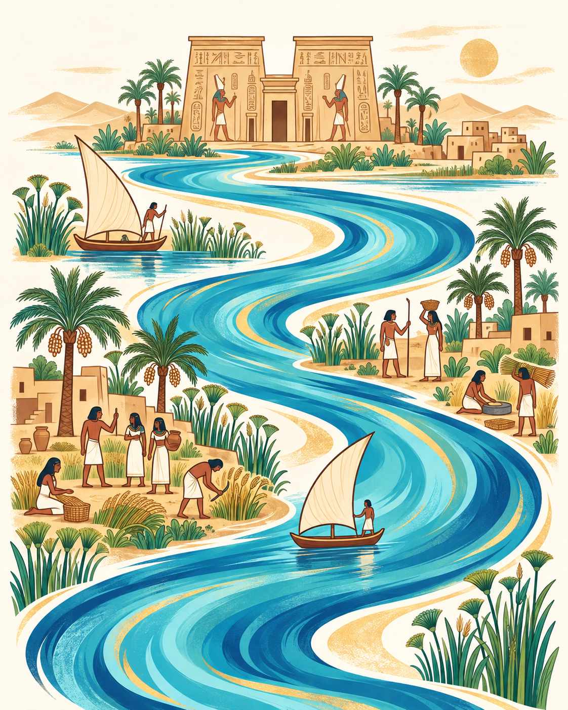

<!DOCTYPE html>
<html lang="ar" dir="rtl">
<head>
  <meta charset="UTF-8" />
  <meta name="viewport" content="width=device-width, initial-scale=1.0" />
  <title>المصرية القديمة - تعلم الهيروغليفية</title>
  <meta name="description" content="اكتشف اللغة المصرية القديمة وتعلّم الرموز الهيروغليفية والكلمات والقواعد خطوة بخطوة مع فارس محمد." />
  <link rel="canonical" href="https://tfs-first.github.io/Tourism2026/" />
  <meta property="og:type" content="website" />
  <meta property="og:locale" content="ar_EG" />
  <meta property="og:site_name" content="المصرية القديمة" />
  <meta property="og:title" content="المصرية القديمة — لغة صنعت حضارة" />
  <meta property="og:description" content="ابدأ رحلتك في تعلّم الهيروغليفية، واكتشف أصوات الأجداد خطوة بخطوة. إعداد فارس محمد." />
  <meta property="og:url" content="https://tfs-first.github.io/Tourism2026/" />
  <meta property="og:image" content="https://tfs-first.github.io/Tourism2026/assets/app-share-v3.jpg" />
  <meta property="og:image:secure_url" content="https://tfs-first.github.io/Tourism2026/assets/app-share-v3.jpg" />
  <meta property="og:image:type" content="image/jpeg" />
  <meta property="og:image:width" content="1280" />
  <meta property="og:image:height" content="1129" />
  <meta property="og:image:alt" content="واجهة تطبيق المصرية القديمة: لغة صنعت حضارة، وحكايتها تبدأ بيك، مع زر ابدأ رحلتك ورسمة النيل" />
  <meta name="twitter:card" content="summary_large_image" />
  <meta name="twitter:title" content="المصرية القديمة — لغة صنعت حضارة" />
  <meta name="twitter:description" content="تعلّم الهيروغليفية والكلمات والقواعد خطوة بخطوة مع فارس محمد." />
  <meta name="twitter:image" content="https://tfs-first.github.io/Tourism2026/assets/app-share-v3.jpg" />
  <script src="https://cdn.tailwindcss.com/3.4.17"></script>
  <script src="https://unpkg.com/react@18.3.1/umd/react.production.min.js" crossorigin></script>
  <script src="https://unpkg.com/react-dom@18.3.1/umd/react-dom.production.min.js" crossorigin></script>
  <script src="https://unpkg.com/@babel/standalone@7.26.9/babel.min.js"></script>
  <link rel="preconnect" href="https://fonts.googleapis.com">
  <link rel="preconnect" href="https://fonts.gstatic.com" crossorigin>
  <link href="https://fonts.googleapis.com/css2?family=Cairo:wght@400;500;600;700&family=Noto+Sans+Egyptian+Hieroglyphs&display=swap" rel="stylesheet">
  <style>
    body {
      font-family: 'Cairo', 'Segoe UI Historic', 'Noto Sans Egyptian Hieroglyphs', system-ui, -apple-system, sans-serif;
    }
    .font-\['Segoe_UI_Historic'\] {
      font-family: 'Segoe UI Historic', 'Noto Sans Egyptian Hieroglyphs', sans-serif;
    }
    @keyframes royalFloat {
      0%, 100% {
        transform: translateY(0px) rotate(0deg);
      }
      50% {
        transform: translateY(-16px) rotate(2deg);
      }
    }
    @keyframes royalFloatReverse {
      0%, 100% {
        transform: translateY(0px) rotate(0deg);
      }
      50% {
        transform: translateY(16px) rotate(-2deg);
      }
    }
    @keyframes goldPulseAura {
      0%, 100% {
        box-shadow: 0 0 25px rgba(245, 158, 11, 0.35), 0 0 60px rgba(217, 119, 6, 0.15);
      }
      50% {
        box-shadow: 0 0 50px rgba(245, 158, 11, 0.65), 0 0 95px rgba(217, 119, 6, 0.35);
      }
    }
    @keyframes shimmerGold {
      0% {
        background-position: -200% 0;
      }
      100% {
        background-position: 200% 0;
      }
    }
    @keyframes spinVerySlow {
      from {
        transform: rotate(0deg);
      }
      to {
        transform: rotate(360deg);
      }
    }
    .animate-royal-float {
      animation: royalFloat 6s ease-in-out infinite;
    }
    .animate-royal-float-delayed {
      animation: royalFloat 7.5s ease-in-out 1.5s infinite;
    }
    .animate-royal-float-reverse {
      animation: royalFloatReverse 8s ease-in-out infinite;
    }
    .animate-gold-pulse {
      animation: goldPulseAura 3.5s ease-in-out infinite;
    }
    .animate-spin-slow {
      animation: spinVerySlow 45s linear infinite;
    }
    .gold-gradient-text {
      background: linear-gradient(135deg, #fffbeb 0%, #fde68a 25%, #f59e0b 60%, #b45309 100%);
      -webkit-background-clip: text;
      -webkit-text-fill-color: transparent;
    }
    .gold-shimmer-btn {
      background: linear-gradient(90deg, #b45309, #f59e0b, #fef08a, #f59e0b, #b45309);
      background-size: 250% auto;
      animation: shimmerGold 5s linear infinite;
    }
  </style>
</head>
<body class="bg-stone-100 text-slate-900 overflow-x-hidden">
  <div id="root"></div>
  <script type="text/babel">
const { useState, useRef, useEffect, useMemo } = React;

// ==========================================
// 0. Icons (Built-in to prevent crashes)
// ==========================================
const Icon = ({ name, size = 24, className = "" }) => {
  const icons = {
    Compass: <g fill="none" stroke="currentColor" strokeWidth="2" strokeLinecap="round" strokeLinejoin="round"><circle cx="12" cy="12" r="10"></circle><polygon points="16.24 7.76 14.12 14.12 7.76 16.24 9.88 9.88 16.24 7.76"></polygon></g>,
    Award: <g fill="none" stroke="currentColor" strokeWidth="2" strokeLinecap="round" strokeLinejoin="round"><circle cx="12" cy="8" r="7"></circle><polyline points="8.21 13.89 7 23 12 20 17 23 15.79 13.88"></polyline></g>,
    ArrowRight: <g fill="none" stroke="currentColor" strokeWidth="2" strokeLinecap="round" strokeLinejoin="round"><line x1="19" y1="12" x2="5" y2="12"></line><polyline points="12 19 5 12 12 5"></polyline></g>,
    ArrowDown: <g fill="none" stroke="currentColor" strokeWidth="2" strokeLinecap="round" strokeLinejoin="round"><line x1="12" y1="5" x2="12" y2="19"></line><polyline points="19 12 12 19 5 12"></polyline></g>,
    Check: <g fill="none" stroke="currentColor" strokeWidth="2" strokeLinecap="round" strokeLinejoin="round"><polyline points="20 6 9 17 4 12"></polyline></g>,
    HelpCircle: <g fill="none" stroke="currentColor" strokeWidth="2" strokeLinecap="round" strokeLinejoin="round"><circle cx="12" cy="12" r="10"></circle><path d="M9.09 9a3 3 0 0 1 5.83 1c0 2-3 3-3 3"></path><line x1="12" y1="17" x2="12.01" y2="17"></line></g>,
    Eraser: <g fill="none" stroke="currentColor" strokeWidth="2" strokeLinecap="round" strokeLinejoin="round"><path d="M20 20H7L3 16C2.5 15.5 2.5 14.5 3 14L13 4C13.5 3.5 14.5 3.5 15 4L20 9C20.5 9.5 20.5 10.5 20 11L11 20H20V20Z"></path></g>,
    BookOpen: <g fill="none" stroke="currentColor" strokeWidth="2" strokeLinecap="round" strokeLinejoin="round"><path d="M2 3h6a4 4 0 0 1 4 4v14a3 3 0 0 0-3-3H2z"></path><path d="M22 3h-6a4 4 0 0 0-4 4v14a3 3 0 0 1 3-3h7z"></path></g>,
    PenTool: <g fill="none" stroke="currentColor" strokeWidth="2" strokeLinecap="round" strokeLinejoin="round"><path d="M12 19l7-7 3 3-7 7-3-3z"></path><path d="M18 13l-1.5-7.5L2 2l3.5 14.5L13 18l5-5z"></path><path d="M2 2l7.586 7.586"></path><circle cx="11" cy="11" r="2"></circle></g>,
    Map: <g fill="none" stroke="currentColor" strokeWidth="2" strokeLinecap="round" strokeLinejoin="round"><path d="M1 6v16l7-4 8 4 7-4V2l-7 4-8-4-7 4z"></path><line x1="8" y1="2" x2="8" y2="18"></line><line x1="16" y1="6" x2="16" y2="22"></line></g>,
    FileText: <g fill="none" stroke="currentColor" strokeWidth="2" strokeLinecap="round" strokeLinejoin="round"><path d="M14 2H6a2 2 0 0 0-2 2v16a2 2 0 0 0 2 2h12a2 2 0 0 0 2-2V8z"></path><polyline points="14 2 14 8 20 8"></polyline><line x1="16" y1="13" x2="8" y2="13"></line><line x1="16" y1="17" x2="8" y2="17"></line><polyline points="10 9 9 9 8 9"></polyline></g>,
    Gamepad2: <g fill="none" stroke="currentColor" strokeWidth="2" strokeLinecap="round" strokeLinejoin="round"><line x1="6" y1="12" x2="10" y2="12"></line><line x1="8" y1="10" x2="8" y2="14"></line><line x1="15" y1="13" x2="15.01" y2="13"></line><line x1="18" y1="11" x2="18.01" y2="11"></line><rect x="2" y="6" width="20" height="12" rx="2"></rect></g>,
    CheckCircle2: <g fill="none" stroke="currentColor" strokeWidth="2" strokeLinecap="round" strokeLinejoin="round"><path d="M22 11.08V12a10 10 0 1 1-5.93-9.14"></path><polyline points="22 4 12 14.01 9 11.01"></polyline></g>,
    XCircle: <g fill="none" stroke="currentColor" strokeWidth="2" strokeLinecap="round" strokeLinejoin="round"><circle cx="12" cy="12" r="10"></circle><line x1="15" y1="9" x2="9" y2="15"></line><line x1="9" y1="9" x2="15" y2="15"></line></g>,
    Library: <g fill="none" stroke="currentColor" strokeWidth="2" strokeLinecap="round" strokeLinejoin="round"><path d="M4 22h16"></path><path d="M4 2h16"></path><path d="M12 2v20"></path><path d="M8 2v20"></path><path d="M16 2v20"></path></g>,
    Edit3: <g fill="none" stroke="currentColor" strokeWidth="2" strokeLinecap="round" strokeLinejoin="round"><path d="M12 20h9"></path><path d="M16.5 3.5a2.121 2.121 0 0 1 3 3L7 19l-4 1 1-4L16.5 3.5z"></path></g>,
    Eye: <g fill="none" stroke="currentColor" strokeWidth="2" strokeLinecap="round" strokeLinejoin="round"><path d="M1 12s4-8 11-8 11 8 11 8-4 8-11 8-11-8-11-8z"></path><circle cx="12" cy="12" r="3"></circle></g>,
    EyeOff: <g fill="none" stroke="currentColor" strokeWidth="2" strokeLinecap="round" strokeLinejoin="round"><path d="M17.94 17.94A10.07 10.07 0 0 1 12 20c-7 0-11-8-11-8a18.45 18.45 0 0 1 5.06-5.94M9.9 4.24A9.12 9.12 0 0 1 12 4c7 0 11 8 11 8a18.5 18.5 0 0 1-2.16 3.19m-6.72-1.07a3 3 0 1 1-4.24-4.24"></path><line x1="1" y1="1" x2="23" y2="23"></line></g>,
    Layers: <g fill="none" stroke="currentColor" strokeWidth="2" strokeLinecap="round" strokeLinejoin="round"><path d="M12 2L2 7l10 5 10-5-10-5z"></path><path d="M2 17l10 5 10-5"></path><path d="M2 12l10 5 10-5"></path></g>,
    Lock: <g fill="none" stroke="currentColor" strokeWidth="2" strokeLinecap="round" strokeLinejoin="round"><rect x="3" y="11" width="18" height="11" rx="2" ry="2"></rect><path d="M7 11V7a5 5 0 0 1 10 0v4"></path></g>,
    Unlock: <g fill="none" stroke="currentColor" strokeWidth="2" strokeLinecap="round" strokeLinejoin="round"><rect x="3" y="11" width="18" height="11" rx="2" ry="2"></rect><path d="M7 11V7a5 5 0 0 1 9.9-1"></path></g>,
    Search: <g fill="none" stroke="currentColor" strokeWidth="2" strokeLinecap="round" strokeLinejoin="round"><circle cx="11" cy="11" r="8"></circle><line x1="21" y1="21" x2="16.65" y2="16.65"></line></g>,
    Sparkles: <g fill="none" stroke="currentColor" strokeWidth="2" strokeLinecap="round" strokeLinejoin="round"><path d="m12 3-1.912 5.813a2 2 0 0 1-1.275 1.275L3 12l5.813 1.912a2 2 0 0 1 1.275 1.275L12 21l1.912-5.813a2 2 0 0 1 1.275-1.275L21 12l-5.813-1.912a2 2 0 0 1-1.275-1.275L12 3Z"></path></g>,
    RotateCcw: <g fill="none" stroke="currentColor" strokeWidth="2" strokeLinecap="round" strokeLinejoin="round"><path d="M3 12a9 9 0 1 0 9-9 9.75 9.75 0 0 0-6.74 2.74L3 8"></path><path d="M3 3v5h5"></path></g>,
    ChevronDown: <g fill="none" stroke="currentColor" strokeWidth="2" strokeLinecap="round" strokeLinejoin="round"><polyline points="6 9 12 15 18 9"></polyline></g>,
    Home: <g fill="none" stroke="currentColor" strokeWidth="2" strokeLinecap="round" strokeLinejoin="round"><path d="M3 9l9-7 9 7v11a2 2 0 0 1-2 2H5a2 2 0 0 1-2-2z"></path><polyline points="9 22 9 12 15 12 15 22"></polyline></g>
  };
  return (
    <svg width={size} height={size} viewBox="0 0 24 24" className={className} xmlns="http://www.w3.org/2000/svg">
      {icons[name]}
    </svg>
  );
};

// ==========================================
// 1. Data: Uniliterals (Alphabet)
// ==========================================
const hieroglyphsData = [
  { h: "𓄿", gardiner: "G1", trans: "3", soundAr: "أ", descAr: "عقاب (نسر)", descEn: "Egyptian vulture", step: 17, examples: [{ word: "𓄿*𓊪*𓂧*𓅭", trans: "3pd", mean: "bird, fowl" }, { word: "𓅱*𓇋*𓄿*𓊛", trans: "wỉ3", mean: "divine bark" }, { word: "𓇋:𓂝*𓎛:𓇹", trans: "ỉʿḥ", mean: "moon" }] },
  { h: "𓇋", gardiner: "M17", trans: "ỉ", soundAr: "ي / إ", descAr: "نبات البردي", descEn: "Flowering reed", step: 12, examples: [{ word: "𓇋*𓅱", trans: "ỉw", mean: "is, are" }, { word: "𓇋*𓅓", trans: "ỉm", mean: "there" }, { word: "𓇋:𓂝*𓎛:𓇹", trans: "ỉʿḥ", mean: "moon" }] },
  { 
    h: "𓇌", 
    gardiner: "M17A",
    forms: [
      { sign: "𓇌", num: 1, name: "ورقتان بردي", descEn: "Two reed-flowers" },
      { sign: "𓏭", num: 2, name: "شرطتان مائلتان (\\\\)", descEn: "Two oblique strokes" }
    ],
    trans: "y", 
    soundAr: "ي (مشددة)", 
    descAr: "ورقتان بردي / شرطتان مائلتان", 
    descEn: "Two reed-flowers / Two oblique strokes", 
    step: 18, 
    examples: [
      { word: "𓎡*𓇌", trans: "ky", mean: "other (m)" }, 
      { word: "𓎡:𓏭", trans: "ky", mean: "other (m) [بالشكل 2]" },
      { word: "𓇋:𓏠*𓈖:𓇌", trans: "ỉmny", mean: "Ameny (name)" },
      { word: "𓇋:𓏠*𓈖:𓏭", trans: "ỉmny", mean: "Ameny (name) [بالشكل 2]" }
    ] 
  },
  { h: "𓂝", gardiner: "D36", trans: "ʿ", soundAr: "ع", descAr: "ذراع", descEn: "Forearm", step: 8, examples: [{ word: "𓂋:𓂝*𓇳", trans: "rʿ", mean: "sun, Re" }, { word: "𓎛:𓈖*𓂝", trans: "ḥnʿ", mean: "together with" }, { word: "𓇋:𓂝*𓎛:𓇹", trans: "ỉʿḥ", mean: "moon" }] },
  { 
    h: "𓅱", 
    gardiner: "G43",
    forms: [
      { sign: "𓅱", num: 1, name: "فرخ السمان", descEn: "Quail chick" },
      { sign: "𓏲", num: 2, name: "حبل ملفوف (مختصر)", descEn: "Coil of rope" }
    ],
    trans: "w", 
    soundAr: "و", 
    descAr: "فرخ السمان / حبل ملفوف", 
    descEn: "Quail chick / Coil of rope", 
    step: 4, 
    examples: [
      { word: "𓃀*𓅱", trans: "bw", mean: "place" }, 
      { word: "𓃀*𓏲", trans: "bw", mean: "place [بالشكل 2]" },
      { word: "𓇋*𓅱", trans: "ỉw", mean: "is, are" }, 
      { word: "𓅱*𓃀*𓈖:𓇳", trans: "wbn", mean: "rise, shine" }
    ] 
  },
  { h: "𓃀", gardiner: "D58", trans: "b", soundAr: "ب", descAr: "قدم", descEn: "Foot", step: 5, examples: [{ word: "𓃀*𓅱", trans: "bw", mean: "place" }, { word: "𓅱*𓃀*𓈖:𓇳", trans: "wbn", mean: "rise, shine" }, { word: "𓋴*𓈖:𓃀", trans: "snb", mean: "health" }] },
  { h: "𓊪", gardiner: "Q3", trans: "p", soundAr: "پ", descAr: "كرسي", descEn: "Stool", step: 6, examples: [{ word: "𓊪:𓈖", trans: "pn", mean: "this (m)" }, { word: "𓊪:𓏏*𓇯", trans: "pt", mean: "sky" }, { word: "𓊪:𓏏*𓎛", trans: "Ptḥ", mean: "Ptah" }] },
  { h: "𓆑", gardiner: "I9", trans: "f", soundAr: "ف", descAr: "أفعى", descEn: "Horned viper", step: 13, examples: [{ word: "𓆑", trans: "f", mean: "he, his" }, { word: "𓋴*𓆑:𓏏", trans: "sft", mean: "slaughter" }] },
  { 
    h: "𓅓", 
    gardiner: "G17",
    forms: [
      { sign: "𓅓", num: 1, name: "بومة", descEn: "Owl" },
      { sign: "𓐝", num: 2, name: "قطعة ضلع", descEn: "Rib / piece of meat" }
    ],
    trans: "m", 
    soundAr: "م", 
    descAr: "بومة / قطعة ضلع", 
    descEn: "Owl / Rib", 
    step: 3, 
    examples: [
      { word: "𓅓", trans: "m", mean: "in, with" }, 
      { word: "𓐝", trans: "m", mean: "in, with [بالشكل 2]" },
      { word: "𓐍*𓅓*𓂜", trans: "ḫm", mean: "not know" }, 
      { word: "𓋴*𓄔*𓅓", trans: "sḏm", mean: "hear" }
    ] 
  },
  { h: "𓈖", gardiner: "N35", trans: "n", soundAr: "ن", descAr: "موجة ماء", descEn: "Water", step: 1, examples: [{ word: "𓈖", trans: "n", mean: "to, for" }, { word: "𓂋:𓈖", trans: "rn", mean: "name" }, { word: "𓊪:𓈖", trans: "pn", mean: "this (m)" }] },
  { h: "𓂋", gardiner: "D21", trans: "r", soundAr: "ر", descAr: "فم", descEn: "Mouth", step: 2, examples: [{ word: "𓂋", trans: "r", mean: "to, towards" }, { word: "𓂋:𓈖", trans: "rn", mean: "name" }, { word: "𓂋:𓂝*𓇳", trans: "rʿ", mean: "sun" }] },
  { h: "𓉔", gardiner: "O4", trans: "h", soundAr: "هـ", descAr: "مأوى (خيمة)", descEn: "Reed shelter", step: 9, examples: [{ word: "𓉔*𓄿*𓂻", trans: "h3", mean: "go down" }, { word: "𓉔:𓂋*𓅱:𓇳", trans: "hrw", mean: "day" }, { word: "𓊪:𓏏*𓎛", trans: "Ptḥ", mean: "Ptah (variant)" }] },
  { h: "𓎛", gardiner: "V28", trans: "ḥ", soundAr: "ح", descAr: "فتيل كتان", descEn: "Wick of twisted flax", step: 10, examples: [{ word: "𓎛:𓈖*𓂝", trans: "ḥnʿ", mean: "together with" }, { word: "𓊪:𓏏*𓎛", trans: "Ptḥ", mean: "Ptah" }, { word: "𓎼:𓂋*𓎛*𓄛", trans: "grḥ", mean: "night" }] },
  { h: "𓐍", gardiner: "Aa1", trans: "ḫ", soundAr: "خ", descAr: "مشيمة", descEn: "Placenta", step: 11, examples: [{ word: "𓐍:𓏏", trans: "ḫt", mean: "thing" }, { word: "𓂋:𓐍*𓏛", trans: "rḫ", mean: "know" }, { word: "𓐍*𓅓*𓂜", trans: "ḫm", mean: "not know" }] },
  { h: "𓄡", gardiner: "F32", trans: "ẖ", soundAr: "خ (خفيفة)", descAr: "بطن حيوان", descEn: "Animal's belly", step: 19, examples: [{ word: "𓄡:𓂋*𓂧*𓀔", trans: "ẖrd", mean: "child" }] },
  { 
    h: "𓋴", 
    gardiner: "S29",
    forms: [
      { sign: "𓊃", num: 1, name: "مزلاج الباب", descEn: "Door bolt" },
      { sign: "𓋴", num: 2, name: "قماش مطوي", descEn: "Folded cloth" }
    ],
    trans: "s", 
    soundAr: "س (أصلها ز)", 
    descAr: "مزلاج الباب / قماش مطوي", 
    descEn: "Door bolt / Folded cloth", 
    step: 14, 
    examples: [
      { word: "𓋴*𓀀", trans: "s", mean: "man" }, 
      { word: "𓊃*𓀀", trans: "s", mean: "man [بالمزلاج]" },
      { word: "𓋴:𓏏*𓁐", trans: "st", mean: "woman" }, 
      { word: "𓊃:𓏏*𓁐", trans: "st", mean: "woman [بالمزلاج]" },
      { word: "𓋴*𓄔*𓅓", trans: "sḏm", mean: "hear" }
    ] 
  },
  { h: "𓈙", gardiner: "N37", trans: "š", soundAr: "ش", descAr: "بركة", descEn: "Pool", step: 20, examples: [{ word: "𓈙:𓈘", trans: "š", mean: "lake" }, { word: "𓂋:𓈙*𓅱:𓏏*𓏛", trans: "ršwt", mean: "joy" }] },
  { h: "𓈎", gardiner: "N29", trans: "ḳ", soundAr: "ق", descAr: "تل", descEn: "Hill-slope", step: 21, examples: [{ word: "𓂝:𓂋*𓈎", trans: "ʿrḳ", mean: "swear" }] },
  { h: "𓎡", gardiner: "V31", trans: "k", soundAr: "ك", descAr: "سلة", descEn: "Basket", step: 15, examples: [{ word: "𓎡*𓇌", trans: "ky", mean: "other (m)" }, { word: "𓎡:𓏏", trans: "kt", mean: "other (f)" }] },
  { h: "𓎼", gardiner: "W11", trans: "g", soundAr: "ج (قاهرية)", descAr: "حامل جرة", descEn: "Stand for jar", step: 22, examples: [{ word: "𓎼:𓂋*𓀁", trans: "gr", mean: "be silent" }, { word: "𓎼:𓂋*𓎛*𓄛", trans: "grḥ", mean: "night" }] },
  { h: "𓏏", gardiner: "X1", trans: "t", soundAr: "ت", descAr: "رغيف خبز", descEn: "Loaf", step: 7, examples: [{ word: "𓏏:𓈖", trans: "tn", mean: "this (f)" }, { word: "𓎡:𓏏", trans: "kt", mean: "other (f)" }, { word: "𓊪:𓏏*𓇯", trans: "pt", mean: "sky" }] },
  { h: "𓍿", gardiner: "V13", trans: "ṯ", soundAr: "تش", descAr: "حبل ربط", descEn: "Tethering rope", step: 23, examples: [{ word: "𓍿:𓋴*𓅓*𓃡", trans: "ṯsm", mean: "hound" }] },
  { h: "𓂧", gardiner: "D46", trans: "d", soundAr: "د", descAr: "يد", descEn: "Hand", step: 16, examples: [{ word: "𓂧*𓊪:𓏏*𓊛", trans: "dpt", mean: "boat" }, { word: "𓋴*𓄔*𓅓", trans: "sḏm", mean: "hear" }] },
  { h: "𓆓", gardiner: "I10", trans: "ḏ", soundAr: "ج", descAr: "أفعى كوبرا", descEn: "Snake", step: 24, examples: [{ word: "𓆓:𓂧", trans: "ḏd", mean: "say, speak" }, { word: "𓈖:𓆓*𓋴*𓅪*𓀀", trans: "nḏs", mean: "poor man" }] }
];

// ==========================================
// 2. Data: Grammar
// ==========================================
const grammarData = [
  {
    id: "lesson1", 
    titleEn: "Lesson I: Prepositions, Demonstratives & Sentence Particles",
    titleAr: "الدرس الأول: حروف الجر، أسماء الإشارة، وأدوات الجملة",
    badges: [
      { id: "rule-1-1", label: "Prepositions (حروف الجر)" },
      { id: "rule-1-2", label: "Demonstratives (أسماء الإشارة)" },
      { id: "rule-1-3", label: "Adverb ỉm (الظرف)" }
    ],
    rules: [
      {
        id: "rule-1-1",
        ruleNum: 1,
        type: "structured",
        badgeEn: "Prepositions",
        badgeAr: "حروف الجر",
        titleEn: "Rule 1: Egyptian Prepositions & Syntax",
        titleAr: "حروف الجر وموضعها قبل الاسم المجرور",
        formula: "[ Preposition ] + [ Noun ]",
        summaryEn: "Prepositions in Ancient Egyptian always directly precede the noun they govern.",
        summaryAr: "تأتي حروف الجر في اللغة المصرية القديمة دائماً قبل الاسم المجرور مباشرة.",
        points: [
          {
            num: "1",
            titleEn: "The Preposition 'm' (𓅓): in, with, from",
            descEn: "Has three main contextual meanings depending on the sentence:",
            indicatorAr: "حرف الجر m: في / بواسطة / من",
            subPoints: [
              { label: "1. Locative (المكانية)", text: "in", examples: [
                { h: "𓅓 𓊪:𓏏*𓇯", trans: "m pt", mean: "in the sky" },
                { h: "𓅓 𓂧*𓊪:𓏏*𓊛", trans: "m dpt", mean: "in a boat" }
              ] },
              { label: "2. Instrumental (الوسيلة والأداة)", text: "by means of, with", examples: [
                { h: "𓅓 𓐍:𓏏 𓏏:𓈖", trans: "m ḫt tn", mean: "with this thing" }
              ] },
              { label: "3. Separative (الانفصال والابتداء)", text: "from, out of", examples: [
                { h: "𓅓 𓃀*𓅱 𓊪:𓈖", trans: "m bw pn", mean: "from this place" }
              ] }
            ]
          },
          {
            num: "2",
            titleEn: "The Preposition 'n' (𓈖): to, for (Dative - To Persons)",
            descEn: "Strictly used for people, deities, and living beings (العاقل):",
            indicatorAr: "يختص بالعاقل والأشخاص والآلهة",
            subPoints: [
              { label: "1. Direction to Persons (الاتجاه نحو العاقل)", text: "to a person or deity", examples: [
                { h: "𓈖 𓊃*𓀀", trans: "n s", mean: "to a man" },
                { h: "𓈖 𓊪:𓏏*𓎛", trans: "n Ptḥ", mean: "to Ptah" }
              ] },
              { label: "2. Dative of Interest (المفعول لأجله)", text: "for, on behalf of", examples: [
                { h: "𓈖 𓇋*𓏏*𓀀", trans: "n ỉt", mean: "for the father" },
                { h: "𓈖 𓊃:𓏏*𓁐", trans: "n st", mean: "for a woman" }
              ] }
            ]
          },
          {
            num: "3",
            titleEn: "The Preposition 'r' (𓂋): to, towards, into (To Places / Things)",
            descEn: "Denotes motion or direction toward places, celestial bodies, and inanimate things:",
            indicatorAr: "يختص بالأماكن والجمادات والاتجاهات",
            subPoints: [
              { label: "1. Direction to Places (الاتجاه نحو الأماكن)", text: "to, into, towards a place", examples: [
                { h: "𓂋 𓈙:𓈘", trans: "r š", mean: "to a lake" },
                { h: "𓂋 𓊪:𓏏*𓇯", trans: "r pt", mean: "to the sky" }
              ] },
              { label: "2. Destination / Inanimate (نحو الجمادات)", text: "towards a physical location", examples: [
                { h: "𓂋 𓃀*𓅱 𓊪:𓈖", trans: "r bw pn", mean: "to this place" }
              ] }
            ]
          },
          {
            num: "4",
            titleEn: "The Preposition 'ḥnʿ' (𓎛𓈖𓂝): together with, and",
            descEn: "Connects two nouns together indicating company or association:",
            indicatorAr: "يربط بين اسمين بمعنى: مع / بصحبة / و",
            subPoints: [
              { label: "1. Association (المصاحبة والمعية)", text: "together with, along with", examples: [
                { h: "𓊃*𓀀 𓎛:𓈖*𓂝 𓊃:𓏏*𓁐", trans: "s ḥnʿ st", mean: "a man with a woman" }
              ] },
              { label: "2. Nominal Conjunction (العطف بين الأسماء)", text: "and (joining nouns)", examples: [
                { h: "𓂋:𓂝*𓇳 𓎛:𓈖*𓂝 𓇋:𓂝*𓎛:𓇹", trans: "rʿ ḥnʿ ỉʿḥ", mean: "sun and moon" }
              ] }
            ]
          },
          {
            num: "5",
            titleEn: "Distinction between 'n' and 'r'",
            descEn: "Essential rule for identifying prepositions correctly:",
            indicatorAr: "الفرق بين حرفي الجر n و r",
            subPoints: [
              { label: "Use 'n' (𓈖)", text: "when motion or dative is toward a PERSON or DEITY", examples: [
                { h: "𓈖 𓊃*𓀀", trans: "n s", mean: "to a man" },
                { h: "𓈖 𓊪:𓏏*𓎛", trans: "n Ptḥ", mean: "to Ptah" }
              ] },
              { label: "Use 'r' (𓂋)", text: "when motion is toward a PLACE or INANIMATE THING", examples: [
                { h: "𓂋 𓈙:𓈘", trans: "r š", mean: "to a lake" },
                { h: "𓂋 𓊪:𓏏*𓇯", trans: "r pt", mean: "to the sky" }
              ] }
            ]
          }
        ],
        examples: [
          { h: "𓅓 𓊪:𓏏*𓇯", trans: "m pt", meanEn: "In the sky", meanAr: "في السماء", noteEn: "Preposition (m) 'in' + Noun (pt).", noteAr: "حرف الجر m يسبق الاسم" },
          { h: "𓅓 𓂧*𓊪:𓏏*𓊛", trans: "m dpt", meanEn: "In a boat", meanAr: "في قارب", noteEn: "Preposition (m) 'in' + Noun (dpt).", noteAr: "حرف الجر m يسبق الاسم" },
          { h: "𓈖 𓊃*𓀀", trans: "n s", meanEn: "To a man", meanAr: "إلى رجل", noteEn: "Preposition (n) 'to' used before person.", noteAr: "حرف الجر n للعاقل" },
          { h: "𓈖 𓊪:𓏏*𓎛", trans: "n Ptḥ", meanEn: "To Ptah", meanAr: "إلى الإله بتاح", noteEn: "Preposition (n) 'to' before deity.", noteAr: "حرف الجر n للآلهة" },
          { h: "𓂋 𓈙:𓈘", trans: "r š", meanEn: "To a lake", meanAr: "إلى بحيرة", noteEn: "Preposition (r) 'to' before place.", noteAr: "حرف الجر r للأماكن" },
          { h: "𓂋 𓊪:𓏏*𓇯", trans: "r pt", meanEn: "To the sky", meanAr: "إلى السماء", noteEn: "Preposition (r) 'to' before celestial place.", noteAr: "حرف الجر r للأماكن" },
          { h: "𓊃*𓀀 𓎛:𓈖*𓂝 𓊃:𓏏*𓁐", trans: "s ḥnʿ st", meanEn: "A man together with a woman", meanAr: "رجل مع امرأة", noteEn: "Preposition (ḥnʿ) connecting two nouns.", noteAr: "ḥnʿ يربط اسمين بمعنى مع" },
          { h: "𓂋:𓂝*𓇳 𓎛:𓈖*𓂝 𓇋:𓂝*𓎛:𓇹", trans: "rʿ ḥnʿ ỉʿḥ", meanEn: "The sun together with the moon", meanAr: "الشمس بصحبة القمر", noteEn: "Preposition (ḥnʿ) connecting celestial bodies.", noteAr: "ḥnʿ للعطف والمصاحبة" }
        ]
      },
      {
        id: "rule-1-2",
        ruleNum: 2,
        type: "structured",
        badgeEn: "Demonstratives",
        badgeAr: "أسماء الإشارة",
        titleEn: "Rule 2: Demonstratives (Post-positive vs. Pre-positive)",
        titleAr: "أسماء الإشارة وموضعها في الجملة",
        formulas: [
          { titleEn: "Post-positive (After Noun)", titleAr: "تأتي بعد الاسم مباشرة", formula: "[ Noun ] + [ pn / tn (this) ]" },
          { titleEn: "Pre-positive (Before Noun)", titleAr: "تأتي قبل الاسم مباشرة", formula: "[ ky / kt (other) ] + [ Noun ]" }
        ],
        summaryEn: "Demonstratives meaning 'this' follow the noun; demonstratives meaning 'other' precede the noun.",
        summaryAr: "أسماء الإشارة للقريب (هذا/هذه) تتبع الاسم، وأسماء الإشارة للمغايرة (آخر/أخرى) تسبق الاسم.",
        points: [
          {
            num: "1",
            titleEn: "'pn' (𓊪𓈖) - 'this' (Masculine Singular) [Post-positive]",
            descEn: "Masculine demonstrative meaning 'this'. It strictly FOLLOWS the noun it qualifies:",
            indicatorAr: "مفرد مذكر: يأتي دائماً بعد الاسم",
            subPoints: [
              { label: "Word Order", text: "Noun + pn", examples: [
                { h: "𓂋:𓈖 𓊪:𓈖", trans: "rn pn", mean: "this name" },
                { h: "𓊃*𓀀 𓊪:𓈖", trans: "s pn", mean: "this man" }
              ] },
              { label: "Agreement", text: "Agrees in gender (masculine) with its noun", examples: [
                { h: "𓋴*𓐍:𓂋*𓏛 𓊪:𓈖", trans: "sḫr pn", mean: "this plan" }
              ] }
            ]
          },
          {
            num: "2",
            titleEn: "'tn' (𓏏𓈖) - 'this' (Feminine Singular) [Post-positive]",
            descEn: "Feminine demonstrative meaning 'this'. It strictly FOLLOWS the noun it qualifies:",
            indicatorAr: "مفرد مؤنث: يأتي دائماً بعد الاسم",
            subPoints: [
              { label: "Word Order", text: "Noun + tn", examples: [
                { h: "𓊪:𓏏*𓇯 𓏏:𓈖", trans: "pt tn", mean: "this sky" },
                { h: "𓐍:𓏏 𓏏:𓈖", trans: "ḫt tn", mean: "this thing" }
              ] },
              { label: "Agreement", text: "Agrees in gender (feminine) with its noun", examples: [
                { h: "𓂧*𓊪:𓏏*𓊛 𓏏:𓈖", trans: "dpt tn", mean: "this boat" }
              ] }
            ]
          },
          {
            num: "3",
            titleEn: "'ky' (𓎡𓇌) - 'other, another' (Masculine Singular) [Pre-positive]",
            descEn: "Masculine demonstrative meaning 'other / another'. It strictly PRECEDES the noun:",
            indicatorAr: "مفرد مذكر: يأتي دائماً قبل الاسم",
            subPoints: [
              { label: "Word Order", text: "ky + Noun", examples: [
                { h: "𓎡*𓇌 𓃀*𓅱", trans: "ky bw", mean: "another place" },
                { h: "𓎡*𓇌 𓊃*𓀀", trans: "ky s", mean: "another man" }
              ] },
              { label: "Usage", text: "Placed before masculine singular nouns", examples: [
                { h: "𓎡*𓇌 𓂋:𓈖", trans: "ky rn", mean: "another name" }
              ] }
            ]
          },
          {
            num: "4",
            titleEn: "'kt' (𓎡𓏏) - 'other, another' (Feminine Singular) [Pre-positive]",
            descEn: "Feminine demonstrative meaning 'other / another'. It strictly PRECEDES the noun:",
            indicatorAr: "مفرد مؤنث: يأتي دائماً قبل الاسم",
            subPoints: [
              { label: "Word Order", text: "kt + Noun", examples: [
                { h: "𓎡:𓏏 𓐍:𓏏", trans: "kt ḫt", mean: "another thing" },
                { h: "𓎡:𓏏 𓊃:𓏏*𓁐", trans: "kt st", mean: "another woman" }
              ] },
              { label: "Usage", text: "Placed before feminine singular nouns", examples: [
                { h: "𓎡:𓏏 𓂧*𓊪:𓏏*𓊛", trans: "kt dpt", mean: "another boat" }
              ] }
            ]
          },
          {
            num: "5",
            titleEn: "Position Summary",
            descEn: "Quick reference guide to demonstrative positions:",
            indicatorAr: "ملخص موضع أسماء الإشارة",
            subPoints: [
              { label: "Proximity ('this')", text: "pn (m.) and tn (f.) are Post-positive (come AFTER the noun)", examples: [
                { h: "𓂋:𓈖 𓊪:𓈖", trans: "rn pn", mean: "this name" },
                { h: "𓊪:𓏏*𓇯 𓏏:𓈖", trans: "pt tn", mean: "this sky" }
              ] },
              { label: "Alterity ('other')", text: "ky (m.) and kt (f.) are Pre-positive (come BEFORE the noun)", examples: [
                { h: "𓎡*𓇌 𓃀*𓅱", trans: "ky bw", mean: "another place" },
                { h: "𓎡:𓏏 𓐍:𓏏", trans: "kt ḫt", mean: "another thing" }
              ] }
            ]
          }
        ],
        examples: [
          { h: "𓂋:𓈖 𓊪:𓈖", trans: "rn pn", meanEn: "This name", meanAr: "هذا الاسم", noteEn: "Demonstrative (pn) follows masculine noun.", noteAr: "اسم الإشارة pn بعد الاسم المذكر" },
          { h: "𓊃*𓀀 𓊪:𓈖", trans: "s pn", meanEn: "This man", meanAr: "هذا الرجل", noteEn: "Demonstrative (pn) follows noun (s).", noteAr: "اسم الإشارة pn بعد الاسم" },
          { h: "𓊪:𓏏*𓇯 𓏏:𓈖", trans: "pt tn", meanEn: "This sky", meanAr: "هذه السماء", noteEn: "Demonstrative (tn) follows feminine noun.", noteAr: "اسم الإشارة tn بعد الاسم المؤنث" },
          { h: "𓐍:𓏏 𓏏:𓈖", trans: "ḫt tn", meanEn: "This thing", meanAr: "هذا الشيء", noteEn: "Demonstrative (tn) follows feminine noun.", noteAr: "اسم الإشارة tn بعد الاسم المؤنث" },
          { h: "𓎡*𓇌 𓃀*𓅱", trans: "ky bw", meanEn: "Another place", meanAr: "مكان آخر", noteEn: "Demonstrative (ky) precedes noun (bw).", noteAr: "اسم الإشارة ky قبل الاسم المذكر" },
          { h: "𓎡*𓇌 𓊃*𓀀", trans: "ky s", meanEn: "Another man", meanAr: "رجل آخر", noteEn: "Demonstrative (ky) precedes noun (s).", noteAr: "اسم الإشارة ky قبل الاسم المذكر" },
          { h: "𓎡:𓏏 𓐍:𓏏", trans: "kt ḫt", meanEn: "Another thing", meanAr: "شيء آخر", noteEn: "Demonstrative (kt) precedes noun (ḫt).", noteAr: "اسم الإشارة kt قبل الاسم المؤنث" },
          { h: "𓎡:𓏏 𓂧*𓊪:𓏏*𓊛", trans: "kt dpt", meanEn: "Another boat", meanAr: "قارب آخر", noteEn: "Demonstrative (kt) precedes noun (dpt).", noteAr: "اسم الإشارة kt قبل الاسم المؤنث" }
        ]
      },
      {
        id: "rule-1-3",
        ruleNum: 3,
        type: "structured",
        badgeEn: "Adverb of Place",
        badgeAr: "ظرف المكان",
        titleEn: "Rule 3: The Adverb 'ỉm' as Adverbial Predicate",
        titleAr: "الظرف المكاني ỉm كخبر ظرفي تام",
        formula: "[ Subject (المبتدأ) ] + [ ỉm (there / هناك) ]",
        summaryEn: "The word 'ỉm' is an adverb of place meaning 'there / therein', functioning directly as the predicate.",
        summaryAr: "الكلمة ỉm ظرف مكان بمعنى 'هناك'، وتعمل مباشرة كخبر شبه جملة.",
        points: [
          {
            num: "1",
            titleEn: "Semantic Meaning: 'there / therein'",
            descEn: "Corresponds to English 'there' or 'in that place' without requiring a preposition:",
            indicatorAr: "المعنى: هناك / فيها",
            subPoints: [
              { label: "1. Meaning", text: "Refers to a place previously mentioned or understood", examples: [
                { h: "𓇋*𓅓", trans: "ỉm", mean: "there / in that place" }
              ] },
              { label: "2. Form", text: "Written with flowering reed and owl", examples: [
                { h: "𓇋*𓅓", trans: "ỉm", mean: "adverb of place" }
              ] }
            ]
          },
          {
            num: "2",
            titleEn: "Syntactic Function as Predicate",
            descEn: "Functions as a complete Adverbial Predicate in non-verbal sentences:",
            indicatorAr: "الوظيفة: خبر شبه جملة تام",
            subPoints: [
              { label: "1. Position", text: "Follows the Subject directly", examples: [
                { h: "𓊃*𓀀 𓇋*𓅓", trans: "s ỉm", mean: "a man is there" }
              ] },
              { label: "2. Predicate Role", text: "Replaces prepositional phrases like 'in that place'", examples: [
                { h: "𓂋:𓂝*𓇳 𓇋*𓅓", trans: "rʿ ỉm", mean: "Re is there" }
              ] }
            ]
          }
        ],
        examples: [
          { h: "𓊃*𓀀 𓇋*𓅓", trans: "s ỉm", meanEn: "A man is there", meanAr: "رجلٌ هناك", noteEn: "Subject (s) + Adverbial Predicate (ỉm).", noteAr: "مبتدأ (رجل) + خبر ظرفي (هناك)" },
          { h: "𓂋:𓂝*𓇳 𓇋*𓅓", trans: "rʿ ỉm", meanEn: "Re is there", meanAr: "الإله رع هناك", noteEn: "Subject (rʿ) + Adverb of place (ỉm).", noteAr: "مبتدأ (رع) + خبر ظرفي (هناك)" },
          { h: "𓏞*𓀀 𓇋*𓅓", trans: "sš ỉm", meanEn: "The scribe is there", meanAr: "الكاتب هناك", noteEn: "Subject (sš) + Adverb of place (ỉm).", noteAr: "مبتدأ (الكاتب) + خبر ظرفي (هناك)" }
        ]
      }
    ]
  },
  {
    id: "lesson2", 
    titleEn: "Lesson II: Nominal & Verbal Sentences, Ideograms & Determinatives",
    titleAr: "الدرس الثاني: الجملة الاسمية، الجملة الفعلية، والعلامات والمخصصات",
    badges: [
      { id: "rule-2-1", label: "Nominal Sentences (الجملة الاسمية)" },
      { id: "rule-2-2", label: "Verbal Sentences (الجملة الفعلية)" },
      { id: "rule-2-3", label: "Ideograms & Stroke (العلامات والشرطة)" },
      { id: "rule-2-4", label: "Determinatives (المخصصات)" },
      { id: "rule-2-5", label: "Generic Determinatives (المخصصات العامة)" },
      { id: "rule-2-6", label: "Gender (التذكير والتأنيث)" }
    ],
    rules: [
      {
        id: "rule-2-1",
        ruleNum: 1,
        type: "structured",
        badgeEn: "Nominal Sentences",
        badgeAr: "الجملة الاسمية",
        titleEn: "Rule 1: Sentences with Adverbial Predicate (With / Without 'ỉw')",
        titleAr: "الجملة الاسمية ذات الخبر شبه الجملة (مع ỉw وبدون ỉw)",
        formula: "[ Subject (المبتدأ) ] + [ Adverbial Predicate (خبر شبه جملة: جار ومجرور أو ظرف) ]",
        summaryEn: "Non-verbal sentences composed of a Subject and an Adverbial Predicate. Contextual translations without 'ỉw'; emphatic assertion with 'ỉw'.",
        summaryAr: "جملة خالية من الأفعال تتكون من مبتدأ وخبر شبه جملة (جار ومجرور أو ظرف).",
        points: [
          {
            num: "1",
            titleEn: "Basic Architecture (Subject + Adverbial Predicate)",
            descEn: "Consists of two elements without an overt copula verb 'to be':",
            indicatorAr: "التركيب: مبتدأ + خبر شبه جملة",
            subPoints: [
              { label: "1. Subject (المبتدأ)", text: "Noun, proper name, or pronoun", examples: [
                { h: "𓂋:𓂝*𓇳", trans: "rʿ", mean: "Re" },
                { h: "𓏞*𓀀", trans: "sš", mean: "the scribe" }
              ] },
              { label: "2. Adverbial Predicate (خبر شبه جملة)", text: "Prepositional phrase or adverb", examples: [
                { h: "𓅓 𓊪:𓏏*𓇯", trans: "m pt", mean: "in the sky" },
                { h: "𓇋*𓅓", trans: "ỉm", mean: "there" }
              ] }
            ]
          },
          {
            num: "2",
            titleEn: "Without 'ỉw' - Diverse Contextual Meanings",
            descEn: "A bare sentence like 'rʿ m pt' expresses diverse contextual nuances:",
            indicatorAr: "بدون ỉw: تحتمل الحاضر والماضي والحالية والتمني",
            subPoints: [
              { label: "1. Present Tense (الحاضر)", text: "The sun is in the sky", examples: [
                { h: "𓂋:𓂝*𓇳 𓅓 𓊪:𓏏*𓇯", trans: "rʿ m pt", mean: "The sun is in the sky" }
              ] },
              { label: "2. Past Tense (الماضي)", text: "The sun was in the sky", examples: [
                { h: "𓂋:𓂝*𓇳 𓅓 𓊪:𓏏*𓇯", trans: "rʿ m pt", mean: "The sun was in the sky" }
              ] },
              { label: "3. Circumstantial (الحالية)", text: "When the sun is/was in the sky", examples: [
                { h: "𓂋:𓂝*𓇳 𓅓 𓊪:𓏏*𓇯", trans: "rʿ m pt", mean: "When the sun is in the sky" }
              ] },
              { label: "4. Optative (التمني والرجاء)", text: "Let the sun be in the sky", examples: [
                { h: "𓂋:𓂝*𓇳 𓅓 𓊪:𓏏*𓇯", trans: "rʿ m pt", mean: "Let the sun be in the sky" }
              ] }
            ]
          },
          {
            num: "3",
            titleEn: "With 'ỉw' - Narrowed Emphatic Assertion",
            descEn: "When introduced by auxiliary 'ỉw' (𓇋𓅱) as in 'ỉw rʿ m pt':",
            indicatorAr: "مع ỉw: جملة رئيسية مستقلة ومؤكدة بـ إنّ",
            subPoints: [
              { label: "1. Emphatic Assertion", text: "The sun is in the sky / Indeed, the sun is in the sky", examples: [
                { h: "𓇋*𓅱 𓂋:𓂝*𓇳 𓅓 𓊪:𓏏*𓇯", trans: "ỉw rʿ m pt", mean: "Indeed, the sun is in the sky" }
              ] },
              { label: "2. Restriction", text: "Restricted strictly to independent main clauses", examples: [
                { h: "𓇋*𓅱 𓏞*𓀀 𓅓 𓊖:(𓏏*𓏤)", trans: "ỉw sš m nỉwt", mean: "The scribe is in the city" }
              ] }
            ]
          }
        ],
        examples: [
          { h: "𓂋:𓂝*𓇳 𓅓 𓊪:𓏏*𓇯", trans: "rʿ m pt", meanEn: "The sun is (was, will be) in the sky / When the sun is in the sky", meanAr: "الشمس في السماء (أوجه متعددة)", noteEn: "Without ỉw: Present, Past, Circumstantial, or Optative.", noteAr: "بدون ỉw: أوجه متعددة حسب السياق" },
          { h: "𓇋*𓅱 𓂋:𓂝*𓇳 𓅓 𓊪:𓏏*𓇯", trans: "ỉw rʿ m pt", meanEn: "The sun is in the sky [Emphatic Statement]", meanAr: "إنّ الشمس في السماء (توكيدية)", noteEn: "With ỉw: Narrowed to an independent affirmative main clause.", noteAr: "مع ỉw: جملة مستقلة ومؤكدة" },
          { h: "𓇋*𓅱 𓏞*𓀀 𓅓 𓊖:(𓏏*𓏤)", trans: "ỉw sš m nỉwt", meanEn: "The scribe is in the city.", meanAr: "الكاتب في المدينة", noteEn: "Particle (ỉw) + Subject (sš) + Prepositional phrase (m nỉwt).", noteAr: "أداة توكيد + مبتدأ + خبر شبه جملة" },
          { h: "𓂋:𓂝*𓇳 𓇋*𓅓", trans: "rʿ ỉm", meanEn: "Re is there.", meanAr: "الإله رع هناك", noteEn: "Subject (rʿ) + Adverb of place predicate (ỉm).", noteAr: "مبتدأ + ظرف مكان خبر" },
          { h: "𓇋*𓅱 𓂧*𓊪:𓏏*𓊛 𓅓 𓈙:𓈘", trans: "ỉw dpt m š", meanEn: "The boat is in the lake.", meanAr: "المركب في البحيرة", noteEn: "ỉw + Subject (dpt) + Adverbial phrase (m š).", noteAr: "جملة اسمية مع ỉw" },
          { h: "𓇋*𓅱 𓊃*𓀀 𓅓 𓉐:𓏤", trans: "ỉw s m pr", meanEn: "The man is in the house.", meanAr: "الرجل في البيت", noteEn: "ỉw + Subject (s) + Adverbial phrase (m pr).", noteAr: "جملة اسمية مع ỉw" }
        ]
      },
      {
        id: "rule-2-2",
        ruleNum: 2,
        type: "structured",
        badgeEn: "Verbal Sentences",
        badgeAr: "الجملة الفعلية",
        titleEn: "Rule 2: Verbal Sentences (Transitive vs. Intransitive Verbs)",
        titleAr: "الجملة الفعلية: الأفعال المتعدية واللازمة وترتيب الكلمات",
        formula: "[ 1. Verb ] + [ 2. Subject ] + [ 3. Direct Object ] + [ 4. Adverbial Phrase ]",
        summaryEn: "Normal word order is V-S-O-Adv. Transitive verbs require a direct object; intransitive verbs take no object and are followed by prepositions.",
        summaryAr: "الترتيب القياسي: فعل + فاعل + مفعول به + شبه جملة. الفعل المتعدي ينصب مفعولاً، واللازم يكتفي بفاعله.",
        points: [
          {
            num: "1",
            titleEn: "Standard Word Order: V + S + O + Adv",
            descEn: "Standard word order in Egyptian verbal sentences follows strict sequence:",
            indicatorAr: "الترتيب: فعل + فاعل + مفعول + جار ومجرور",
            subPoints: [
              { label: "1. Verb (الفعل)", text: "Initial position in the sentence", examples: [
                { h: "𓂋:𓐍*𓏛", trans: "rḫ", mean: "know" },
                { h: "𓋴*𓄔*𓅓", trans: "sḏm", mean: "hear" },
                { h: "𓅱*𓃀*𓈖:𓇳", trans: "wbn", mean: "rise" }
              ] },
              { label: "2. Subject (الفاعل)", text: "Directly follows the verb", examples: [
                { h: "𓏞*𓀀", trans: "sš", mean: "the scribe" },
                { h: "𓂋:𓂝*𓇳", trans: "rʿ", mean: "Re" }
              ] },
              { label: "3. Direct Object (المفعول به)", text: "Follows subject (if transitive)", examples: [
                { h: "𓋴*𓐍:𓂋*𓏛", trans: "sḫr", mean: "a plan" },
                { h: "𓂋:𓈖", trans: "rn", mean: "the name" }
              ] },
              { label: "4. Adverbial Phrase (شبه الجملة)", text: "Prepositional phrase or adverb at the end", examples: [
                { h: "𓅓 𓉔:𓂋*𓅱:𓇳 𓊪:𓈖", trans: "m hrw pn", mean: "on this day" },
                { h: "𓅓 𓊪:𓏏*𓇯", trans: "m pt", mean: "in the sky" }
              ] }
            ]
          },
          {
            num: "2",
            titleEn: "Transitive Verbs (Take a Direct Object)",
            descEn: "Verbs that require a DIRECT OBJECT (مفعول به مباشر) to complete their meaning:",
            indicatorAr: "أفعال متعدية: تنصب مفعولاً به مباشراً",
            subPoints: [
              { label: "Definition", text: "Action passes from subject to a direct receiver", examples: [
                { h: "𓂋:𓐍*𓏛", trans: "rḫ", mean: "know" },
                { h: "𓋴*𓄔*𓅓", trans: "sḏm", mean: "hear" },
                { h: "𓌳*𓄿:𓄿*𓁹", trans: "m33", mean: "see" },
                { h: "𓉔:𓄿*𓃀*𓂻", trans: "h3b", mean: "send" }
              ] },
              { label: "Sentence Example", text: "Verb + Subject + Direct Object", examples: [
                { h: "𓂋:𓐍*𓏛 𓏞*𓀀 𓋴*𓐍:𓂋*𓏛", trans: "rḫ sš sḫr", mean: "The scribe knows a counsel" }
              ] }
            ]
          },
          {
            num: "3",
            titleEn: "Intransitive Verbs (Take No Direct Object)",
            descEn: "Verbs that do NOT take a direct object and are followed by prepositional phrases:",
            indicatorAr: "أفعال لازمة: تكتفي بفاعلها ولا تنصب مفعولاً",
            subPoints: [
              { label: "Definition", text: "Verbs of motion, state, or change without direct object", examples: [
                { h: "𓅱*𓃀*𓈖:𓇳", trans: "wbn", mean: "rise" },
                { h: "𓉔*𓄿*𓂻", trans: "h3", mean: "descend" },
                { h: "𓍑*𓄿*𓊛", trans: "d3", mean: "cross" },
                { h: "𓂋:𓈙*𓀠", trans: "rš", mean: "rejoice" }
              ] },
              { label: "Sentence Example", text: "Verb + Subject + Prepositional Phrase", examples: [
                { h: "𓅱*𓃀*𓈖:𓇳 𓂋:𓂝*𓇳 𓅓 𓊪:𓏏*𓇯", trans: "wbn rʿ m pt", mean: "The sun rises in the sky" }
              ] }
            ]
          },
          {
            num: "4",
            titleEn: "Contextual Translations of Bare Verbal Sentences",
            descEn: "A bare verbal sentence like 'wbn rʿ m pt' can legitimately express six nuances:",
            indicatorAr: "أوجه الترجمة السياقية الستة لجملة wbn rʿ m pt",
            subPoints: [
              { label: "1. Present (مضارع)", text: "The sun rises in the sky", examples: [
                { h: "𓅱*𓃀*𓈖:𓇳 𓂋:𓂝*𓇳 𓅓 𓊪:𓏏*𓇯", trans: "wbn rʿ m pt", mean: "The sun rises in the sky" }
              ] },
              { label: "2. Past (ماضٍ)", text: "The sun rose in the sky", examples: [
                { h: "𓅱*𓃀*𓈖:𓇳 𓂋:𓂝*𓇳 𓅓 𓊪:𓏏*𓇯", trans: "wbn rʿ m pt", mean: "The sun rose in the sky" }
              ] },
              { label: "3. Future (مستقبل)", text: "The sun will rise in the sky", examples: [
                { h: "𓅱*𓃀*𓈖:𓇳 𓂋:𓂝*𓇳 𓅓 𓊪:𓏏*𓇯", trans: "wbn rʿ m pt", mean: "The sun will rise in the sky" }
              ] },
              { label: "4. Circumstantial (حالية)", text: "When the sun rises in the sky", examples: [
                { h: "𓅱*𓃀*𓈖:𓇳 𓂋:𓂝*𓇳 𓅓 𓊪:𓏏*𓇯", trans: "wbn rʿ m pt", mean: "When the sun rises in the sky" }
              ] },
              { label: "5. Conditional (شرطية)", text: "If the sun rise in the sky", examples: [
                { h: "𓅱*𓃀*𓈖:𓇳 𓂋:𓂝*𓇳 𓅓 𓊪:𓏏*𓇯", trans: "wbn rʿ m pt", mean: "If the sun rise in the sky" }
              ] },
              { label: "6. Optative (رجاء وتمنٍ)", text: "Let the sun rise in the sky", examples: [
                { h: "𓅱*𓃀*𓈖:𓇳 𓂋:𓂝*𓇳 𓅓 𓊪:𓏏*𓇯", trans: "wbn rʿ m pt", mean: "Let the sun rise in the sky" }
              ] }
            ]
          }
        ],
        examples: [
          { h: "𓂋:𓐍*𓏛 𓏞*𓀀 𓋴*𓐍:𓂋*𓏛 𓅓 𓉔:𓂋*𓅱:𓇳 𓊪:𓈖", trans: "rḫ sš sḫr m hrw pn", meanEn: "The scribe knows a counsel on this day (Transitive Verb).", meanAr: "يعرف الكاتب خطة في هذا اليوم", noteEn: "Transitive Verb (rḫ) + Subject (sš) + Direct Object (sḫr) + Adverbial.", noteAr: "فعل متعدٍ + فاعل + مفعول به + شبه جملة" },
          { h: "𓋴*𓄔*𓅓 𓊃*𓀀 𓊪:𓈖 𓂋:𓈖 𓊪:𓈖", trans: "sḏm s pn rn pn", meanEn: "This man hears this name (Transitive Verb).", meanAr: "يسمع هذا الرجل هذا الاسم", noteEn: "Transitive Verb (sḏm) + Subject (s pn) + Direct Object (rn pn).", noteAr: "فعل متعدٍ + فاعل + مفعول به" },
          { h: "𓅱*𓃀*𓈖:𓇳 𓂋:𓂝*𓇳 𓅓 𓊪:𓏏*𓇯", trans: "wbn rʿ m pt", meanEn: "The sun rises / rose / will rise in the sky (Intransitive Verb).", meanAr: "تشرق الشمس في السماء (أوجه متعددة)", noteEn: "Intransitive Verb (wbn) + Subject (rʿ) + Prepositional phrase (m pt).", noteAr: "فعل لازم + فاعل + جار ومجرور" },
          { h: "𓉔*𓄿*𓂻 𓏞*𓀀 𓅓 𓎡:𓏏 𓂧*𓊪:𓏏*𓊛", trans: "h3 sš m kt dpt", meanEn: "The scribe goes down into another boat (Intransitive Verb).", meanAr: "يهبط الكاتب في قارب آخر", noteEn: "Intransitive Verb (h3) + Subject (sš) + Prepositional phrase.", noteAr: "فعل لازم + فاعل + جار ومجرور" },
          { h: "𓌳*𓄿:𓄿*𓁹 𓅭*𓀀 𓇋:𓏏*𓀀", trans: "m33 s3 ỉt", meanEn: "The son sees the father (Transitive Verb).", meanAr: "يرى الابنُ الأبَ", noteEn: "Transitive Verb (m33) + Subject (s3) + Direct Object (ỉt).", noteAr: "فعل متعدٍ + فاعل + مفعول به" },
          { h: "𓂋:𓈙*𓀠 𓇋:𓏏*𓀀 𓎛:𓈖*𓂝 𓅭*𓀀:𓆑", trans: "rš ỉt ḥnʿ s3=f", meanEn: "The father rejoices with his son (Intransitive Verb).", meanAr: "يفرح الأب مع ابنه", noteEn: "Intransitive Verb (rš) + Subject (ỉt) + Prepositional phrase.", noteAr: "فعل لازم + فاعل + جار ومجرور" }
        ]
      },
      {
        id: "rule-2-3",
        ruleNum: 3,
        type: "structured",
        badgeEn: "Ideograms & Stroke",
        badgeAr: "العلامات والشرطة",
        titleEn: "Rule 3: Ideograms & The Vertical Stroke Determinative (𓏤)",
        titleAr: "العلامات التصويرية والشرطة الرأسية المصاحبة",
        formula: "[ Ideogram Sign ] + [ Stroke 𓏤 ]",
        summaryEn: "When an ideogram depicts the actual concrete object it represents, it is followed by the vertical stroke (𓏤).",
        summaryAr: "عندما تدل العلامة التصويرية على ذات الشيء المصور، تتبعها الشرطة الرأسية 𓏤 للتأكيد.",
        points: [
          {
            num: "1",
            titleEn: "Pure Ideograms (Sense-Signs)",
            descEn: "Signs that represent the actual physical object depicted:",
            indicatorAr: "علامات تعبر عن الشيء المصور ذاته",
            subPoints: [
              { label: "Concept", text: "The sign directly represents the object drawn", examples: [
                { h: "𓇳:𓏤", trans: "rʿ", mean: "sun" },
                { h: "𓉐:𓏤", trans: "pr", mean: "house" }
              ] },
              { label: "Function", text: "Provides direct visual and conceptual meaning", examples: [
                { h: "𓂋:𓏤", trans: "r", mean: "mouth" },
                { h: "𓇿:𓏤", trans: "t3", mean: "land, earth" }
              ] }
            ]
          },
          {
            num: "2",
            titleEn: "The Vertical Stroke (𓏤)",
            descEn: "Confirms that the sign stands for the physical object itself:",
            indicatorAr: "الشرطة الرأسية 𓏤 لتأكيد المعنى المادي الحقيقي",
            subPoints: [
              { label: "Purpose", text: "Tells reader: 'take this sign for what it depicts, not just sound'", examples: [
                { h: "𓂋:𓏤", trans: "r", mean: "mouth (the organ itself)" }
              ] },
              { label: "Feminine Words", text: "Feminine nouns insert loaf 't' (𓏏) before the stroke", examples: [
                { h: "𓊖:(𓏏*𓏤)", trans: "nỉwt", mean: "town" }
              ] }
            ]
          }
        ],
        examples: [
          { h: "𓇳:𓏤", trans: "rʿ", meanEn: "Sun (the celestial body itself)", meanAr: "قرص الشمس نفسه", noteEn: "The stroke (𓏤) marks the actual sun disk.", noteAr: "الشرطة تؤكد أن المعنى هو قرص الشمس" },
          { h: "𓉐:𓏤", trans: "pr", meanEn: "House (the building itself)", meanAr: "البيت الحقيقي", noteEn: "The stroke marks the house as an actual building.", noteAr: "الشرطة تدل على المبنى نفسه" },
          { h: "𓊖:(𓏏*𓏤)", trans: "nỉwt", meanEn: "Town, city", meanAr: "المدينة", noteEn: "Feminine words take loaf 't' before the stroke.", noteAr: "التاء قبل الشرطة للكلمات المؤنثة" },
          { h: "𓂋:𓏤", trans: "r", meanEn: "Mouth (the physical organ)", meanAr: "عضو الفم نفسه", noteEn: "Stroke confirms the actual mouth.", noteAr: "الشرطة تؤكد معنى الفم المادي" }
        ]
      },
      {
        id: "rule-2-4",
        ruleNum: 4,
        type: "structured",
        badgeEn: "Determinatives",
        badgeAr: "المخصصات",
        titleEn: "Rule 4: Determinatives (Sense-Signs at Word End)",
        titleAr: "المخصصات الدلالية في نهاية الكلمة",
        formula: "[ Phonetic Signs ] + [ Determinative (Unpronounced) ]",
        summaryEn: "Ideograms placed at the end of words to indicate their general semantic class and mark word boundaries. Determinatives are NOT pronounced.",
        summaryAr: "علامات تصويرية توضع في نهاية الكلمة لتحديد المعنى العام ومنع اللبس، ولا تنطق إطلاقاً.",
        points: [
          {
            num: "1",
            titleEn: "Semantic Classification & Word Boundaries",
            descEn: "Placed after phonetic signs to determine the semantic field and mark word endings:",
            indicatorAr: "تحديد مجال المعنى وبيان نهاية الكلمة",
            subPoints: [
              { label: "Function", text: "Distinguishes homophones (words with same sounds but different meanings)", examples: [
                { h: "𓏞*𓀀", trans: "sš", mean: "scribe (man 𓀀)" },
                { h: "𓂧*𓊪:𓏏*𓊛", trans: "dpt", mean: "boat (boat 𓊛)" }
              ] },
              { label: "Word Boundary", text: "Signals where one word ends and the next begins", example: "essential in script with no spaces" }
            ]
          },
          {
            num: "2",
            titleEn: "Determinatives are NEVER Pronounced",
            descEn: "They are strictly visual reading aids and do not contribute sound:",
            indicatorAr: "المخصص لا ينطق أبداً ولا يظهر في الترانسليتريشن",
            subPoints: [
              { label: "Silent Signs", text: "Omitted entirely in transliteration", examples: [
                { h: "𓅱*𓇋*𓄿*𓊛", trans: "wỉ3", mean: "sacred bark (𓊛 is silent)" }
              ] },
              { label: "Visual Role", text: "Aids silent reading and rapid comprehension", example: "identifies whether word is action, person, or object" }
            ]
          }
        ],
        examples: [
          { h: "𓅱*𓇋*𓄿*𓊛", trans: "wỉ3", meanEn: "Sacred bark (divine boat)", meanAr: "سفينة مقدسة", noteEn: "Boat determinative (𓊛) specifies vessel.", noteAr: "مخصص المركب 𓊛 يحدد نوع السفينة" },
          { h: "𓂧*𓊪:𓏏*𓊛", trans: "dpt", meanEn: "Boat", meanAr: "قارب", noteEn: "Boat determinative confirms boat.", noteAr: "مخصص المركب 𓊛 يؤكد معنى القارب" },
          { h: "𓏞*𓀀", trans: "sš", meanEn: "Scribe", meanAr: "كاتب", noteEn: "Man determinative (𓀀) indicates profession.", noteAr: "مخصص الرجل 𓀀 يحدد مهنة الكاتب" },
          { h: "𓎼:𓂋*𓎛*𓄛", trans: "grḥ", meanEn: "Night", meanAr: "ليل", noteEn: "Sky/star determinative indicates night-time.", noteAr: "مخصص السماء والنجوم يدل على الليل" }
        ]
      },
      {
        id: "rule-2-5",
        ruleNum: 5,
        type: "grid",
        badgeEn: "Generic Determinatives",
        badgeAr: "المخصصات العامة",
        titleEn: "Rule 5: Generic Determinatives Table",
        titleAr: "جدول المخصصات العامة الشائعة (34 مخصصاً)",
        summaryEn: "List of the 34 most important generic determinatives in Middle Egyptian to learn gradually.",
        summaryAr: "قائمة بأهم 34 مخصصاً عاماً في اللغة المصرية لتسهيل القراءة وتحديد المعاني.",
        items: [
          { h: "𓀀", meanEn: "man, person", meanAr: "رجل، شخص" }, { h: "𓁐", meanEn: "woman", meanAr: "امرأة" },
          { h: "𓀀𓁐𓏥", meanEn: "people", meanAr: "الناس" }, { h: "𓀔", meanEn: "child, young", meanAr: "طفل، شاب" },
          { h: "𓀗", meanEn: "old man", meanAr: "رجل عجوز" }, { h: "𓀙", meanEn: "official, noble", meanAr: "مسؤول، نبيل" },
          { h: "𓀭", meanEn: "god, king", meanAr: "إله، ملك" }, { h: "𓀢", meanEn: "praise, supplicate", meanAr: "يتعبد، يدعو" },
          { h: "𓀁", meanEn: "eat, drink, speak", meanAr: "يأكل، يتحدث" }, { h: "𓀐", meanEn: "weary, weak", meanAr: "متعب، ضعيف" },
          { h: "𓁀", meanEn: "lie down, death", meanAr: "يستلقي، الموت" }, { h: "𓁶", meanEn: "head, nod", meanAr: "رأس" },
          { h: "𓁹", meanEn: "eye, see", meanAr: "عين، يرى" }, { h: "𓄔", meanEn: "ear, hear", meanAr: "أذن، يسمع" },
          { h: "𓂡", meanEn: "force, effort", meanAr: "قوة، مجهود" }, { h: "𓂾", meanEn: "leg, foot", meanAr: "ساق، قدم" },
          { h: "𓂻", meanEn: "walk, run", meanAr: "يمشي، يجري" }, { h: "𓅆", meanEn: "bird, insect", meanAr: "طائر، حشرة" },
          { h: "𓅪", meanEn: "small, bad, poor", meanAr: "صغير، رديء، فقير" }, { h: "𓆝", meanEn: "fish", meanAr: "سمكة" }, 
          { h: "𓆙", meanEn: "snake, worm", meanAr: "ثعبان، دودة" }, { h: "𓆭", meanEn: "tree", meanAr: "شجرة" },
          { h: "𓈇", meanEn: "earth, land", meanAr: "أرض، يابسة" }, { h: "𓈘", meanEn: "canal, river", meanAr: "قناة، بحيرة" },
          { h: "𓈗", meanEn: "water, liquid", meanAr: "ماء، سوائل" }, { h: "𓉐", meanEn: "house, building", meanAr: "بيت، مبنى" },
          { h: "𓊖", meanEn: "town, village", meanAr: "مدينة، قرية" }, { h: "𓊛", meanEn: "boat, sail", meanAr: "سفينة، يبحر" },
          { h: "𓊮", meanEn: "fire, cook", meanAr: "نار، يطبخ" }, { h: "𓏛", meanEn: "write, abstract idea", meanAr: "كتابة، تجريد" },
          { h: "𓏲", meanEn: "rope, tie", meanAr: "حبل، يربط" }, { h: "𓋳", meanEn: "cloth, garment", meanAr: "قماش، رداء" },
          { h: "𓌙", meanEn: "foreign land", meanAr: "بلاد أجنبية" }, { h: "𓊡", meanEn: "wind, breathe", meanAr: "ريح، يتنفس" }
        ]
      },
      {
        id: "rule-2-6",
        ruleNum: 6,
        type: "structured",
        badgeEn: "Gender",
        badgeAr: "التذكير والتأنيث",
        titleEn: "Rule 6: Gender: Masculine & Feminine Ending '.t' (𓏏)",
        titleAr: "التذكير والتأنيث وتاء التأنيث .t",
        formulas: [
          { labelEn: "Masculine Noun (المذكر)", labelAr: "الصيغة الأصلية بدون تاء", code: "[ Masculine Noun (Unmarked) ] (e.g. s, s3)" },
          { labelEn: "Feminine Noun (المؤنث)", labelAr: "مختوم بتاء التأنيث", code: "[ Feminine Noun ] + [ Ending .t 𓏏 ] (e.g. st, s3t)" }
        ],
        summaryEn: "Egyptian distinguishes two genders: Masculine (unmarked base form) and Feminine (ending with suffix '.t' 𓏏).",
        summaryAr: "تميز اللغة المصرية بين جنسين: المذكر (الأصل بدون علامة)، والمؤنث (ينتهي بتاء التأنيث .t).",
        points: [
          {
            num: "1",
            titleEn: "Masculine Nouns (Unmarked)",
            descEn: "Standard base form without any special ending:",
            indicatorAr: "المذكر: الصيغة الأصلية بدون علامة خاصة",
            subPoints: [
              { label: "Base Form", text: "Has no feminine suffix 't'", examples: [
                { h: "𓊃*𓀀", trans: "s", mean: "man" },
                { h: "𓅭*𓀀", trans: "s3", mean: "son" },
                { h: "𓂋:𓈖", trans: "rn", mean: "name" }
              ] },
              { label: "Syntax", text: "Takes masculine demonstratives (pn, ky)", examples: [
                { h: "𓊃*𓀀 𓊪:𓈖", trans: "s pn", mean: "this man" },
                { h: "𓎡*𓇌 𓊃*𓀀", trans: "ky s", mean: "another man" }
              ] }
            ]
          },
          {
            num: "2",
            titleEn: "Feminine Nouns with Suffix '.t' (𓏏)",
            descEn: "Feminine nouns end with the morpheme '.t' (𓏏) directly before the determinative:",
            indicatorAr: "المؤنث: ينتهي بحرف التاء .t قبل المخصص",
            subPoints: [
              { label: "Suffix '.t'", text: "Corresponds to Arabic Taa Marbuta", examples: [
                { h: "𓊃:𓏏*𓁐", trans: "st", mean: "woman" },
                { h: "𓅭:𓏏*𓁐", trans: "s3t", mean: "daughter" },
                { h: "𓊖:(𓏏*𓏤)", trans: "nỉwt", mean: "town" }
              ] },
              { label: "Syntax", text: "Takes feminine demonstratives (tn, kt)", examples: [
                { h: "𓊪:𓏏*𓇯 𓏏:𓈖", trans: "pt tn", mean: "this sky" },
                { h: "𓎡:𓏏 𓐍:𓏏", trans: "kt ḫt", mean: "another thing" }
              ] }
            ]
          }
        ],
        examples: [
          { h: "𓊃*𓀀", trans: "s", meanEn: "Man (Masculine)", meanAr: "رجل (مذكر)", noteEn: "Masculine noun, no 't'.", noteAr: "اسم مذكر بدون تاء" },
          { h: "𓊃:𓏏*𓁐", trans: "st", meanEn: "Woman (Feminine)", meanAr: "امرأة (مؤنث)", noteEn: "Feminine noun ending in 't'.", noteAr: "اسم مؤنث ينتهي بالتاء" },
          { h: "𓅭*𓀀", trans: "s3", meanEn: "Son (Masculine)", meanAr: "ابن (مذكر)", noteEn: "Masculine noun (son).", noteAr: "اسم مذكر" },
          { h: "𓅭:𓏏*𓁐", trans: "s3t", meanEn: "Daughter (Feminine)", meanAr: "ابنة (مؤنث)", noteEn: "Feminine noun ending in 't'.", noteAr: "اسم مؤنث بزيادة التاء" },
          { h: "𓃀*𓄿:𓎡*𓀀", trans: "b3k", meanEn: "Man-servant (Masculine)", meanAr: "خادم (مذكر)", noteEn: "Masculine noun, no 't'.", noteAr: "اسم مذكر" },
          { h: "𓃀*𓄿:𓎡*𓏏*𓁐", trans: "b3kt", meanEn: "Maid-servant (Feminine)", meanAr: "خادمة (مؤنث)", noteEn: "Feminine noun ending in 't'.", noteAr: "اسم مؤنث بزيادة التاء" }
        ]
      }
    ]
  },
  {
    id: "lesson3", 
    titleEn: "Lesson III: Suffix Conjugation, Tenses, Active & Passive Voice",
    titleAr: "الدرس الثالث: تصريف الأفعال، الأزمنة، والمبني للمعلوم والمجهول",
    badges: [
      { id: "rule-3-1", label: "Suffix Conjugation (تصريف الأفعال)" },
      { id: "rule-3-2", label: "Active vs. Passive (المبني للمعلوم والمجهول)" },
      { id: "rule-3-3", label: "Past Tense (الماضي التام)" }
    ],
    rules: [
      {
        id: "rule-3-1",
        ruleNum: 1,
        type: "structured",
        badgeEn: "Suffix Conjugation",
        badgeAr: "تصريف الأفعال",
        titleEn: "Rule 1: The Suffix Conjugation (sḏm=f Form) & Suffix Pronouns",
        titleAr: "صيغة الفاعل المتصل sḏm=f وجدول الضمائر المتصلة",
        formula: "[ Verb Stem ] + [ Suffix Pronoun (Subject) ]",
        summaryEn: "The primary verbal formation in Egyptian is formed by appending a Suffix Pronoun directly to the verb stem as its subject.",
        summaryAr: "الصيغة الأساسية للأفعال: إلحاق ضمير الفاعل المتصل مباشرة بجذع الفعل ليكون فاعلاً له.",
        points: [
          {
            num: "1",
            titleEn: "Concept of the Suffix Conjugation (sḏm=f)",
            descEn: "Named after paradigm verb 'sḏm=f' ('he hears'). The suffix pronoun attaches directly to the verb stem and acts as its grammatical subject:",
            indicatorAr: "المفهوم: الفعل + ضمير الفاعل المتصل",
            subPoints: [
              { label: "Direct Attachment", text: "Pronoun is attached directly without space or break", examples: [
                { h: "𓋴*𓄔*𓅓:𓆑", trans: "sḏm=f", mean: "he hears" },
                { h: "𓌳*𓄿:𓄿*𓁹:𓎡", trans: "m33=k", mean: "you see" }
              ] },
              { label: "Syntactic Role", text: "The suffix pronoun functions directly as the subject of the verb", examples: [
                { h: "𓉔:𓄿*𓃀*𓂻:𓋴", trans: "h3b=s", mean: "she sends" }
              ] }
            ]
          },
          {
            num: "2",
            titleEn: "The 8 Suffix Pronouns Table",
            descEn: "Middle Egyptian has 8 standard suffix pronouns covering 1st, 2nd, and 3rd persons, singular and plural (see table below).",
            indicatorAr: "جدول الضمائر المتصلة الثمانية"
          }
        ],
        pronounsTable: [
          { num: 1, person: "1st sing. c. (متكلم مفرد)", trans: "=ỉ", h: "𓀀", meanEn: "I, me, my", meanAr: "أنا / ياء المتكلم", ex: "sḏm=ỉ (I hear)" },
          { num: 2, person: "2nd sing. m. (مخاطب مذكر)", trans: "=k", h: "𓎡", meanEn: "you, your (masc.)", meanAr: "أنتَ / كاف المخاطب", ex: "sḏm=k (You hear)" },
          { num: 3, person: "2nd sing. f. (مخاطبة مؤنثة)", trans: "=ṯ", h: "𓍿", meanEn: "you, your (fem.)", meanAr: "أنتِ / كاف المخاطبة", ex: "sḏm=ṯ (You hear)" },
          { num: 4, person: "3rd sing. m. (غائب مذكر)", trans: "=f", h: "𓆑", meanEn: "he, him, his", meanAr: "هو / هاء الغائب", ex: "sḏm=f (He hears)" },
          { num: 5, person: "3rd sing. f. (غائبة مؤنثة)", trans: "=s", h: "𓋴", meanEn: "she, her", meanAr: "هي / هاء الغائبة", ex: "sḏm=s (She hears)" },
          { num: 6, person: "1st plur. c. (متكلمون جمع)", trans: "=n", h: "𓈖", meanEn: "we, us, our", meanAr: "نحن / نا الفاعلين", ex: "sḏm=n (We hear)" },
          { num: 7, person: "2nd plur. c. (مخاطبون جمع)", trans: "=tn", h: "𓏏:𓈖", meanEn: "you, your (plur.)", meanAr: "أنتم / كاف الجمع", ex: "sḏm=tn (You hear)" },
          { num: 8, person: "3rd plur. c. (غائبون جمع)", trans: "=sn", h: "𓋴:𓈖", meanEn: "they, them, their", meanAr: "هم / هاء الغائبين", ex: "sḏm=sn (They hear)" }
        ],
        examples: [
          { h: "𓋴*𓄔*𓅓:𓆑 𓂋:𓈖 𓊪:𓈖", trans: "sḏm=f rn pn", meanEn: "He hears this name (Active Voice).", meanAr: "يسمع هذا الاسم (مبني للمعلوم)", noteEn: "Verb (sḏm) + Suffix Pronoun (=f 'he') + Object (rn pn).", noteAr: "فعل + ضمير فاعل =f + مفعول به" },
          { h: "𓌳*𓄿:𓄿*𓁹:𓎡 𓅭*𓀀", trans: "m33=k s3", meanEn: "You (m.) see the son.", meanAr: "ترى الابن", noteEn: "Verb (m33) + Suffix (=k 'you m.') + Object (s3).", noteAr: "فعل + ضمير =k + مفعول به" },
          { h: "𓉔:𓄿*𓃀*𓂻:𓋴 𓃀*𓄿:𓎡*𓀀", trans: "h3b=s b3k", meanEn: "She sends the servant.", meanAr: "ترسل الخادم", noteEn: "Verb (h3b) + Suffix (=s 'she') + Object (b3k).", noteAr: "فعل + ضمير =s + مفعول به" },
          { h: "𓋴*𓄔*𓅓:𓈖 𓂋:𓈖 𓊪:𓈖", trans: "sḏm=n rn pn", meanEn: "We hear this name.", meanAr: "نسمع هذا الاسم", noteEn: "Verb (sḏm) + Suffix (=n 'we') + Object (rn pn).", noteAr: "فعل + ضمير =n + مفعول به" },
          { h: "𓌳*𓄿:𓄿*𓁹:𓋴:𓈖 𓇋:𓏏*𓂋:𓅱*𓈘𓈘𓈘", trans: "m33=sn ỉtrw", meanEn: "They see the river.", meanAr: "يرون النهر", noteEn: "Verb (m33) + Suffix (=sn 'they') + Object (ỉtrw).", noteAr: "فعل + ضمير الجمع =sn + مفعول به" }
        ]
      },
      {
        id: "rule-3-2",
        ruleNum: 2,
        type: "structured",
        badgeEn: "Active vs. Passive",
        badgeAr: "المبني للمعلوم والمجهول",
        titleEn: "Rule 2: Active vs. Passive Voice & The Agent Preposition 'ỉn'",
        titleAr: "المبني للمعلوم والمجهول وأداة الفاعل ỉn",
        formula: "[ Verb ] + [ .tw ] + [ Subject (نائب الفاعل) ] + [ ỉn + Agent (الفاعل الحقيقي) ]",
        summaryEn: "Active Voice indicates the subject performs the action. Passive Voice is formed with morpheme '.tw'. When the agent (doer) is expressed, it is strictly introduced by 'ỉn' ('by').",
        summaryAr: "المبني للمعلوم يقوم فيه الفاعل بالفعل. والمبني للمجهول يصاغ بإضافة .tw، وإذا ذُكر الفاعل الحقيقي يسبق بـ ỉn.",
        points: [
          {
            num: "1",
            titleEn: "Active Voice (المبني للمعلوم)",
            descEn: "The grammatical subject directly performs the action:",
            indicatorAr: "الفاعل المذكور هو الذي يقوم بالحدث",
            subPoints: [
              { label: "Active Form", text: "Subject does the action", examples: [
                { h: "𓋴*𓄔*𓅓:𓆑 𓂋:𓈖", trans: "sḏm=f rn", mean: "he hears the name" }
              ] },
              { label: "Transitive Sentence", text: "Takes normal direct object", examples: [
                { h: "𓉔:𓄿*𓃀*𓂻 𓍿:𓄿*𓏏:𓇌*𓀀 𓃀*𓄿:𓎡*𓀀", trans: "h3b ṯ3ty b3k", mean: "the vizier sends the servant" }
              ] }
            ]
          },
          {
            num: "2",
            titleEn: "Forming the Passive Voice with morpheme '.tw' (المبني للمجهول)",
            descEn: "Formed by appending '.tw' (𓏏𓅱) to the verb: [Verb + .tw + Subject]:",
            indicatorAr: "يصاغ بإلحاق .tw بعد الفعل، وفي الماضي .w",
            subPoints: [
              { label: "With Noun Subject", text: "Verb + .tw + Noun", examples: [
                { h: "𓋴*𓄔*𓅓:𓏏*𓅱 𓂋:𓈖", trans: "sḏm.tw rn", mean: "The name is heard" }
              ] },
              { label: "With Suffix Pronoun", text: "Verb + .tw + Pronoun", examples: [
                { h: "𓋴*𓄔*𓅓:𓏏*𓅱:𓆑", trans: "sḏm.tw=f", mean: "He is heard" }
              ] },
              { label: "Past Passive (.w)", text: "In past passive, morpheme '.w' (𓅱) is used", examples: [
                { h: "𓋴*𓄔*𓅓:𓅱:𓆑", trans: "sḏm.w=f", mean: "He was heard" }
              ] }
            ]
          },
          {
            num: "3",
            titleEn: "The Agent with Preposition 'ỉn' (الفاعل الحقيقي مسبوقاً بـ ỉn)",
            descEn: "When the actual agent (the doer) of a passive verb is named, it is strictly introduced by the preposition 'ỉn' (𓇋𓈖) meaning 'by':",
            indicatorAr: "الفاعل الحقيقي في المجهول يسبق بـ ỉn (بواسطة / من قِبل)",
            subPoints: [
              { label: "Formula", text: "Passive Verb + Subject + ỉn + Agent", examples: [
                { h: "𓉔:𓄿*𓃀*𓂻:𓏏*𓅱 𓃀*𓄿:𓎡*𓀀 𓇋*𓈖 𓍿:𓄿*𓏏:𓇌*𓀀", trans: "h3b.tw b3k ỉn ṯ3ty", mean: "The servant is sent by the vizier" }
              ] },
              { label: "Translation", text: "The servant is sent BY the vizier", examples: [
                { h: "𓇋*𓈖", trans: "ỉn", mean: "by / by means of" }
              ] }
            ]
          }
        ],
        examples: [
          { h: "𓋴*𓄔*𓅓:𓏏*𓅱 𓂋:𓈖", trans: "sḏm.tw rn", meanEn: "The name is heard (Passive Voice).", meanAr: "يُسمَع الاسم (مبني للمجهول)", noteEn: "Verb (sḏm) + Passive formative (.tw) + Subject (rn).", noteAr: "فعل + لاحقة المجهول .tw + نائب فاعل" },
          { h: "𓋴*𓄔*𓅓:𓏏*𓅱:𓆑", trans: "sḏm.tw=f", meanEn: "He is heard (Passive Voice with pronoun).", meanAr: "هو يُسمَع", noteEn: "Verb + .tw + Suffix Pronoun (=f).", noteAr: "فعل + .tw + ضمير نائب فاعل" },
          { h: "𓉔:𓄿*𓃀*𓂻:𓏏*𓅱 𓃀*𓄿:𓎡*𓀀 𓇋*𓈖 𓍿:𓄿*𓏏:𓇌*𓀀", trans: "h3b.tw b3k ỉn ṯ3ty", meanEn: "The servant is sent by the vizier (Passive with Agent).", meanAr: "أُرسِل الخادم بواسطة الوزير", noteEn: "Passive verb (h3b.tw) + Subject (b3k) + Agent introduced by ỉn (by the vizier).", noteAr: "مبني للمجهول + نائب فاعل + الفاعل مسبوق بـ ỉn" },
          { h: "𓋴*𓄔*𓅓:𓏏*𓅱 𓂋:𓈖 𓇋*𓈖 𓊃*𓀀", trans: "sḏm.tw rn ỉn s", meanEn: "The name is heard by a man.", meanAr: "يُسمع الاسم بواسطة رجل", noteEn: "Passive verb (sḏm.tw) + Subject (rn) + Agent with ỉn (by a man).", noteAr: "مجهول + نائب فاعل + فاعل مسبوق بـ ỉn" },
          { h: "𓌳*𓄿:𓄿*𓁹:𓏏*𓅱 𓅓:𓋴*𓎛*𓆊 𓇋*𓈖 𓏞*𓀀", trans: "m33.tw msḥ ỉn sš", meanEn: "The crocodile is seen by the scribe.", meanAr: "يُرى التمساح بواسطة الكاتب", noteEn: "Passive verb (m33.tw) + Subject (msḥ) + Agent (ỉn sš).", noteAr: "مجهول + نائب فاعل + فاعل مسبوق بـ ỉn" }
        ]
      },
      {
        id: "rule-3-3",
        ruleNum: 3,
        type: "structured",
        badgeEn: "Past / Perfective",
        badgeAr: "صيغة الماضي التام",
        titleEn: "Rule 3: Past / Perfective Tense (The sḏm.n=f Form)",
        titleAr: "صيغة الماضي التام: sḏm.n=f",
        formula: "[ Verb Stem ] + [ .n ] + [ Subject ]",
        summaryEn: "Formed by inserting the morpheme '.n' between verb stem and subject to indicate completed past action (Past Simple or Present Perfect).",
        summaryAr: "تُقحم اللاحقة .n بين جذع الفعل والفاعل للدلالة على حدث ماضٍ وتام (الماضي البسيط أو المضارع التام).",
        points: [
          {
            num: "1",
            titleEn: "Morphological Formation with '.n'",
            descEn: "Insert the morpheme '.n' (𓈖) directly between the verb stem and its subject: [Verb + .n + Subject]:",
            indicatorAr: "الصياغة: إقحام حرف النون .n بين الفعل والفاعل",
            subPoints: [
              { label: "With Pronoun", text: "Verb + .n + Suffix Pronoun", examples: [
                { h: "𓋴*𓄔*𓅓:𓈖:𓆑", trans: "sḏm.n=f", mean: "he heard" }
              ] },
              { label: "With Noun", text: "Verb + .n + Noun Subject", examples: [
                { h: "𓉔:𓄿*𓃀*𓂻:𓈖 𓍿:𓄿*𓏏:𓇌*𓀀 𓃀*𓄿:𓎡*𓀀", trans: "h3b.n ṯ3ty b3k", mean: "the vizier sent the servant" }
              ] }
            ]
          },
          {
            num: "2",
            titleEn: "Tense & English Equivalents",
            descEn: "Denotes a completed action in the past. Corresponds in English to:",
            indicatorAr: "المقابل الإنجليزي: Past Simple أو Present Perfect",
            subPoints: [
              { label: "Past Simple", text: "Action completed at specific past time", examples: [
                { h: "𓋴*𓄔*𓅓:𓈖:𓆑", trans: "sḏm.n=f", mean: "he heard" }
              ] },
              { label: "Present Perfect", text: "Completed action with present relevance", examples: [
                { h: "𓅱*𓃀*𓈖:𓈖:𓇳 𓂋:𓂝*𓇳", trans: "wbn.n rʿ", mean: "the sun has risen" }
              ] }
            ]
          }
        ],
        examples: [
          { h: "𓋴*𓄔*𓅓:𓈖:𓆑 𓂋:𓈖 𓊪:𓈖", trans: "sḏm.n=f rn pn", meanEn: "He heard (has heard) this name.", meanAr: "سَمِعَ هذا الاسم", noteEn: "Verb (sḏm) + Past formative (.n) + Suffix (=f) + Object (rn pn).", noteAr: "فعل + لاحقة الماضي .n + فاعل =f + مفعول به" },
          { h: "𓉔:𓄿*𓃀*𓂻:𓈖 𓍿:𓄿*𓏏:𓇌*𓀀 𓃀*𓄿:𓎡*𓀀", trans: "h3b.n ṯ3ty b3k", meanEn: "The vizier sent (has sent) the servant.", meanAr: "أرسل الوزيرُ الخادمَ", noteEn: "Verb (h3b) + .n + Subject (ṯ3ty) + Object (b3k).", noteAr: "فعل + .n + فاعل اسم ظاهر + مفعول به" },
          { h: "𓅱*𓃀*𓈖:𓈖:𓇳 𓂋:𓂝*𓇳 𓅓 𓊪:𓏏*𓇯", trans: "wbn.n rʿ m pt", meanEn: "The sun has risen in the sky.", meanAr: "أشرقت الشمس في السماء", noteEn: "Intransitive verb (wbn) + .n + Subject (rʿ) + Prepositional phrase.", noteAr: "فعل لازم + .n + فاعل + جار ومجرور" },
          { h: "𓌳*𓄿:𓄿*𓈖:𓈖 𓅭:𓏏*𓁐", trans: "m33.n=n s3t", meanEn: "We saw (have seen) the daughter.", meanAr: "رأينا الابنة", noteEn: "Verb (m33) + .n + Suffix (=n 'we') + Object (s3t).", noteAr: "فعل + .n + ضمير =n + مفعول به" },
          { h: "𓍑:𓄿*𓈖 𓏞*𓀀 𓅓 𓂧*𓊪:𓏏*𓊛", trans: "d3.n sš m dpt", meanEn: "The scribe crossed in a boat.", meanAr: "عَبَرَ الكاتب في قارب", noteEn: "Intransitive verb (d3) + .n + Subject (sš) + Prepositional phrase.", noteAr: "فعل لازم + .n + فاعل + جار ومجرور" }
        ]
      }
    ]
  }
];

// ==========================================
// 3. Data: Vocabulary
// ==========================================
const vocabularyData = [
  {
    lesson: "الدرس الأول", lessonEn: "Lesson I",
    words: [
      { h: "𓅓", trans: "m", meanEn: "in, with, from", meanAr: "في، بواسطة، من" },
      { h: "𓈖", trans: "n", meanEn: "to, for (persons)", meanAr: "إلى، لـ (للأشخاص)" },
      { h: "𓂋", trans: "r", meanEn: "to, towards (places)", meanAr: "إلى، نحو (للأماكن)" },
      { h: "𓊪:𓈖", trans: "pn", meanEn: "this (masculine)", meanAr: "هذا (مذكر)" },
      { h: "𓏏:𓈖", trans: "tn", meanEn: "this (feminine)", meanAr: "هذه (مؤنث)" },
      { h: "𓎡*𓇌", trans: "ky", meanEn: "other, another (masc.)", meanAr: "آخر (مذكر)" },
      { h: "𓎡:𓏏", trans: "kt", meanEn: "other, another (fem.)", meanAr: "أخرى (مؤنث)" },
      { h: "𓇋*𓅓", trans: "ỉm", meanEn: "there, therein", meanAr: "هناك، فيها" },
      { h: "𓃀*𓅱", trans: "bw", meanEn: "place", meanAr: "مكان" },
      { h: "𓐍:𓏏", trans: "ḫt", meanEn: "thing", meanAr: "شيء" },
      { h: "𓊪:𓏏*𓎛", trans: "Ptḥ", meanEn: "Ptah (god)", meanAr: "الإله بتاح" },
      { h: "𓇋*𓅱", trans: "ỉw", meanEn: "is, are (particle)", meanAr: "أداة خبرية توكيدية" },
      { h: "𓂋:𓈖", trans: "rn", meanEn: "name", meanAr: "اسم" },
      { h: "𓆓:𓂧", trans: "ḏd", meanEn: "say, speak", meanAr: "يقول" },
      { h: "𓎛:𓈖*𓂝", trans: "ḥnʿ", meanEn: "together with, and", meanAr: "مع، بصحبة" },
      { h: "𓉔:𓈖", trans: "hn", meanEn: "box, chest; command", meanAr: "صندوق، أمر" },
      { h: "𓂝:𓂋*𓈎", trans: "ʿrḳ", meanEn: "swear; bind", meanAr: "يقسم، يربط" },
      { h: "𓋴*𓆑:𓏏", trans: "sft", meanEn: "slaughter, butcher", meanAr: "يذبح" },
      { h: "𓊪:𓏏*𓂋", trans: "ptr", meanEn: "behold, see; who?", meanAr: "انظر، من؟" },
      { h: "𓋴*𓈖:𓃀", trans: "snb", meanEn: "health, be sound", meanAr: "صحة، سليم" }
    ]
  },
  {
    lesson: "الدرس الثاني", lessonEn: "Lesson II",
    words: [
      { h: "𓂋:𓐍*𓏛", trans: "rḫ", meanEn: "know, learn", meanAr: "يعرف، يعلم" },
      { h: "𓐍*𓅓*𓂜", trans: "ḫm", meanEn: "not know, ignore", meanAr: "يجهل" },
      { h: "𓎼:𓂋*𓀁", trans: "gr", meanEn: "be silent", meanAr: "يصمت" },
      { h: "𓐍:𓂧*𓊛", trans: "ḫd", meanEn: "fare downstream (north)", meanAr: "يبحر شمالاً" },
      { h: "𓉔*𓄿*𓂻", trans: "h3", meanEn: "go down, descend", meanAr: "يهبط، ينزل" },
      { h: "𓋴*𓄔*𓅓", trans: "sḏm", meanEn: "hear, obey", meanAr: "يسمع، يطيع" },
      { h: "𓅱*𓃀*𓈖:𓇳", trans: "wbn", meanEn: "rise, shine forth", meanAr: "يشرق، يسطع" },
      { h: "𓂋:𓂝*𓇳", trans: "rʿ", meanEn: "sun, day; Re", meanAr: "شمس، الإله رع" },
      { h: "𓇋:𓂝*𓎛:𓇹", trans: "ỉʿḥ", meanEn: "moon", meanAr: "قمر" },
      { h: "𓇿:𓏤", trans: "t3", meanEn: "earth, land", meanAr: "أرض" },
      { h: "𓊪:𓏏*𓇯", trans: "pt", meanEn: "sky, heaven", meanAr: "سماء" },
      { h: "𓋴*𓐍:𓂋*𓏛", trans: "sḫr", meanEn: "plan, counsel", meanAr: "خطة، نصيحة" },
      { h: "𓉔:𓂋*𓅱:𓇳", trans: "hrw", meanEn: "day, day-time", meanAr: "يوم، نهار" },
      { h: "𓎼:𓂋*𓎛*𓄛", trans: "grḥ", meanEn: "night", meanAr: "ليل" },
      { h: "𓂋:𓈙*𓅱:𓏏*𓏛", trans: "ršwt", meanEn: "joy, gladness", meanAr: "فرح، بهجة" },
      { h: "𓂧*𓊪:𓏏*𓊛", trans: "dpt", meanEn: "boat", meanAr: "قارب" },
      { h: "𓅱*𓇋*𓄿*𓊛", trans: "wỉ3", meanEn: "ship, sacred bark", meanAr: "سفينة مقدسة" },
      { h: "𓈖:𓆓*𓋴*𓅪*𓀀", trans: "nḏs", meanEn: "poor man, commoner", meanAr: "رجل فقير، مواطن" },
      { h: "𓊃*𓀀", trans: "s", meanEn: "a man", meanAr: "رجل" },
      { h: "𓊃:𓏏*𓁐", trans: "st", meanEn: "woman", meanAr: "امرأة" },
      { h: "𓏞*𓀀", trans: "sš", meanEn: "scribe", meanAr: "كاتب" },
      { h: "𓈌:𓏏", trans: "3ḫt", meanEn: "horizon", meanAr: "أفق" },
      { h: "𓉐:𓏤", trans: "pr", meanEn: "house", meanAr: "بيت" },
      { h: "𓊖:(𓏏*𓏤)", trans: "nỉwt", meanEn: "town, city", meanAr: "مدينة" },
      { h: "𓈙:𓈘", trans: "š", meanEn: "lake, pool", meanAr: "بحيرة" },
      { h: "𓈗", trans: "mw", meanEn: "water", meanAr: "ماء" },
      { h: "𓎛:𓏏*𓁐", trans: "ḥmt", meanEn: "wife, woman", meanAr: "زوجة، امرأة" },
      { h: "𓊵:𓏏*𓊪", trans: "ḥtp", meanEn: "peace, offering, rest", meanAr: "سلام، قربان" }
    ]
  },
  {
    lesson: "الدرس الثالث", lessonEn: "Lesson III",
    words: [
      { h: "𓌳*𓄿:𓄿*𓁹", trans: "m33", meanEn: "see, look", meanAr: "يرى، ينظر" },
      { h: "𓍑:𓄿*𓊛", trans: "d3", meanEn: "cross, ferry across", meanAr: "يعبر النهر" },
      { h: "𓂋:𓈙*𓀠", trans: "rš", meanEn: "rejoice, be glad", meanAr: "يفرح، يُسر" },
      { h: "𓉔:𓄿*𓃀*𓂻", trans: "h3b", meanEn: "send", meanAr: "يرسل" },
      { h: "𓅭*𓀀", trans: "s3", meanEn: "son", meanAr: "ابن" },
      { h: "𓅭:𓏏*𓁐", trans: "s3t", meanEn: "daughter", meanAr: "ابنة" },
      { h: "𓇋:𓏏*𓀀", trans: "ỉt", meanEn: "father", meanAr: "أب" },
      { h: "𓃀*𓄿:𓎡*𓀀", trans: "b3k", meanEn: "man-servant", meanAr: "خادم" },
      { h: "𓃀*𓄿:𓎡*𓏏*𓁐", trans: "b3kt", meanEn: "maid-servant", meanAr: "خادمة" },
      { h: "𓍯:𓏏*𓈐", trans: "w3t", meanEn: "road, way, side", meanAr: "طريق، جانب" },
      { h: "𓈍:𓉐", trans: "ḫ3", meanEn: "office, hall, diwân", meanAr: "ديوان، قاعة مكتب" },
      { h: "𓂓:𓏏*𓀋", trans: "k3t", meanEn: "work, construction, device", meanAr: "عمل، بناء" },
      { h: "𓍿:𓄿*𓏏:𓇌*𓀀", trans: "ṯ3ty", meanEn: "vizier", meanAr: "وزير" },
      { h: "𓉻*𓃘", trans: "ꜥ3", meanEn: "donkey, ass", meanAr: "حمار" },
      { h: "𓋴*𓈙:𓏏*𓄿*𓏛", trans: "sšt3", meanEn: "secret", meanAr: "سر، أمر خفي" },
      { h: "𓇋:𓏏*𓂋:𓅱*𓈘𓈘𓈘", trans: "ỉtrw", meanEn: "river, the Nile", meanAr: "نهر، نهر النيل" },
      { h: "𓅓:𓋴*𓎛*𓆊", trans: "msḥ", meanEn: "crocodile", meanAr: "تمساح" },
      { h: "𓂋:𓏤", trans: "r", meanEn: "mouth, utterance, speech", meanAr: "فم، قول، كلام" },
      { h: "𓁷:𓏤", trans: "ḥr", meanEn: "face, sight", meanAr: "وجه، رؤية" },
      { h: "𓁷", trans: "ḥr", meanEn: "upon, on; concerning", meanAr: "على، بخصوص (حرف جر)" },
      { h: "𓅓", trans: "m", meanEn: "in; with; from", meanAr: "في، بـ، من (حرف جر)" }
    ]
  }
];

// ==========================================
// 4. Data: Exercises
// ==========================================
const exercisesData = {
  lesson1: [
    { trans: "hn", correctH: "𓉔:𓈖", meanEn: "box, command" }, 
    { trans: "ʿrḳ", correctH: "𓂝:𓂋*𓈎", meanEn: "swear, bind" }, 
    { trans: "grḥ", correctH: "𓎼:𓂋*𓎛*𓄛", meanEn: "night" }, 
    { trans: "sft", correctH: "𓋴*𓆑:𓏏", meanEn: "slaughter" }, 
    { trans: "ptr", correctH: "𓊪:𓏏*𓂋", meanEn: "behold, see" }, 
    { trans: "snb", correctH: "𓋴*𓈖:𓃀", meanEn: "health" }, 
    { trans: "ỉʿḥ", correctH: "𓇋:𓂝*𓎛:𓇹", meanEn: "moon" }, 
    { trans: "wỉ3", correctH: "𓅱*𓇋*𓄿*𓊛", meanEn: "sacred bark" },
    { trans: "dpt", correctH: "𓂧*𓊪:𓏏*𓊛", meanEn: "boat" },
    { trans: "rn", correctH: "𓂋:𓈖", meanEn: "name" }
  ],
  lesson2: [
    { h: "𓅱*𓃀*𓈖:𓇳 𓂋:𓂝*𓇳 𓅓 𓊪:𓏏*𓇯", trans: "wbn rʿ m pt", meanEn: "The sun rises in the sky.", meanAr: "تشرق الشمس في السماء (فعل لازم Intransitive)" },
    { h: "𓋴*𓄔*𓅓 𓊃*𓀀 𓊪:𓈖 𓂋:𓈖 𓊪:𓈖", trans: "sḏm s pn rn pn", meanEn: "This man hears this name.", meanAr: "يسمع هذا الرجل هذا الاسم (فعل متعدٍ Transitive)" },
    { h: "𓇋*𓅱 𓂋:𓂝*𓇳 𓅓 𓊪:𓏏*𓇯", trans: "ỉw rʿ m pt", meanEn: "The sun is in the sky.", meanAr: "إنّ الشمس في السماء (جملة اسمية مؤكدة Nominal)" },
    { h: "𓉔*𓄿*𓂻 𓏞*𓀀 𓅓 𓎡:𓏏 𓂧*𓊪:𓏏*𓊛", trans: "h3 sš m kt dpt", meanEn: "The scribe goes down into another boat.", meanAr: "يهبط الكاتب في قارب آخر (فعل لازم Intransitive)" },
    { h: "𓂋:𓐍*𓏛 𓊪:𓏏*𓎛 𓋴*𓐍:𓂋*𓏛 𓊪:𓈖", trans: "rḫ Ptḥ sḫr pn", meanEn: "Ptah knows this counsel.", meanAr: "يعرف الإله بتاح هذه الخطة (فعل متعدٍ Transitive)" },
    { h: "𓋴*𓄔*𓅓 𓏞*𓀀 𓂋 𓃀*𓅱 𓊪:𓈖", trans: "sḏm sš r bw pn", meanEn: "The scribe listens to this place.", meanAr: "يستمع الكاتب لهذا المكان (فعل لازم + r للأماكن)" },
    { h: "𓇋*𓅱 𓊃*𓀀 𓅓 𓂧*𓊪:𓏏*𓊛", trans: "ỉw s m dpt", meanEn: "The man is in a boat.", meanAr: "الرجل في قارب (جملة اسمية بظرف مكان)" },
    { h: "𓊃*𓀀 𓎛:𓈖*𓂝 𓊃:𓏏*𓁐 𓅓 𓉐:𓏤", trans: "s ḥnʿ st m pr", meanEn: "A man and a woman are in the house.", meanAr: "رجل مع امرأة في البيت (جملة اسمية)" }
  ],
  lesson3: [
    { h: "𓋴*𓄔*𓅓:𓆑 𓂋:𓈖 𓊪:𓈖", trans: "sḏm=f rn pn", meanEn: "He hears this name.", meanAr: "يسمع هذا الاسم (مبني للمعلوم Active Voice)" },
    { h: "𓌳*𓄿:𓄿*𓁹:𓎡 𓅭*𓀀", trans: "m33=k s3", meanEn: "You (m.) see the son.", meanAr: "ترى الابن (صيغة الفاعل المتصل sḏm=f)" },
    { h: "𓋴*𓄔*𓅓:𓏏*𓅱 𓂋:𓈖 𓇋*𓈖 𓊃*𓀀", trans: "sḏm.tw rn ỉn s", meanEn: "The name is heard by a man.", meanAr: "يُسمع الاسم بواسطة رجل (مبني للمجهول Passive مع أداة الفاعل ỉn)" },
    { h: "𓉔:𓄿*𓃀*𓂻:𓏏*𓅱 𓃀*𓄿:𓎡*𓀀 𓇋*𓈖 𓍿:𓄿*𓏏:𓇌*𓀀", trans: "h3b.tw b3k ỉn ṯ3ty", meanEn: "The servant is sent by the vizier.", meanAr: "أُرسل الخادم بواسطة الوزير (Passive with Agent ỉn)" },
    { h: "𓋴*𓄔*𓅓:𓈖:𓆑 𓂋:𓈖 𓊪:𓈖", trans: "sḏm.n=f rn pn", meanEn: "He heard (has heard) this name.", meanAr: "سَمِعَ هذا الاسم (صيغة الماضي التام sḏm.n=f)" },
    { h: "𓍑:𓄿*𓊛 𓏞*𓀀 𓅓 𓇋:𓏏*𓂋:𓅱*𓈘𓈘𓈘", trans: "d3 sš m ỉtrw", meanEn: "The scribe crosses in the river.", meanAr: "يعبر الكاتب في النهر (فعل لازم Intransitive)" },
    { h: "𓂋:𓐍*𓏛*𓈖 𓏞*𓀀 𓋴*𓐍:𓂋*𓏛 𓊪:𓈖", trans: "rḫ.n sš sḫr pn", meanEn: "The scribe has known this counsel.", meanAr: "عَلِمَ الكاتب هذه الخطة (ماضي تام sḏm.n=f)" },
    { h: "𓌳*𓄿:𓄿*𓁹:𓏏*𓅱 𓊪:𓏏*𓇯 𓇋*𓈖 𓊃*𓀀", trans: "m33.tw pt ỉn s", meanEn: "The sky is seen by a man.", meanAr: "تُرى السماء بواسطة رجل (Passive with Agent ỉn)" }
  ]
};

// ==========================================
// 4.6. Data: Interactive Typing Questions Bank
// ==========================================
const typingQuestionsData = [
  // Lesson 1 Questions
  { id: 1, lesson: "الدرس الأول", lessonEn: "Lesson I", h: "𓅓 𓊪:𓏏*𓇯", trans: "m pt", meanEn: "In the sky", meanAr: "في السماء", hint: "Preposition m (in) + noun pt (sky)" },
  { id: 2, lesson: "الدرس الأول", lessonEn: "Lesson I", h: "𓅓 𓂧*𓊪:𓏏*𓊛", trans: "m dpt", meanEn: "In a boat", meanAr: "في قارب", hint: "Preposition m (in) + noun dpt (boat)" },
  { id: 3, lesson: "الدرس الأول", lessonEn: "Lesson I", h: "𓈖 𓊃*𓀀", trans: "n s", meanEn: "To a man", meanAr: "إلى رجل", hint: "Preposition n (to, for persons) + s (man)" },
  { id: 4, lesson: "الدرس الأول", lessonEn: "Lesson I", h: "𓈖 𓊪:𓏏*𓎛", trans: "n Ptḥ", meanEn: "To Ptah", meanAr: "إلى الإله بتاح", hint: "Preposition n used for deities and persons" },
  { id: 5, lesson: "الدرس الأول", lessonEn: "Lesson I", h: "𓂋 𓈙:𓈘", trans: "r š", meanEn: "To a lake", meanAr: "إلى بحيرة", hint: "Preposition r (to, for places/inanimates) + š (lake)" },
  { id: 6, lesson: "الدرس الأول", lessonEn: "Lesson I", h: "𓂋 𓊪:𓏏*𓇯", trans: "r pt", meanEn: "To the sky", meanAr: "إلى السماء", hint: "Preposition r for direction towards places/sky" },
  { id: 7, lesson: "الدرس الأول", lessonEn: "Lesson I", h: "𓊃*𓀀 𓎛:𓈖*𓂝 𓊃:𓏏*𓁐", trans: "s ḥnʿ st", meanEn: "A man together with a woman", meanAr: "رجل مع امرأة", hint: "Noun + preposition ḥnʿ (together with) + noun" },
  { id: 8, lesson: "الدرس الأول", lessonEn: "Lesson I", h: "𓂋:𓈖 𓊪:𓈖", trans: "rn pn", meanEn: "This name", meanAr: "هذا الاسم", hint: "Post-positive demonstrative pn follows masculine noun" },
  { id: 9, lesson: "الدرس الأول", lessonEn: "Lesson I", h: "𓊃:𓏏*𓁐 𓏏:𓈖", trans: "st tn", meanEn: "This woman", meanAr: "هذه المرأة", hint: "Post-positive demonstrative tn follows feminine noun" },
  { id: 10, lesson: "الدرس الأول", lessonEn: "Lesson I", h: "𓎡*𓇌 𓊃*𓀀", trans: "ky s", meanEn: "Another man", meanAr: "رجل آخر", hint: "Pre-positive demonstrative ky precedes masculine noun" },
  { id: 11, lesson: "الدرس الأول", lessonEn: "Lesson I", h: "𓎡:𓏏 𓂧*𓊪:𓏏*𓊛", trans: "kt dpt", meanEn: "Another boat", meanAr: "قارب آخر", hint: "Pre-positive demonstrative kt precedes feminine noun" },
  { id: 12, lesson: "الدرس الأول", lessonEn: "Lesson I", h: "𓇋*𓅱 𓊃*𓀀 𓇋*𓅓", trans: "ỉw s ỉm", meanEn: "A man is there.", meanAr: "رجلٌ هناك", hint: "Sentence particle ỉw + subject s + adverbial predicate ỉm" },

  // Lesson 2 Questions
  { id: 13, lesson: "الدرس الثاني", lessonEn: "Lesson II", h: "𓅱*𓃀*𓈖:𓇳 𓂋:𓂝*𓇳 𓅓 𓊪:𓏏*𓇯", trans: "wbn rʿ m pt", meanEn: "The sun rises in the sky.", meanAr: "تشرق الشمس في السماء", hint: "Intransitive verb wbn + subject rʿ + adv phrase m pt" },
  { id: 14, lesson: "الدرس الثاني", lessonEn: "Lesson II", h: "𓋴*𓄔*𓅓 𓊃*𓀀 𓊪:𓈖 𓂋:𓈖 𓊪:𓈖", trans: "sḏm s pn rn pn", meanEn: "This man hears this name.", meanAr: "يسمع هذا الرجل هذا الاسم", hint: "Transitive verb sḏm + subject (s pn) + object (rn pn)" },
  { id: 15, lesson: "الدرس الثاني", lessonEn: "Lesson II", h: "𓇋*𓅱 𓂋:𓂝*𓇳 𓅓 𓊪:𓏏*𓇯", trans: "ỉw rʿ m pt", meanEn: "The sun is in the sky.", meanAr: "إنّ الشمس في السماء", hint: "Nominal sentence: ỉw + subject rʿ + adverbial predicate" },
  { id: 16, lesson: "الدرس الثاني", lessonEn: "Lesson II", h: "𓉔*𓄿*𓂻 𓏞*𓀀 𓅓 𓎡:𓏏 𓂧*𓊪:𓏏*𓊛", trans: "h3 sš m kt dpt", meanEn: "The scribe goes down into another boat.", meanAr: "يهبط الكاتب في قارب آخر", hint: "Intransitive verb h3 + subject sš + adv phrase m kt dpt" },
  { id: 17, lesson: "الدرس الثاني", lessonEn: "Lesson II", h: "𓂋:𓐍*𓏛 𓊪:𓏏*𓎛 𓋴*𓐍:𓂋*𓏛 𓊪:𓈖", trans: "rḫ Ptḥ sḫr pn", meanEn: "Ptah knows this counsel.", meanAr: "يعرف الإله بتاح هذه الخطة", hint: "Transitive verb rḫ + subject Ptḥ + object sḫr pn" },
  { id: 18, lesson: "الدرس الثاني", lessonEn: "Lesson II", h: "𓋴*𓄔*𓅓 𓏞*𓀀 𓂋 𓃀*𓅱 𓊪:𓈖", trans: "sḏm sš r bw pn", meanEn: "The scribe listens to this place.", meanAr: "يستمع الكاتب لهذا المكان", hint: "Verb sḏm + subject sš + preposition r + bw pn" },

  // Lesson 3 Questions
  { id: 19, lesson: "الدرس الثالث", lessonEn: "Lesson III", h: "𓋴*𓄔*𓅓:𓆑 𓂋:𓈖 𓊪:𓈖", trans: "sḏm=f rn pn", meanEn: "He hears this name.", meanAr: "يسمع هذا الاسم", hint: "Suffix conjugation: sḏm + suffix =f + object rn pn" },
  { id: 20, lesson: "الدرس الثالث", lessonEn: "Lesson III", h: "𓌳*𓄿:𓄿*𓁹:𓎡 𓅭*𓀀", trans: "m33=k s3", meanEn: "You see the son.", meanAr: "ترى الابن", hint: "Verb m33 + suffix pronoun =k (you m.) + object s3" },
  { id: 21, lesson: "الدرس الثالث", lessonEn: "Lesson III", h: "𓋴*𓄔*𓅓:𓏏*𓅱 𓂋:𓈖 𓇋*𓈖 𓊃*𓀀", trans: "sḏm.tw rn ỉn s", meanEn: "The name is heard by a man.", meanAr: "يُسمع الاسم بواسطة رجل", hint: "Passive .tw: sḏm.tw + subject rn + agent (ỉn s)" },
  { id: 22, lesson: "الدرس الثالث", lessonEn: "Lesson III", h: "𓉔:𓄿*𓃀*𓂻:𓏏*𓅱 𓃀*𓄿:𓎡*𓀀 𓇋*𓈖 𓍿:𓄿*𓏏:𓇌*𓀀", trans: "h3b.tw b3k ỉn ṯ3ty", meanEn: "The servant is sent by the vizier.", meanAr: "أُرسل الخادم بواسطة الوزير", hint: "Passive form h3b.tw + subject b3k + agent ỉn ṯ3ty" },
  { id: 23, lesson: "الدرس الثالث", lessonEn: "Lesson III", h: "𓋴*𓄔*𓅓:𓈖:𓆑 𓂋:𓈖 𓊪:𓈖", trans: "sḏm.n=f rn pn", meanEn: "He heard this name.", meanAr: "سَمِعَ هذا الاسم", hint: "Past / Perfective tense: sḏm.n=f + object rn pn" },
  { id: 24, lesson: "الدرس الثالث", lessonEn: "Lesson III", h: "𓍑:𓄿*𓊛 𓏞*𓀀 𓅓 𓇋:𓏏*𓂋:𓅱*𓈘𓈘𓈘", trans: "d3 sš m ỉtrw", meanEn: "The scribe crosses in the river.", meanAr: "يعبر الكاتب في النهر", hint: "Intransitive verb d3 + subject sš + prep phrase m ỉtrw" },
  { id: 25, lesson: "الدرس الثالث", lessonEn: "Lesson III", h: "𓂋:𓐍*𓏛*𓈖 𓏞*𓀀 𓋴*𓐍:𓂋*𓏛 𓊪:𓈖", trans: "rḫ.n sš sḫr pn", meanEn: "The scribe has known this counsel.", meanAr: "عَلِمَ الكاتب هذه الخطة", hint: "Past / Perfect tense: rḫ.n + subject sš + object sḫr pn" }
];

// ==========================================
// 4.7. Data: Comprehensive Quiz Questions Pool
// ==========================================
const comprehensiveQuizData = [
  // --- Category: alphabet (12 questions) ---
  {
    id: "a1",
    category: "alphabet",
    categoryLabel: "Hieroglyphic Signs (الرموز الهيروغليفية)",
    categoryLabelEn: "Hieroglyphic Signs",
    categoryLabelAr: "الرموز الهيروغليفية",
    qEn: "What is the phonetic transliteration for the Egyptian vulture sign (𓄿)?",
    qAr: "ما هو النطق الصوتي (Transliteration) لرمز طائر العقاب المصري (𓄿)؟",
    hieroglyph: "𓄿",
    options: [
      { id: "a", text: "3 (Alef - طائر العقاب)", desc: "Glottal stop / ألف حلقية", isCorrect: true },
      { id: "b", text: "ỉ (Flowering reed - قصبة)", desc: "Light yod / ياء خفيفة", isCorrect: false },
      { id: "c", text: "ʿ (Forearm - ذراع)", desc: "Pharyngeal fricative / عين", isCorrect: false },
      { id: "d", text: "w (Quail chick - كتكوت)", desc: "Semivowel / واو", isCorrect: false }
    ],
    explanation: "The Egyptian vulture (Gardiner G1) represents the uniliteral glottal stop '3' (Alef - ألف حلقية)."
  },
  {
    id: "a2",
    category: "alphabet",
    categoryLabel: "Hieroglyphic Signs (الرموز الهيروغليفية)",
    categoryLabelEn: "Hieroglyphic Signs",
    categoryLabelAr: "الرموز الهيروغليفية",
    qEn: "Which hieroglyphic sign represents the uniliteral sound 'm' (Owl)?",
    qAr: "أي رمز هيروغليفي يمثل الرمز الأحادي 'm' (طائر البومة)؟",
    options: [
      { id: "a", text: "𓅓", desc: "Owl (m) / بومة", isCorrect: true },
      { id: "b", text: "𓈖", desc: "Water ripple (n) / موجة ماء", isCorrect: false },
      { id: "c", text: "𓂋", desc: "Mouth (r) / فم", isCorrect: false },
      { id: "d", text: "𓊪", desc: "Reed stool (p) / مقعد حصير", isCorrect: false }
    ],
    explanation: "The owl (Gardiner G17) is the standard uniliteral sign for 'm' (ميم)."
  },
  {
    id: "a3",
    category: "alphabet",
    categoryLabel: "Hieroglyphic Signs (الرموز الهيروغليفية)",
    categoryLabelEn: "Hieroglyphic Signs",
    categoryLabelAr: "الرموز الهيروغليفية",
    qEn: "What sound does the 'foot and leg' sign (𓃀) represent?",
    qAr: "ما هو الصوت الذي يمثله رمز 'الساق والقدم' (𓃀)؟",
    hieroglyph: "𓃀",
    options: [
      { id: "a", text: "b (Foot & leg / ساق وقدم)", isCorrect: true },
      { id: "b", text: "p (Stool / مقعد)", isCorrect: false },
      { id: "c", text: "d (Hand / كف يد)", isCorrect: false },
      { id: "d", text: "g (Jar-stand / حامل جرة)", isCorrect: false }
    ],
    explanation: "The human foot and lower leg (Gardiner D58) represents the uniliteral sound 'b' (باء)."
  },
  {
    id: "a4",
    category: "alphabet",
    categoryLabel: "Hieroglyphic Signs (الرموز الهيروغليفية)",
    categoryLabelEn: "Hieroglyphic Signs",
    categoryLabelAr: "الرموز الهيروغليفية",
    qEn: "What is the transliteration for the horned viper (𓆑)?",
    qAr: "ما هو النطق الصوتي لرمز 'الحية المقرنة' (𓆑)؟",
    hieroglyph: "𓆑",
    options: [
      { id: "a", text: "f (Horned viper / حية مقرنة)", isCorrect: true },
      { id: "b", text: "s (Folded cloth / قطعة قماش)", isCorrect: false },
      { id: "c", text: "ḏ (Cobra / أفعى كوبرا)", isCorrect: false },
      { id: "d", text: "ḳ (Hill-slope / تل رملي)", isCorrect: false }
    ],
    explanation: "The horned viper (Gardiner I9) represents 'f' (فاء) and serves as the 3rd person masculine singular suffix pronoun '=f' (he / his / هو)."
  },
  {
    id: "a5",
    category: "alphabet",
    categoryLabel: "Hieroglyphic Signs (الرموز الهيروغليفية)",
    categoryLabelEn: "Hieroglyphic Signs",
    categoryLabelAr: "الرموز الهيروغليفية",
    qEn: "What sound does the water ripple sign (𓈖) represent?",
    qAr: "ما هو الصوت/الرمز الذي تمثله تموجات الماء (𓈖)؟",
    hieroglyph: "𓈖",
    options: [
      { id: "a", text: "n (Water ripple / موجة ماء)", isCorrect: true },
      { id: "b", text: "r (Mouth / فم)", isCorrect: false },
      { id: "c", text: "m (Owl / بومة)", isCorrect: false },
      { id: "d", text: "ḥ (Twisted flax / حبل كتان)", isCorrect: false }
    ],
    explanation: "The horizontal water ripple (Gardiner N35) represents 'n' (نون) and functions as preposition 'to/for' before persons."
  },
  {
    id: "a6",
    category: "alphabet",
    categoryLabel: "Hieroglyphic Signs (الرموز الهيروغليفية)",
    categoryLabelEn: "Hieroglyphic Signs",
    categoryLabelAr: "الرموز الهيروغليفية",
    qEn: "What is the transliteration for the human mouth sign (𓂋)?",
    qAr: "ما هو النطق الصوتي لرمز 'الفم' (𓂋)؟",
    hieroglyph: "𓂋",
    options: [
      { id: "a", text: "r (Mouth / فم)", isCorrect: true },
      { id: "b", text: "d (Hand / يد)", isCorrect: false },
      { id: "c", text: "t (Bread loaf / رغيف خبز)", isCorrect: false },
      { id: "d", text: "k (Basket / سلة)", isCorrect: false }
    ],
    explanation: "The human mouth (Gardiner D21) is 'r' (راء) and functions as preposition 'to/towards' before places."
  },
  {
    id: "a7",
    category: "alphabet",
    categoryLabel: "Hieroglyphic Signs (الرموز الهيروغليفية)",
    categoryLabelEn: "Hieroglyphic Signs",
    categoryLabelAr: "الرموز الهيروغليفية",
    qEn: "Which sign represents the biliteral phonogram 'pr' (House, estate)?",
    qAr: "أي رمز يمثل العلامة ثنائية الصوت 'pr' (بيت / دار)؟",
    options: [
      { id: "a", text: "𓉐", desc: "pr (House plan / مخطط دار)", isCorrect: true },
      { id: "b", text: "𓏠", desc: "mn (Senet board / لعبة سنت)", isCorrect: false },
      { id: "c", text: "𓎟", desc: "nb (Basket / سلة)", isCorrect: false },
      { id: "d", text: "𓅨", desc: "wr (Swallow / خطاف)", isCorrect: false }
    ],
    explanation: "The ground plan of a house (Gardiner O1) is the biliteral sign 'pr' meaning 'house' (بيت) or 'estate'."
  },
  {
    id: "a8",
    category: "alphabet",
    categoryLabel: "Hieroglyphic Signs (الرموز الهيروغليفية)",
    categoryLabelEn: "Hieroglyphic Signs",
    categoryLabelAr: "الرموز الهيروغليفية",
    qEn: "What does the triliteral sign 'ʿnḫ' (𓋹) mean?",
    qAr: "ما معنى العلامة ثلاثية الصوت 'عنخ' (𓋹)؟",
    hieroglyph: "𓋹",
    options: [
      { id: "a", text: "Life / To live (الحياة / يعيش)", isCorrect: true },
      { id: "b", text: "Beauty / Goodness (الجمال / الخير)", isCorrect: false },
      { id: "c", text: "Peace / Offering (السلام / قربان)", isCorrect: false },
      { id: "d", text: "Power / Might (القوة / العظمة)", isCorrect: false }
    ],
    explanation: "The 'Ankh' sign (Gardiner S34) is the triliteral 'ʿnḫ' meaning 'life' or verb 'to live' (يحيا)."
  },
  {
    id: "a9",
    category: "alphabet",
    categoryLabel: "Hieroglyphic Signs (الرموز الهيروغليفية)",
    categoryLabelEn: "Hieroglyphic Signs",
    categoryLabelAr: "الرموز الهيروغليفية",
    qEn: "What is the transliteration for the placenta/sieve sign (𓐍)?",
    qAr: "ما هو النطق الصوتي لرمز المشيمة أو الغربال (𓐍)؟",
    hieroglyph: "𓐍",
    options: [
      { id: "a", text: "ḫ (Velar fricative / خاء مفخمة)", isCorrect: true },
      { id: "b", text: "ẖ (Palatal fricative / خاء مرققة)", isCorrect: false },
      { id: "c", text: "ḥ (Pharyngeal / حاء)", isCorrect: false },
      { id: "d", text: "h (Reed shelter / هاء)", isCorrect: false }
    ],
    explanation: "The striped disc / placenta (Gardiner Aa1) represents the velar fricative 'ḫ' (خاء مفخمة)."
  },
  {
    id: "a10",
    category: "alphabet",
    categoryLabel: "Hieroglyphic Signs (الرموز الهيروغليفية)",
    categoryLabelEn: "Hieroglyphic Signs",
    categoryLabelAr: "الرموز الهيروغليفية",
    qEn: "What does the triliteral sign 'ḥtp' (𓊵) signify?",
    qAr: "إلى ماذا تشير العلامة ثلاثية الصوت 'حتب' (𓊵)؟",
    hieroglyph: "𓊵",
    options: [
      { id: "a", text: "Peace, rest, offering (يرضى / يستريح / قربان)", isCorrect: true },
      { id: "b", text: "Eternity / Everlasting (الخلود والدوام)", isCorrect: false },
      { id: "c", text: "Scribe's palette (الكتابة والقلم)", isCorrect: false },
      { id: "d", text: "Sunlight & Dawn (الشمس والنور)", isCorrect: false }
    ],
    explanation: "The offering mat with bread loaf (Gardiner R4) is 'ḥtp', meaning 'peace', 'to be pleased', or 'an offering' (قربان)."
  },
  {
    id: "a11",
    category: "alphabet",
    categoryLabel: "Hieroglyphic Signs (الرموز الهيروغليفية)",
    categoryLabelEn: "Hieroglyphic Signs",
    categoryLabelAr: "الرموز الهيروغليفية",
    qEn: "Which sign represents the biliteral 'mn' (endure, be firm)?",
    qAr: "أي رمز يمثل العلامة ثنائية الصوت 'mn' (يثبت / يدوم)؟",
    options: [
      { id: "a", text: "𓏠", desc: "mn (Senet board / لوحة لعبة سنت)", isCorrect: true },
      { id: "b", text: "𓌸", desc: "mr (Hoe / فأس زراعية)", isCorrect: false },
      { id: "c", text: "𓂓", desc: "k3 (Raised arms / ذراعان)", isCorrect: false },
      { id: "d", text: "𓄣", desc: "ỉb (Heart / قلب)", isCorrect: false }
    ],
    explanation: "The Senet gaming board (Gardiner Y5) is the biliteral 'mn' (يثبت / يدوم), as in the deity Amun (ỉmn)."
  },
  {
    id: "a12",
    category: "alphabet",
    categoryLabel: "Hieroglyphic Signs (الرموز الهيروغليفية)",
    categoryLabelEn: "Hieroglyphic Signs",
    categoryLabelAr: "الرموز الهيروغليفية",
    qEn: "What sound does the basket with handle (𓎡) represent?",
    qAr: "ما هو الصوت الذي يمثله رمز 'السلة ذات المقبض' (𓎡)؟",
    hieroglyph: "𓎡",
    options: [
      { id: "a", text: "k (Basket with handle / كاف)", isCorrect: true },
      { id: "b", text: "ḳ (Hill-slope / قاف)", isCorrect: false },
      { id: "c", text: "g (Jar-stand / جيم)", isCorrect: false },
      { id: "d", text: "t (Bread loaf / تاء)", isCorrect: false }
    ],
    explanation: "The basket with a handle (Gardiner V31) is 'k' (كاف) and serves as the 2nd person masculine singular suffix pronoun '=k' (you / your / أنتَ)."
  },

  // --- Category: vocabulary (12 questions) ---
  {
    id: "v1",
    category: "vocabulary",
    categoryLabel: "Vocabulary & Words (المفردات والكلمات)",
    categoryLabelEn: "Vocabulary & Words",
    categoryLabelAr: "المفردات والكلمات",
    qEn: "What is the English meaning of the word 's' (𓊃𓀀)?",
    qAr: "ما معنى الكلمة المصرية 's' (𓊃𓀀)؟",
    hieroglyph: "𓊃*𓀀",
    options: [
      { id: "a", text: "A man, someone (رجل / شخص)", isCorrect: true },
      { id: "b", text: "A scribe (كاتب)", isCorrect: false },
      { id: "c", text: "A son (ابن)", isCorrect: false },
      { id: "d", text: "A deity, god (إله)", isCorrect: false }
    ],
    explanation: "The word 's' (Gardiner O34 + A1 determinative) means 'a man' or 'someone' (رجل)."
  },
  {
    id: "v2",
    category: "vocabulary",
    categoryLabel: "Vocabulary & Words (المفردات والكلمات)",
    categoryLabelEn: "Vocabulary & Words",
    categoryLabelAr: "المفردات والكلمات",
    qEn: "What is the English meaning of 'st' (𓊃𓏏𓁐)?",
    qAr: "ما معنى الكلمة المصرية 'st' (𓊃𓏏𓁐)؟",
    hieroglyph: "𓊃:𓏏*𓁐",
    options: [
      { id: "a", text: "A woman (امرأة)", isCorrect: true },
      { id: "b", text: "A daughter (ابنة)", isCorrect: false },
      { id: "c", text: "A sister (أخت)", isCorrect: false },
      { id: "d", text: "A queen (ملكة)", isCorrect: false }
    ],
    explanation: "The noun 'st' ends with feminine ending '.t' (𓏏) and woman determinative (𓁐) meaning 'a woman' (امرأة)."
  },
  {
    id: "v3",
    category: "vocabulary",
    categoryLabel: "Vocabulary & Words (المفردات والكلمات)",
    categoryLabelEn: "Vocabulary & Words",
    categoryLabelAr: "المفردات والكلمات",
    qEn: "What is the correct hieroglyphic spelling for 'boat, ship' (dpt)?",
    qAr: "ما هو الرسم الهيروغليفي الصحيح لكلمة 'قارب / سفينة' (dpt)؟",
    options: [
      { id: "a", text: "𓂧:𓊪*𓏏:𓊛", desc: "dpt (Boat with ship determinative)", isCorrect: true },
      { id: "b", text: "𓊪:𓏏*𓇯", desc: "pt (Sky / سماء)", isCorrect: false },
      { id: "c", text: "𓂋:𓈖", desc: "rn (Name / اسم)", isCorrect: false },
      { id: "d", text: "𓈙:𓈘", desc: "š (Lake / بحيرة)", isCorrect: false }
    ],
    explanation: "The word 'dpt' is written with phonograms d-p-t followed by the boat determinative 𓊛 (قارب)."
  },
  {
    id: "v4",
    category: "vocabulary",
    categoryLabel: "Vocabulary & Words (المفردات والكلمات)",
    categoryLabelEn: "Vocabulary & Words",
    categoryLabelAr: "المفردات والكلمات",
    qEn: "What does 'rn' (𓂋𓈖) mean?",
    qAr: "ما معنى الكلمة 'rn' (𓂋𓈖)؟",
    hieroglyph: "𓂋:𓈖",
    options: [
      { id: "a", text: "Name (اسم)", isCorrect: true },
      { id: "b", text: "The sun (شمس)", isCorrect: false },
      { id: "c", text: "Plan, counsel (خطة / تدبير)", isCorrect: false },
      { id: "d", text: "River (نهر)", isCorrect: false }
    ],
    explanation: "The word 'rn' (mouth r + water ripple n) means 'name' (اسم)."
  },
  {
    id: "v5",
    category: "vocabulary",
    categoryLabel: "Vocabulary & Words (المفردات والكلمات)",
    categoryLabelEn: "Vocabulary & Words",
    categoryLabelAr: "المفردات والكلمات",
    qEn: "What does 'pt' (𓊪𓏏𓇯) mean?",
    qAr: "ما معنى الكلمة 'pt' (𓊪𓏏𓇯)؟",
    hieroglyph: "𓊪:𓏏*𓇯",
    options: [
      { id: "a", text: "Sky, heaven (سماء)", isCorrect: true },
      { id: "b", text: "Earth, land (أرض)", isCorrect: false },
      { id: "c", text: "Lake, pool (بحيرة)", isCorrect: false },
      { id: "d", text: "House (بيت)", isCorrect: false }
    ],
    explanation: "The word 'pt' means 'sky' or 'heaven' (سماء) with the ceiling of heaven determinative 𓇯."
  },
  {
    id: "v6",
    category: "vocabulary",
    categoryLabel: "Vocabulary & Words (المفردات والكلمات)",
    categoryLabelEn: "Vocabulary & Words",
    categoryLabelAr: "المفردات والكلمات",
    qEn: "What does 'sš' (𓏞𓀀) mean?",
    qAr: "ما معنى الكلمة 'sš' (𓏞𓀀)؟",
    hieroglyph: "𓏞*𓀀",
    options: [
      { id: "a", text: "Scribe (كاتب)", isCorrect: true },
      { id: "b", text: "Vizier (وزير)", isCorrect: false },
      { id: "c", text: "Priest (كاهن)", isCorrect: false },
      { id: "d", text: "Servant (خادم)", isCorrect: false }
    ],
    explanation: "The sign 𓏞 represents the scribe's kit (palette, ink, reed holder) with man determinative 𓀀 = 'scribe' (كاتب)."
  },
  {
    id: "v7",
    category: "vocabulary",
    categoryLabel: "Vocabulary & Words (المفردات والكلمات)",
    categoryLabelEn: "Vocabulary & Words",
    categoryLabelAr: "المفردات والكلمات",
    qEn: "What does the common verb 'sḏm' (𓋴𓄔𓅓) mean?",
    qAr: "ما معنى الفعل المصري الشهير 'sḏm' (𓋴𓄔𓅓)؟",
    hieroglyph: "𓋴*𓄔*𓅓",
    options: [
      { id: "a", text: "To hear, listen (يسمع / يستمع)", isCorrect: true },
      { id: "b", text: "To see, look (يرى / يبصر)", isCorrect: false },
      { id: "c", text: "To write (يكتب)", isCorrect: false },
      { id: "d", text: "To know (يعرف)", isCorrect: false }
    ],
    explanation: "The verb 'sḏm' means 'to hear' or 'to listen' (يسمع), containing the ox-ear sign 𓄔."
  },
  {
    id: "v8",
    category: "vocabulary",
    categoryLabel: "Vocabulary & Words (المفردات والكلمات)",
    categoryLabelEn: "Vocabulary & Words",
    categoryLabelAr: "المفردات والكلمات",
    qEn: "What does the verb 'wbn' (𓅱𓃀𓈖𓇳) mean?",
    qAr: "ما معنى الفعل 'wbn' (𓅱𓃀𓈖𓇳)؟",
    hieroglyph: "𓅱*𓃀*𓈖:𓇳",
    options: [
      { id: "a", text: "To rise, shine (يشرق / يتألق)", isCorrect: true },
      { id: "b", text: "To set, go down (يغرب / يهبط)", isCorrect: false },
      { id: "c", text: "To walk (يمشي)", isCorrect: false },
      { id: "d", text: "To cross (يعبر)", isCorrect: false }
    ],
    explanation: "The verb 'wbn' means 'to rise' or 'to shine' (يشرق) with the sun-disc determinative 𓇳."
  },
  {
    id: "v9",
    category: "vocabulary",
    categoryLabel: "Vocabulary & Words (المفردات والكلمات)",
    categoryLabelEn: "Vocabulary & Words",
    categoryLabelAr: "المفردات والكلمات",
    qEn: "What does 'sḫr' (𓋴𓐍𓂋𓏛) mean?",
    qAr: "ما معنى الكلمة 'sḫr' (𓋴𓐍𓂋𓏛)؟",
    hieroglyph: "𓋴*𓐍:𓂋*𓏛",
    options: [
      { id: "a", text: "Plan, counsel, scheme (خطة / تدبير / مشورة)", isCorrect: true },
      { id: "b", text: "Battle, fight (معركة)", isCorrect: false },
      { id: "c", text: "Castle, mansion (قصر)", isCorrect: false },
      { id: "d", text: "Large boat (سفينة)", isCorrect: false }
    ],
    explanation: "The noun 'sḫr' means 'plan', 'counsel', or 'scheme' (خطة / تدبير), with the papyrus scroll determinative 𓏛 for abstract concepts."
  },
  {
    id: "v10",
    category: "vocabulary",
    categoryLabel: "Vocabulary & Words (المفردات والكلمات)",
    categoryLabelEn: "Vocabulary & Words",
    categoryLabelAr: "المفردات والكلمات",
    qEn: "What is the meaning of 'ỉtrw' (𓇋𓏏𓂋𓅱𓈘𓈘𓈘)?",
    qAr: "ما معنى الكلمة 'ỉtrw' (𓇋𓏏𓂋𓅱𓈘𓈘𓈘)؟",
    hieroglyph: "𓇋:𓏏*𓂋:𓅱*𓈘𓈘𓈘",
    options: [
      { id: "a", text: "River, the Nile (نهر / النيل)", isCorrect: true },
      { id: "b", text: "Lake (بحيرة)", isCorrect: false },
      { id: "c", text: "Sky (سماء)", isCorrect: false },
      { id: "d", text: "Mountain (جبل)", isCorrect: false }
    ],
    explanation: "The noun 'ỉtrw' means 'the river' (نهر النيل) with the triple water-channel determinative 𓈘𓈘𓈘."
  },
  {
    id: "v11",
    category: "vocabulary",
    categoryLabel: "Vocabulary & Words (المفردات والكلمات)",
    categoryLabelEn: "Vocabulary & Words",
    categoryLabelAr: "المفردات والكلمات",
    qEn: "What does 'b3k' (𓃀𓄿𓎡𓀀) mean?",
    qAr: "ما معنى الكلمة 'b3k' (𓃀𓄿𓎡𓀀)؟",
    hieroglyph: "𓃀*𓄿:𓎡*𓀀",
    options: [
      { id: "a", text: "Servant (خادم)", isCorrect: true },
      { id: "b", text: "Lord, master (سيد)", isCorrect: false },
      { id: "c", text: "Scribe (كاتب)", isCorrect: false },
      { id: "d", text: "Vizier (وزير)", isCorrect: false }
    ],
    explanation: "The noun 'b3k' means 'servant' (خادم), commonly used in formal letters (b3k ỉm = this humble servant)."
  },
  {
    id: "v12",
    category: "vocabulary",
    categoryLabel: "Vocabulary & Words (المفردات والكلمات)",
    categoryLabelEn: "Vocabulary & Words",
    categoryLabelAr: "المفردات والكلمات",
    qEn: "What high official does the title 'ṯ3ty' (𓍿𓄿𓏏𓇌𓀀) designate?",
    qAr: "ما هو اللقب الرسمي الرفيع 'ṯ3ty' (𓍿𓄿𓏏𓇌𓀀)؟",
    hieroglyph: "𓍿:𓄿*𓏏:𓇌*𓀀",
    options: [
      { id: "a", text: "Vizier, prime minister (الوزير)", isCorrect: true },
      { id: "b", text: "Army general (قائد الجيش)", isCorrect: false },
      { id: "c", text: "High Priest (رئيس الكهنة)", isCorrect: false },
      { id: "d", text: "City Mayor (عمدة المدينة)", isCorrect: false }
    ],
    explanation: "The official title 'ṯ3ty' denotes the 'Vizier' (الوزير), the chief administrator of Ancient Egypt below Pharaoh."
  },

  // --- Category: grammar (12 questions) ---
  {
    id: "g1",
    category: "grammar",
    categoryLabel: "Grammar & Syntax (القواعد وصحة الجمل)",
    categoryLabelEn: "Grammar & Syntax",
    categoryLabelAr: "القواعد وصحة الجمل",
    qEn: "In the sentence 'wbn rʿ m pt' (𓅱𓃀𓈖 𓂋𓂝 𓅓 𓊪𓏏), what syntactic type of verb is 'wbn'?",
    qAr: "في جملة 'wbn rʿ m pt' (تشرق الشمس في السماء)، ما نوع الفعل 'wbn'؟",
    hieroglyph: "𓅱*𓃀*𓈖:𓇳 𓂋:𓂝*𓇳 𓅓 𓊪:𓏏*𓇯",
    options: [
      { id: "a", text: "Intransitive Verb (فعل لازم - takes no direct object)", isCorrect: true },
      { id: "b", text: "Transitive Verb (فعل متعدٍ - requires a direct object)", isCorrect: false },
      { id: "c", text: "Passive Verb (مبني للمجهول)", isCorrect: false },
      { id: "d", text: "Participle (اسم فاعل)", isCorrect: false }
    ],
    explanation: "The verb 'wbn' (to rise) is Intransitive (فعل لازم): it takes only a subject (rʿ 'the sun') and an adverbial phrase (m pt 'in the sky'), with no direct object."
  },
  {
    id: "g2",
    category: "grammar",
    categoryLabel: "Grammar & Syntax (القواعد وصحة الجمل)",
    categoryLabelEn: "Grammar & Syntax",
    categoryLabelAr: "القواعد وصحة الجمل",
    qEn: "In 'sḏm s pn rn pn', what grammatical function does 'rn pn' have?",
    qAr: "في جملة 'sḏm s pn rn pn' (يسمع هذا الرجل هذا الاسم)، ما هو الموقع الإعرابي لـ 'rn pn'؟",
    hieroglyph: "𓋴*𓄔*𓅓 𓊃*𓀀 𓊪:𓈖 𓂋:𓈖 𓊪:𓈖",
    options: [
      { id: "a", text: "Direct Object (مفعول به مباشر)", isCorrect: true },
      { id: "b", text: "Subject (فاعل)", isCorrect: false },
      { id: "c", text: "Adverbial Phrase (شبه جملة ظرفية)", isCorrect: false },
      { id: "d", text: "Nominal Predicate (خبر المبتدأ)", isCorrect: false }
    ],
    explanation: "Standard Egyptian verbal word order: Verb (sḏm) + Subject (s pn 'this man') + Direct Object (rn pn 'this name' - مفعول به)."
  },
  {
    id: "g3",
    category: "grammar",
    categoryLabel: "Grammar & Syntax (القواعد وصحة الجمل)",
    categoryLabelEn: "Grammar & Syntax",
    categoryLabelAr: "القواعد وصحة الجمل",
    qEn: "Where does the masculine demonstrative 'pn' (this) appear in relation to its noun?",
    qAr: "أين يقع اسم الإشارة للمفرد المذكر 'pn' (هذا) بالنسبة للاسم الموصوف؟",
    options: [
      { id: "a", text: "Post-positive: strictly follows the noun (تأتي بعد الاسم مباشرة)", isCorrect: true },
      { id: "b", text: "Pre-positive: precedes the noun (تأتي قبل الاسم مباشرة)", isCorrect: false },
      { id: "c", text: "Sentence-initial only (في بداية الجملة فقط)", isCorrect: false },
      { id: "d", text: "Attached directly to the verb (ملحقة بالفعل)", isCorrect: false }
    ],
    explanation: "Proximity demonstratives 'pn' (masc.) and 'tn' (fem.) are post-positive (تأتي بعد الاسم): e.g. rn pn (this name)."
  },
  {
    id: "g4",
    category: "grammar",
    categoryLabel: "Grammar & Syntax (القواعد وصحة الجمل)",
    categoryLabelEn: "Grammar & Syntax",
    categoryLabelAr: "القواعد وصحة الجمل",
    qEn: "Where does the demonstrative of otherness 'ky' (other, another) appear?",
    qAr: "أين يقع اسم الإشارة للمغايرة 'ky' (آخر) بالنسبة للاسم؟",
    options: [
      { id: "a", text: "Pre-positive: strictly precedes the noun (تأتي قبل الاسم مباشرة)", isCorrect: true },
      { id: "b", text: "Post-positive: strictly follows the noun (تأتي بعد الاسم دائماً)", isCorrect: false },
      { id: "c", text: "At sentence end only (في نهاية الجملة)", isCorrect: false },
      { id: "d", text: "Never used with singular nouns", isCorrect: false }
    ],
    explanation: "Demonstratives of otherness 'ky' (masc.) and 'kt' (fem.) are pre-positive (تأتي قبل الاسم): e.g. ky s (another man), kt dpt (another boat)."
  },
  {
    id: "g5",
    category: "grammar",
    categoryLabel: "Grammar & Syntax (القواعد وصحة الجمل)",
    categoryLabelEn: "Grammar & Syntax",
    categoryLabelAr: "القواعد وصحة الجمل",
    qEn: "Which preposition is strictly used for motion towards or dative to PERSONS & DEITIES?",
    qAr: "أي حرف جر يُستخدم تحديداً للاتجاه نحو الأشخاص والآلهة (العاقل)؟",
    options: [
      { id: "a", text: "𓈖 (n) - to, for (used only for persons / للعاقل والأشخاص)", isCorrect: true },
      { id: "b", text: "𓂋 (r) - to, into (used for places / للأماكن والجمادات)", isCorrect: false },
      { id: "c", text: "𓅓 (m) - in, from (مكان)", isCorrect: false },
      { id: "d", text: "𓎛𓈖𓂝 (ḥnʿ) - together with (مع)", isCorrect: false }
    ],
    explanation: "Crucial rule: Preposition 'n' (𓈖) is used towards living persons and deities (n s 'to a man', n Ptḥ 'to Ptah')."
  },
  {
    id: "g6",
    category: "grammar",
    categoryLabel: "Grammar & Syntax (القواعد وصحة الجمل)",
    categoryLabelEn: "Grammar & Syntax",
    categoryLabelAr: "القواعد وصحة الجمل",
    qEn: "Which preposition is strictly used for motion towards PLACES or THINGS?",
    qAr: "أي حرف جر يُستخدم للاتجاه نحو الأماكن والجمادات؟",
    options: [
      { id: "a", text: "𓂋 (r) - to, towards (used for places / للأماكن والجمادات)", isCorrect: true },
      { id: "b", text: "𓈖 (n) - to, for (persons only / للأشخاص)", isCorrect: false },
      { id: "c", text: "𓇋𓅓 (ỉm) - there, therein (ظرف مكان)", isCorrect: false },
      { id: "d", text: "𓇋𓈖 (ỉn) - agent marker (أداة الفاعل)", isCorrect: false }
    ],
    explanation: "Preposition 'r' (𓂋) denotes motion or direction towards places and celestial bodies (r š 'to a lake', r pt 'to the sky')."
  },
  {
    id: "g7",
    category: "grammar",
    categoryLabel: "Grammar & Syntax (القواعد وصحة الجمل)",
    categoryLabelEn: "Grammar & Syntax",
    categoryLabelAr: "القواعد وصحة الجمل",
    qEn: "How is the passive voice typically formed in Middle Egyptian suffix conjugation?",
    qAr: "كيف تُصاغ صيغة المبني للمجهول (Passive Voice) في تصريف الفعل المصري؟",
    options: [
      { id: "a", text: "By appending suffix morpheme '.tw' to the verb stem (بإضافة .tw)", isCorrect: true },
      { id: "b", text: "By adding prefix 'n-' before the verb", isCorrect: false },
      { id: "c", text: "By omitting the subject with no morpheme change", isCorrect: false },
      { id: "d", text: "By doubling the final consonant of the root", isCorrect: false }
    ],
    explanation: "The passive voice is formed by attaching morpheme '.tw' to the verb (المبني للمجهول): e.g. sḏm.tw rn = 'the name is heard'."
  },
  {
    id: "g8",
    category: "grammar",
    categoryLabel: "Grammar & Syntax (القواعد وصحة الجمل)",
    categoryLabelEn: "Grammar & Syntax",
    categoryLabelAr: "القواعد وصحة الجمل",
    qEn: "In the passive sentence 'sḏm.tw rn ỉn s', what is the role of the particle 'ỉn'?",
    qAr: "في الجملة المبنية للمجهول 'sḏm.tw rn ỉn s'، ما هو دور الأداة 'ỉn'؟",
    hieroglyph: "𓋴*𓄔*𓅓:𓏏*𓅱 𓂋:𓈖 𓇋*𓈖 𓊃*𓀀",
    options: [
      { id: "a", text: "Agent marker: introduces the agent 'by a man' (تقديم الفاعل الحقيقي)", isCorrect: true },
      { id: "b", text: "Sentence negation marker (أداة نفي)", isCorrect: false },
      { id: "c", text: "Locative preposition meaning 'in' (ظرف مكان)", isCorrect: false },
      { id: "d", text: "Direct object marker (علامة مفعول به)", isCorrect: false }
    ],
    explanation: "In passive sentences, preposition 'ỉn' introduces the real agent (الفاعل الحقيقي): ỉn s = 'by a man'."
  },
  {
    id: "g9",
    category: "grammar",
    categoryLabel: "Grammar & Syntax (القواعد وصحة الجمل)",
    categoryLabelEn: "Grammar & Syntax",
    categoryLabelAr: "القواعد وصحة الجمل",
    qEn: "What tense does the 'sḏm.n=f' form express in Middle Egyptian?",
    qAr: "ما هو الزمن الذي تعبر عنه صيغة 'sḏm.n=f' في اللغة المصرية الكلاسيكية؟",
    options: [
      { id: "a", text: "Past / Perfective: completed action (الماضي التام: 'He heard')", isCorrect: true },
      { id: "b", text: "Present Continuous (المضارع المستمر)", isCorrect: false },
      { id: "c", text: "Simple Future (المستقبل البسيط)", isCorrect: false },
      { id: "d", text: "Imperative mood (صيغة الأمر)", isCorrect: false }
    ],
    explanation: "The 'sḏm.n=f' form indicates past / completed action (صيغة الماضي التام): e.g. sḏm.n=f = 'he heard / has heard'."
  },
  {
    id: "g10",
    category: "grammar",
    categoryLabel: "Grammar & Syntax (القواعد وصحة الجمل)",
    categoryLabelEn: "Grammar & Syntax",
    categoryLabelAr: "القواعد وصحة الجمل",
    qEn: "Which of the following is an asserted Nominal Sentence with Adverbial Predicate?",
    qAr: "أي الجمل التالية جملة اسمية مؤكدة ذات خبر ظرفي؟",
    options: [
      { id: "a", text: "𓇋*𓅱 𓂋:𓂝*𓇳 𓅓 𓊪:𓏏*𓇯 (ỉw rʿ m pt)", desc: "Asserted Nominal: The sun is in the sky", isCorrect: true },
      { id: "b", text: "𓅱*𓃀*𓈖:𓇳 𓂋:𓂝*𓇳 𓅓 𓊪:𓏏*𓇯 (wbn rʿ m pt)", desc: "Verbal sentence: The sun rises", isCorrect: false },
      { id: "c", text: "𓋴*𓄔*𓅓:𓆑 𓂋:𓈖 𓊪:𓈖 (sḏm=f rn pn)", desc: "Verbal sentence: He hears this name", isCorrect: false },
      { id: "d", text: "𓉔*𓄿*𓂻 𓏞*𓀀 𓅓 𓂧*𓊪:𓏏*𓊛 (h3 sš m dpt)", desc: "Verbal sentence: The scribe goes down", isCorrect: false }
    ],
    explanation: "An asserted nominal sentence with adverbial predicate begins with particle 'ỉw' + Subject (rʿ) + Adverbial phrase (m pt)."
  },
  {
    id: "g11",
    category: "grammar",
    categoryLabel: "Grammar & Syntax (القواعد وصحة الجمل)",
    categoryLabelEn: "Grammar & Syntax",
    categoryLabelAr: "القواعد وصحة الجمل",
    qEn: "Which sentence correctly expresses 'A man together with a woman'?",
    qAr: "أي جملة تعبر عن التركيب الصحيح لـ 'رجل مع امرأة'؟",
    options: [
      { id: "a", text: "𓊃*𓀀 𓎛:𓈖*𓂝 𓊃:𓏏*𓁐 (s ḥnʿ st)", desc: "Noun + ḥnʿ (with) + Noun", isCorrect: true },
      { id: "b", text: "s r st (Incorrect: r denotes direction)", desc: "Wrong preposition", isCorrect: false },
      { id: "c", text: "s m st (Incorrect: m denotes in/from)", desc: "Wrong preposition", isCorrect: false },
      { id: "d", text: "s n st (Incorrect: n denotes to/for)", desc: "Wrong preposition", isCorrect: false }
    ],
    explanation: "Preposition 'ḥnʿ' (𓎛𓈖𓂝) connects two nouns meaning 'together with' or 'and' (مع / بصحبة)."
  },
  {
    id: "g12",
    category: "grammar",
    categoryLabel: "Grammar & Syntax (القواعد وصحة الجمل)",
    categoryLabelEn: "Grammar & Syntax",
    categoryLabelAr: "القواعد وصحة الجمل",
    qEn: "What does the adverb 'ỉm' (𓇋𓅓) mean when functioning as an adverbial predicate?",
    qAr: "ما معنى الظرف 'ỉm' (𓇋𓅓) عندما يأتي كخبر ظرفي؟",
    hieroglyph: "𓇋*𓅓",
    options: [
      { id: "a", text: "There, therein (هناك / فيه)", isCorrect: true },
      { id: "b", text: "Now, at present (الآن)", isCorrect: false },
      { id: "c", text: "Not, no (أداة نفي)", isCorrect: false },
      { id: "d", text: "Tomorrow (غداً)", isCorrect: false }
    ],
    explanation: "The adverb 'ỉm' means 'there' or 'therein' (هناك / فيه) and functions as predicate: e.g. ỉw s ỉm = 'a man is there'."
  }
];

// ==========================================
// 4.5. Data: Phonograms (Biliterals, Triliterals, Quadriliterals)
// ==========================================
const phonogramsData = [
  // --- ثنائية الصوت (Biliterals) ---
  {
    id: "bi_pr", type: "biliteral", typeAr: "ثنائي الصوت",
    h: "𓉐", gardiner: "O1", trans: "pr",
    categoryAr: "مخطط منزل أو دار",
    meanAr: "بيت / دار / قصر", meanEn: "house, estate",
    complements: "𓂋 (r)",
    example: { h: "𓉐:𓏤", trans: "pr", mean: "بيت" },
    note: "من أشهر العلامات الثنائية؛ يكتب غالباً مع المتمم الصوتي r (𓂋)."
  },
  {
    id: "bi_mr", type: "biliteral", typeAr: "ثنائي الصوت",
    h: "𓌸", gardiner: "U7", trans: "mr",
    categoryAr: "فأس أو مجرفة زراعية",
    meanAr: "يحب / يرغب / قناة ماء", meanEn: "love, wish, channel",
    complements: "𓂋 (r)",
    example: { h: "𓌸*𓂋*𓇋", trans: "mrỉ", mean: "يحب" },
    note: "يأتي منه الفعل الشهير 'مري' بمعنى يُحب أو يعشق."
  },
  {
    id: "bi_mn", type: "biliteral", typeAr: "ثنائي الصوت",
    h: "𓏠", gardiner: "Y5", trans: "mn",
    categoryAr: "لوحة لعبة السنت وقطعها",
    meanAr: "يثبت / يبقى / يدوم", meanEn: "endure, remain, be firm",
    complements: "𓈖 (n)",
    example: { h: "𓏠:𓈖", trans: "mn", mean: "يثبت" },
    note: "موجود في اسم المعبود آمون (إمن 𓇋𓏠𓈖) وفي اسم توت عنخ آمون."
  },
  {
    id: "bi_nb", type: "biliteral", typeAr: "ثنائي الصوت",
    h: "𓎟", gardiner: "V30", trans: "nb",
    categoryAr: "سلة خوص بمقبض أو بدونه",
    meanAr: "سيد / مالك / كل / جميع", meanEn: "lord, master; every, all",
    complements: "𓃀 (b)",
    example: { h: "𓎟", trans: "nb", mean: "سيد / كل" },
    note: "من أكثر العلامات تكراراً؛ تعني 'سيد' كما في 'نب تاوي' (سيد الأرضين)، أو 'كل'."
  },
  {
    id: "bi_wr", type: "biliteral", typeAr: "ثنائي الصوت",
    h: "𓅨", gardiner: "G36", trans: "wr",
    categoryAr: "طائر السنونو (الخطاف)",
    meanAr: "عظيم / كبير / رئيس", meanEn: "great, large, elder",
    complements: "𓂋 (r)",
    example: { h: "𓅨:𓂋", trans: "wr", mean: "عظيم" },
    note: "يدل على العظمة والمكانة الرفيعة؛ المكمل الشائع هو الفم r (𓂋)."
  },
  {
    id: "bi_k3", type: "biliteral", typeAr: "ثنائي الصوت",
    h: "𓂓", gardiner: "D28", trans: "k3",
    categoryAr: "ذراعان مرفوعتان للأعلى",
    meanAr: "القرين / الروح / الطاقة الحيوية", meanEn: "Ka, soul, spirit",
    complements: "𓄿 (3)",
    example: { h: "𓂓:𓏤", trans: "k3", mean: "القرين (كا)" },
    note: "مفهوم الكا الأساسي في العقيدة المصرية للبعث والخلود."
  },
  {
    id: "bi_ib", type: "biliteral", typeAr: "ثنائي الصوت",
    h: "𓄣", gardiner: "F34", trans: "ỉb",
    categoryAr: "قلب بقر مع الأوعية الدموية",
    meanAr: "قلب / عاطفة / رغبة", meanEn: "heart, wish",
    complements: "𓃀 (b)",
    example: { h: "𓄣:𓏤", trans: "ỉb", mean: "قلب" },
    note: "القلب مركز التفكير والضمير عند المصري القديم الذي يوزن في المحاكمة."
  },
  {
    id: "bi_mw", type: "biliteral", typeAr: "ثنائي الصوت",
    h: "𓈗", gardiner: "N35A", trans: "mw",
    categoryAr: "ثلاث موجات ماء متتالية",
    meanAr: "ماء / سائل", meanEn: "water",
    complements: "𓅱 (w)",
    example: { h: "𓈗", trans: "mw", mean: "ماء" },
    note: "أصل كلمة 'مَيّة' في العامية المصرية، أصلها المصري القديم mw (مو)."
  },
  {
    id: "bi_wn", type: "biliteral", typeAr: "ثنائي الصوت",
    h: "𓃹", gardiner: "E34", trans: "wn",
    categoryAr: "أرنب صحراوي",
    meanAr: "يفتح / يوجد / يكون", meanEn: "open, exist, be",
    complements: "𓈖 (n)",
    example: { h: "𓃹:𓈖", trans: "wn", mean: "يوجد / يكون" },
    note: "فعل الكينونة الوجودي wn الشهير في قواعد اللغة المصرية."
  },
  {
    id: "bi_sw", type: "biliteral", typeAr: "ثنائي الصوت",
    h: "𓇓", gardiner: "M23", trans: "sw",
    categoryAr: "نبات السوت (رمز الجنوب)",
    meanAr: "ملك الوجه القبلي / هو", meanEn: "king of Upper Egypt, he",
    complements: "𓅱 (w)",
    example: { h: "𓇓:𓏏", trans: "nswt", mean: "ملك" },
    note: "يُكتب به اللقب الملكي الشهير 'نسوت' (ملك الصعيد)."
  },
  {
    id: "bi_t3", type: "biliteral", typeAr: "ثنائي الصوت",
    h: "𓇿", gardiner: "N16", trans: "t3",
    categoryAr: "قطاع شريط الأرض مع ذرات الرمل",
    meanAr: "أرض / بلاد / يابسة", meanEn: "earth, land",
    complements: "𓄿 (3)",
    example: { h: "𓇿:𓏤", trans: "t3", mean: "أرض" },
    note: "مثل 'تا-مري' (أرض الحبيبة / مصر) و'تا-وي' (الأرضين: الصعيد والدلتا)."
  },
  {
    id: "bi_dd", type: "biliteral", typeAr: "ثنائي الصوت",
    h: "𓊽", gardiner: "R11", trans: "ḏd",
    categoryAr: "عمود الجد (العمود الفقري لأوزير)",
    meanAr: "ثبات / استقرار / دوام", meanEn: "stability, endure",
    complements: "𓂧 (d)",
    example: { h: "𓊽:𓂧", trans: "ḏd", mean: "ثبات" },
    note: "أشهر تميمة للحفظ والثبات عند الفراعنة، وترمز لفقرات أوزيريس."
  },
  {
    id: "bi_s3", type: "biliteral", typeAr: "ثنائي الصوت",
    h: "𓅭", gardiner: "G39", trans: "s3",
    categoryAr: "أنثى البط (بطة صغيرة)",
    meanAr: "ابن / سلالة", meanEn: "son",
    complements: "𓄿 (3)",
    example: { h: "𓅭:𓂋*𓂝*𓇳", trans: "s3-rʿ", mean: "ابن رع (لقب ملكي)" },
    note: "العلامة الأشهر في الألقاب الفرعونية الملكية: 'سا رع' (ابن الشمس)."
  },
  {
    id: "bi_pa", type: "biliteral", typeAr: "ثنائي الصوت",
    h: "𓅮", gardiner: "G40", trans: "pꜣ",
    categoryAr: "طائر يحلق ويفرد جناحيه",
    meanAr: "يطير / هذا (أداة إشارة)", meanEn: "fly; this (demonstrative)",
    complements: "𓄿 (3)",
    example: { h: "𓅮", trans: "pꜣ", mean: "هذا / يطير" },
    note: "تطور لاحقاً في المصرية الوسيطة والمتأخرة ليصبح أداة التعريف (الـ)."
  },
  {
    id: "bi_hr", type: "biliteral", typeAr: "ثنائي الصوت",
    h: "𓁷", gardiner: "D2", trans: "ḥr",
    categoryAr: "وجه إنسان أمامي",
    meanAr: "وجه / على / فوق / عند", meanEn: "face; upon, on",
    complements: "𓂋 (r)",
    example: { h: "𓁷:𓏤", trans: "ḥr", mean: "وجه / على" },
    note: "حرف جر أساسي بمعنى 'على'، ويرتبط كذلك باسم المعبود حورس (حِر)."
  },
  {
    id: "bi_ms", type: "biliteral", typeAr: "ثنائي الصوت",
    h: "𓄟", gardiner: "F31", trans: "ms",
    categoryAr: "ثلاثة جلود ثعالب مربوطة معاً",
    meanAr: "يلد / مولود / ينجب", meanEn: "give birth, be born",
    complements: "𓋴 (s)",
    example: { h: "𓄟:𓋴", trans: "ms", mean: "يلد / مولود" },
    note: "موجود في أسماء الملوك العظام مثل: رمسيس (رع-مس-سو: رع ولده)، وتوت عنخ آمون."
  },
  {
    id: "bi_qd", type: "biliteral", typeAr: "ثنائي الصوت",
    h: "𓐪", gardiner: "Aa27", trans: "qd",
    categoryAr: "مسطرين البناء (أداة تمليط)",
    meanAr: "يبني / يشيد / يصوغ / خُلق", meanEn: "build, form, character",
    complements: "𓂧 (d)",
    example: { h: "𓐪:𓂧", trans: "qd", mean: "يبني" },
    note: "تدل على أعمال البناء والتشييد وتشكيل الخزف على العجلة."
  },
  {
    id: "bi_mi", type: "biliteral", typeAr: "ثنائي الصوت",
    h: "𓏇", gardiner: "W19", trans: "mi",
    categoryAr: "إناء حليب محمول في سلة",
    meanAr: "مثل / كـ / شبيه بـ", meanEn: "like, as",
    complements: "𓇌 (y)",
    example: { h: "𓏇", trans: "mi", mean: "مثل / كأن" },
    note: "أداة تشبيه رئيسية في النصوص الأدبية والحكم المصرية."
  },

  // --- ثلاثية الصوت (Triliterals) ---
  {
    id: "tri_nfr", type: "triliteral", typeAr: "ثلاثي الصوت",
    h: "𓄤", gardiner: "F35", trans: "nfr",
    categoryAr: "قلب وقصبة هوائية معاً",
    meanAr: "جميل / طيب / حسن / كامل", meanEn: "good, beautiful, perfect",
    complements: "𓆑 (f) و 𓂋 (r)",
    example: { h: "𓄤:𓆑*𓂋", trans: "nfr", mean: "جميل / حسن" },
    note: "من أشهر الكلمات؛ دخلت في أسماء الملكات: نفرتيتي (الجميلة أتت)، ونفرتاري (جميلتهن)."
  },
  {
    id: "tri_anx", type: "triliteral", typeAr: "ثلاثي الصوت",
    h: "𓋹", gardiner: "S34", trans: "ʿnḫ",
    categoryAr: "عقدة سير الصندل (مفتاح الحياة)",
    meanAr: "حياة / يعيش / حي", meanEn: "life, live",
    complements: "𓈖 (n) و 𓐍 (ḫ)",
    example: { h: "𓋹*𓈖:𓐍", trans: "ʿnḫ", mean: "حياة / يعيش" },
    note: "أشهر رمز مصري في العالم القديم؛ يُكتب به الدعاء الملكي: 'عنخ ودجا سنب' (حياة ورخاء وصحة)."
  },
  {
    id: "tri_htp", type: "triliteral", typeAr: "ثلاثي الصوت",
    h: "𓊵", gardiner: "R4", trans: "ḥtp",
    categoryAr: "مائدة قرابين فوقها رغيف خبز",
    meanAr: "يرضى / سلام / قربان / يستريح", meanEn: "peace, offering, be pleased",
    complements: "𓏏 (t) و 𓊪 (p)",
    example: { h: "𓊵:𓏏*𓊪", trans: "ḥtp", mean: "سلام / قربان" },
    note: "أساس صيغة القرابين الجنائزية 'حتب دي نسوت'، وأسماء الملوك مثل: أمنحتب، وإمحوتب."
  },
  {
    id: "tri_wsr", type: "triliteral", typeAr: "ثلاثي الصوت",
    h: "𓄊", gardiner: "F12", trans: "wsr",
    categoryAr: "رأس وقناع ابن آوى (أنوبيس)",
    meanAr: "قوي / ذو سطوة / عزيز / مقتدر", meanEn: "powerful, strong",
    complements: "𓋴 (s) و 𓂋 (r)",
    example: { h: "𓄊:𓋴*𓂋", trans: "wsr", mean: "قوي" },
    note: "في اسم رمسيس الثاني الملكي: 'وسر ماعت رع' (قوة وعدالة رع)."
  },
  {
    id: "tri_xpr", type: "triliteral", typeAr: "ثلاثي الصوت",
    h: "𓆣", gardiner: "L1", trans: "ḫpr",
    categoryAr: "خنفساء الجعران (الروث)",
    meanAr: "يصبح / ينشأ / يتحول / يتجدد", meanEn: "become, transform, exist",
    complements: "𓊪 (p) و 𓂋 (r)",
    example: { h: "𓆣:𓂋", trans: "ḫpr", mean: "يتحول / يصبح" },
    note: "رمز شمس الصباح (خبري) والتجدد والولادة المستمرة للكون."
  },
  {
    id: "tri_sdm", type: "triliteral", typeAr: "ثلاثي الصوت",
    h: "𓄔", gardiner: "F21", trans: "sḏm",
    categoryAr: "أذن ثور أو ماشية",
    meanAr: "يسمع / يصغي / يطيع", meanEn: "hear, listen, obey",
    complements: "𓅓 (m) وأحياناً 𓋴 (s)",
    example: { h: "𓄔*𓅓", trans: "sḏm", mean: "يسمع" },
    note: "الفعل النموذجي القياسي في قواعد النحو المصري القديم (sḏm.f)."
  },
  {
    id: "tri_ntr", type: "triliteral", typeAr: "ثلاثي الصوت",
    h: "𓊹", gardiner: "R8", trans: "nṯr",
    categoryAr: "سارية معبد ملفوفة برباط قماشي",
    meanAr: "إله / معبود / مقدس", meanEn: "god, deity, divine",
    complements: "𓂋 (r)",
    example: { h: "𓊹:𓂋", trans: "nṯr", mean: "معبود / إله" },
    note: "الكلمة الأساسية للدلالة على الإله أو القوة الإلهية، وجمعها 'نثرو' (الآلهة)."
  },
  {
    id: "tri_mAa", type: "triliteral", typeAr: "ثلاثي الصوت",
    h: "𓌳", gardiner: "U1", trans: "mꜣʿ",
    categoryAr: "منجل حصاد الحبوب",
    meanAr: "حق / عدل / صدق / مستقيم", meanEn: "true, real, just",
    complements: "𓂝 (ʿ)",
    example: { h: "𓌳:𓂝", trans: "mꜣʿ", mean: "صادق / حق" },
    note: "منه اشتقت الإلهة ماعت (ربة الحق والعدل والنظام الكوني)."
  },
  {
    id: "tri_aHa", type: "triliteral", typeAr: "ثلاثي الصوت",
    h: "𓊢", gardiner: "P6", trans: "ʿḥꜥ",
    categoryAr: "صاري سفينة مع شراع مربوط",
    meanAr: "يقف / ينهض / ينتصب", meanEn: "stand up, rise",
    complements: "𓂝 (ʿ)",
    example: { h: "𓊢:𓂝", trans: "ʿḥꜥ", mean: "يقف" },
    note: "فعل شهير يستخدم أيضاً كأداة مساعدة لبداية القصص والروايات (ʿḥʿ.n)."
  },
  {
    id: "tri_dwa", type: "triliteral", typeAr: "ثلاثي الصوت",
    h: "𓇼", gardiner: "N14", trans: "dwꜣ",
    categoryAr: "نجمة خماسية في السماء",
    meanAr: "يعبد / يسبح / يدعو / فجر", meanEn: "praise, adore, morning",
    complements: "𓅱 (w) و 𓄿 (3)",
    example: { h: "𓇼:𓅱*𓄿", trans: "dwꜣ", mean: "يسبح / يعبد" },
    note: "تدل على الصلاة والترنيم للإله في الصباح الباكر؛ ومنها 'دوات' (عالم الموتى)."
  },
  {
    id: "tri_whm", type: "triliteral", typeAr: "ثلاثي الصوت",
    h: "𓄙", gardiner: "F25", trans: "wḥm",
    categoryAr: "ساق ثور أو بقر مع الحافر",
    meanAr: "يكرر / يعيد / يتجدد", meanEn: "repeat, again",
    complements: "𓅓 (m)",
    example: { h: "𓄙:𓅓", trans: "wḥm", mean: "يكرر" },
    note: "يدخل في اللقب الشهير: 'وحم مسوت' (مكرر الولادات / عصر النهضة والتجديد)."
  },
  {
    id: "tri_xrw", type: "triliteral", typeAr: "ثلاثي الصوت",
    h: "𓊤", gardiner: "P8", trans: "ḫrw",
    categoryAr: "مجداف توجيه السفينة",
    meanAr: "صوت / ضجيج / نداء", meanEn: "voice, sound",
    complements: "𓅱 (w)",
    example: { h: "𓊤:𓅱", trans: "ḫrw", mean: "صوت" },
    note: "في اللقب الجنائزي المشهور لكل متوفى بار: 'ماع خرو' (صادق الصوت / مبرأ)."
  },
  {
    id: "tri_hsb", type: "triliteral", typeAr: "ثلاثي الصوت",
    h: "𓐮", gardiner: "Aa2", trans: "ḥsb",
    categoryAr: "شريط مائل أو قطعة شحم",
    meanAr: "يحسب / يعد / يحصي", meanEn: "count, reckon",
    complements: "𓃀 (b)",
    example: { h: "𓐮:𓃀", trans: "ḥsb", mean: "يحسب" },
    note: "أصل كلمة 'حساب' و'يحسب' في اللغة، استعملها الكتبة في الحسابات والضرائب."
  },
  {
    id: "tri_smr", type: "triliteral", typeAr: "ثلاثي الصوت",
    h: "𓍋", gardiner: "T13", trans: "smr",
    categoryAr: "قطعة أثاث خشبية أو مسند",
    meanAr: "سمير / جليس الملك ومرافقه", meanEn: "courtier, companion",
    complements: "𓂋 (r)",
    example: { h: "𓍋:𓂋", trans: "smr", mean: "صديق وسمير للملك" },
    note: "لقب بلاطي شرفي رفيع: 'سمر واعتي' (السمير الأوحد / الصديق المقرب للملك)."
  },

  // --- رباعية الصوت (Quadriliterals) ---
  {
    id: "quad_spss", type: "quadriliteral", typeAr: "رباعي الصوت",
    h: "𓀻", gardiner: "A51", trans: "špss",
    categoryAr: "شخص نبيل يرتدي وشاحاً وممسكاً بعصا الشرف",
    meanAr: "شريف / فخم / عظيم القدر / جليل", meanEn: "noble, august, splendid",
    complements: "𓋴 (s)",
    example: { h: "𓀻:𓋴", trans: "špss", mean: "شريف / نبيل" },
    note: "يدل على المكانة الاجتماعية العليا والأشياء النفيسة الفاخرة."
  },
  {
    id: "quad_hwnw", type: "quadriliteral", typeAr: "رباعي الصوت",
    h: "𓀔", gardiner: "A17", trans: "ḥwnw",
    categoryAr: "طفل أو شاب واضع إصبعه في فمه",
    meanAr: "شاب / فتى / طفل يافع", meanEn: "youth, young man, child",
    complements: "𓅱 (w)",
    example: { h: "𓀔:𓅱", trans: "ḥwnw", mean: "شاب يافع" },
    note: "العلامة الرباعية الشهيرة التي تعبر عن الصبا والفتوة والشباب."
  },
  {
    id: "quad_xkrw", type: "quadriliteral", typeAr: "رباعي الصوت",
    h: "𓐩", gardiner: "Aa30", trans: "ẖkrw",
    categoryAr: "حلية الزخرفة المعمارية (حزم القصب المزينة)",
    meanAr: "حلية / زينة / زركشة معمارية", meanEn: "ornament, frieze",
    complements: "𓂋 (r) و 𓅱 (w)",
    example: { h: "𓐩:𓂋*𓅱", trans: "ẖkrw", mean: "حلي وزينة" },
    note: "إفريز الخكر المشهور الذي يعلو جدران المقابر والمعابد المصرية القديمة."
  },
  {
    id: "quad_twtw", type: "quadriliteral", typeAr: "رباعي الصوت",
    h: "𓀾", gardiner: "A53", trans: "twtw",
    categoryAr: "تمثال رجل ملكي أو مومياء منتصبة",
    meanAr: "تمثال / صورة / شبه ومطابقة", meanEn: "statue, likeness, image",
    complements: "𓏏 (t) و 𓅱 (w)",
    example: { h: "𓀾:𓏏*𓅱", trans: "twtw", mean: "تمثال / شبه" },
    note: "منه اسم 'توت' في 'توت عنخ آمون' بمعنى الصورة الحية للإله آمون."
  },
  {
    id: "quad_nbty", type: "quadriliteral", typeAr: "رباعي الصوت",
    h: "𓅒", gardiner: "G16", trans: "nbty",
    categoryAr: "العقاب ونخبت والكوبرا واجيت فوق سلتين",
    meanAr: "السيدتان / ربتي الوجهين البحري والقبلي", meanEn: "The Two Ladies (Nekhbet & Wadjet)",
    complements: "𓏏 (t) و 𓇌 (y)",
    example: { h: "𓅒", trans: "nbty", mean: "اللقب النبتي الملكي" },
    note: "أحد الألقاب الخمسة الرئيسية للفرعون لبيان حماية ربّتي مصر العليا والسفلى له."
  },
  {
    id: "quad_prhd", type: "quadriliteral", typeAr: "رباعي الصوت",
    h: "𓉐𓌉", gardiner: "O1+T3", trans: "pr-ḥḏ",
    categoryAr: "مركب رمزي من البيت والصرح المضيء",
    meanAr: "البيت الأبيض / الخزانة الملكية", meanEn: "treasury (White House)",
    complements: "𓂋 (r) و 𓆓 (ḏ)",
    example: { h: "𓉐𓌉", trans: "pr-ḥḏ", mean: "الخزانة الملكية" },
    note: "المصطلح الإداري التاريخي لخزانة الدولة والضرائب في مصر القديمة."
  }
];


// ==========================================
// 5. Components
// ==========================================

const getDynamicFontSize = (text) => {
  const len = Array.from(text || '').length;
  if (len > 7) return 'text-lg md:text-xl';
  if (len > 4) return 'text-xl md:text-2xl';
  if (len > 2) return 'text-2xl md:text-3xl';
  return 'text-3xl md:text-4xl';
};

const parseHieroglyphWord = (str) => {
  str = str.trim();
  while (str.startsWith("(") && str.endsWith(")")) {
    let depth = 0;
    let wraps = true;
    for (let i = 0; i < str.length - 1; i++) {
      if (str[i] === "(") depth++;
      else if (str[i] === ")") depth--;
      if (depth === 0) { wraps = false; break; }
    }
    if (wraps) str = str.slice(1, -1).trim();
    else break;
  }

  let depth = 0;
  const hParts = [];
  let current = "";
  for (let i = 0; i < str.length; i++) {
    const ch = str[i];
    if (ch === "(") depth++;
    else if (ch === ")") depth--;
    if (ch === "*" && depth === 0) {
      hParts.push(current);
      current = "";
    } else {
      current += ch;
    }
  }
  hParts.push(current);

  if (hParts.length > 1) {
    return { type: "row", items: hParts.map(parseHieroglyphWord) };
  }

  depth = 0;
  const vParts = [];
  current = "";
  for (let i = 0; i < str.length; i++) {
    const ch = str[i];
    if (ch === "(") depth++;
    else if (ch === ")") depth--;
    if (ch === ":" && depth === 0) {
      vParts.push(current);
      current = "";
    } else {
      current += ch;
    }
  }
  vParts.push(current);

  if (vParts.length > 1) {
    return { type: "stack", items: vParts.map(parseHieroglyphWord) };
  }

  return { type: "sign", text: str };
};

const HieroglyphBlock = ({ code, size = "normal", boxed = true, className = "" }) => {
  if (!code) return null;
  const words = code.trim().split(/\s+/);

  // Moderate, natural proportions (authentic Egyptology typography)
  const singleCls = 
    size === "flashcard" ? "text-4xl sm:text-5xl md:text-6xl" :
    size === "huge" ? "text-3xl sm:text-4xl md:text-5xl" :
    size === "large" ? "text-2xl sm:text-3xl md:text-4xl" :
    size === "compact" ? "text-base sm:text-lg" :
    size === "small" ? "text-sm sm:text-base" :
    "text-xl sm:text-2xl";

  const stackedCls = 
    size === "flashcard" ? "text-2xl sm:text-3xl md:text-4xl" :
    size === "huge" ? "text-xl sm:text-2xl md:text-3xl" :
    size === "large" ? "text-base sm:text-lg md:text-xl" :
    size === "compact" ? "text-[10px] sm:text-xs" :
    size === "small" ? "text-[10px] sm:text-xs" :
    "text-xs sm:text-sm";

  const wordBoxCls = boxed 
    ? ((size === "compact" || size === "small")
        ? "bg-stone-50 hover:bg-amber-50/60 px-1.5 sm:px-2 py-0.5 rounded-lg border border-stone-200/80 shadow-[0_1px_2px_rgba(0,0,0,0.02)]" 
        : "bg-stone-50 hover:bg-amber-50/60 px-2 sm:px-2.5 py-1 rounded-xl border border-stone-200/80 shadow-[0_1px_2px_rgba(0,0,0,0.02)]")
    : "px-0.5 py-0.5";

  const renderNode = (node, key, isStacked = false) => {
    if (node.type === "sign") {
      if (node.text === "," || node.text === "،") {
        return (
          <span key={key} className="text-sm font-bold text-stone-400 mx-1 select-none">
            ،
          </span>
        );
      }
      return (
        <span key={key} className={`${isStacked ? stackedCls : singleCls} leading-none select-none inline-flex items-center justify-center`}>
          {node.text}
        </span>
      );
    }
    if (node.type === "stack") {
      return (
        <div key={key} className="inline-flex flex-col items-center justify-center leading-none gap-0.5 shrink-0">
          {node.items.map((sub, idx) => renderNode(sub, idx, true))}
        </div>
      );
    }
    if (node.type === "row") {
      return (
        <div key={key} className="inline-flex items-center justify-center gap-0.5 sm:gap-1 leading-none shrink-0">
          {node.items.map((sub, idx) => renderNode(sub, idx, isStacked))}
        </div>
      );
    }
    return null;
  };

  return (
    <div className={`inline-flex flex-wrap items-center justify-center ${size === 'compact' ? 'gap-1' : 'gap-1.5'} font-['Segoe_UI_Historic'] py-0.5 max-w-full ${className}`} dir="ltr">
      {words.map((word, wIdx) => {
        const parsed = parseHieroglyphWord(word);
        return (
          <div 
            key={wIdx} 
            className={`inline-flex items-center justify-center transition-colors ${wordBoxCls}`}
          >
            {renderNode(parsed, 0, false)}
          </div>
        );
      })}
    </div>
  );
};

const DrawingPad = ({ sign, isExercise = false }) => {
  const canvasRef = useRef(null);
  const [isDrawing, setIsDrawing] = useState(false);

  const startDraw = (e) => {
    e.preventDefault();
    setIsDrawing(true);
    draw(e);
  };

  const endDraw = () => {
    setIsDrawing(false);
    const ctx = canvasRef.current?.getContext('2d');
    if (ctx) ctx.beginPath();
  };

  const draw = (e) => {
    if (!isDrawing) return;
    e.preventDefault();
    const canvas = canvasRef.current;
    const ctx = canvas.getContext('2d');
    const rect = canvas.getBoundingClientRect();
    
    let clientX, clientY;
    if (e.touches && e.touches.length > 0) {
      clientX = e.touches[0].clientX;
      clientY = e.touches[0].clientY;
    } else {
      clientX = e.clientX;
      clientY = e.clientY;
    }
    
    const scaleX = canvas.width / rect.width;
    const scaleY = canvas.height / rect.height;
    const x = (clientX - rect.left) * scaleX;
    const y = (clientY - rect.top) * scaleY;
    
    ctx.lineWidth = 4;
    ctx.lineCap = 'round';
    ctx.strokeStyle = '#1e293b';
    ctx.lineTo(x, y);
    ctx.stroke();
    ctx.beginPath();
    ctx.moveTo(x, y);
  };

  const clearPad = () => {
    const canvas = canvasRef.current;
    const ctx = canvas.getContext('2d');
    ctx.clearRect(0, 0, canvas.width, canvas.height);
  };

  useEffect(() => {
    clearPad();
  }, [sign]);

  return (
    <div className={`flex flex-col items-center w-full ${isExercise ? 'bg-white p-4 md:p-6 rounded-2xl border border-stone-200 shadow-sm' : ''}`}>
      <div 
        className={`relative w-full ${isExercise ? 'max-w-full h-40 md:h-44' : 'max-w-[260px] sm:max-w-[280px] md:max-w-[320px] aspect-square'} bg-stone-50 border-2 border-dashed border-stone-300 rounded-xl overflow-hidden touch-none hover:border-amber-400 transition-colors mx-auto`}
        style={{ touchAction: 'none' }}
      >
        {!isExercise && (
          <div className="absolute inset-0 flex items-center justify-center text-[160px] md:text-[180px] text-stone-200 pointer-events-none select-none font-['Segoe_UI_Historic'] pb-6">
            {sign}
          </div>
        )}
        <canvas
          ref={canvasRef}
          width={isExercise ? 450 : 320}
          height={isExercise ? 180 : 320}
          className="absolute inset-0 w-full h-full cursor-crosshair z-10"
          onMouseDown={startDraw} onMouseMove={draw} onMouseUp={endDraw} onMouseLeave={endDraw}
          onTouchStart={startDraw} onTouchMove={draw} onTouchEnd={endDraw}
        />
      </div>

      <button onClick={clearPad} className="mt-4 flex items-center gap-2 px-6 py-2.5 bg-stone-100 hover:bg-amber-50 hover:text-amber-800 text-stone-700 rounded-full transition-colors font-semibold text-sm">
        <Icon name="Eraser" size={16} /> مسح اللوحة
      </button>
    </div>
  );
};

const PhonogramsSection = () => {
  const [activeFilter, setActiveFilter] = useState('all');
  const [search, setSearch] = useState('');
  const [revealedIds, setRevealedIds] = useState(new Set());

  const toggleReveal = (id) => {
    setRevealedIds(prev => {
      const next = new Set(prev);
      if (next.has(id)) next.delete(id);
      else next.add(id);
      return next;
    });
  };

  const filteredData = phonogramsData.filter(item => {
    const matchesFilter = activeFilter === 'all' || item.type === activeFilter;
    if (!matchesFilter) return false;
    if (!search.trim()) return true;
    const q = search.trim().toLowerCase();
    return (
      item.trans.toLowerCase().includes(q) ||
      item.meanAr.includes(q) ||
      item.meanEn.toLowerCase().includes(q) ||
      item.gardiner.toLowerCase().includes(q) ||
      item.h.includes(q)
    );
  });

  const revealAll = () => {
    const allIds = new Set(filteredData.map(item => item.id));
    setRevealedIds(allIds);
  };

  const hideAll = () => {
    setRevealedIds(new Set());
  };

  const totalCount = phonogramsData.length;
  const biCount = phonogramsData.filter(d => d.type === 'biliteral').length;
  const triCount = phonogramsData.filter(d => d.type === 'triliteral').length;
  const quadCount = phonogramsData.filter(d => d.type === 'quadriliteral').length;
  const revealedCount = revealedIds.size;

  return (
    <div className="max-w-6xl mx-auto p-4 md:p-6 space-y-6 mt-4">
      {/* Intro Hero Header */}
      <div className="bg-gradient-to-l from-amber-500/10 via-amber-50 to-white border border-amber-200/80 rounded-2xl p-5 md:p-7 shadow-sm">
        <div className="flex flex-col md:flex-row md:items-center justify-between gap-4">
          <div>
            <div className="flex items-center gap-2.5 mb-1.5">
              <span className="p-2 bg-amber-500 text-white rounded-xl shadow-sm">
                <Icon name="Layers" size={24} />
              </span>
              <div>
                <h2 className="text-2xl md:text-3xl font-bold text-slate-800" dir="ltr">
                  Phonograms: Biliterals, Triliterals & Quadriliterals
                </h2>
                <div className="text-xs sm:text-sm font-bold text-amber-800 mt-0.5" dir="rtl">
                  العلامات الصوتية (ثنائية، ثلاثية، ورباعية الصوت)
                </div>
              </div>
            </div>
            <div className="mt-2 text-stone-600 text-sm md:text-base leading-relaxed max-w-3xl space-y-1">
              <p dir="ltr">
                In Middle Egyptian, writing goes beyond single-consonant signs. Scribes frequently utilized phonograms representing <strong className="text-amber-800 font-bold">two consonants (biliterals)</strong>, <strong className="text-amber-800 font-bold">three consonants (triliterals)</strong>, or <strong className="text-amber-800 font-bold">four consonants (quadriliterals)</strong> in sequence (e.g. <span className="font-['Segoe_UI_Historic'] text-lg font-bold text-slate-900">𓄤</span> <em>nfr</em>, <span className="font-['Segoe_UI_Historic'] text-lg font-bold text-slate-900">𓋹</span> <em>ʿnḫ</em>, <span className="font-['Segoe_UI_Historic'] text-lg font-bold text-slate-900">𓊵</span> <em>ḥtp</em>). These were regularly written with phonetic complements to guarantee clear, accurate reading.
              </p>
              <p className="text-xs text-stone-500 font-medium" dir="rtl">
                (في اللغة المصرية القديمة، لا تقتصر الرموز على العلامات الأحادية، بل استعمل الكاتب علامات تمثل صوتين أو ثلاثة أو أربعة أصوات متصلة، مع مكمل صوتي لتأكيد القراءة).
              </p>
            </div>
          </div>
          
          {/* Quick Counter Card */}
          <div className="bg-white/90 border border-amber-200 rounded-xl p-3 sm:p-4 text-center min-w-[170px] shadow-sm flex flex-col justify-center">
            <span className="text-xs text-stone-700 font-bold" dir="ltr">Revealed Progress</span>
            <span className="text-[10px] text-stone-400 font-medium" dir="rtl">(التقدم في الكشف)</span>
            <div className="text-2xl font-black text-amber-600 mt-1" dir="ltr">
              {revealedCount} <span className="text-sm font-normal text-stone-400">/ {phonogramsData.length}</span>
            </div>
            <div className="w-full bg-stone-100 rounded-full h-2 mt-2 overflow-hidden">
              <div 
                className="bg-amber-500 h-full rounded-full transition-all duration-300"
                style={{ width: `${Math.round((revealedCount / phonogramsData.length) * 100)}%` }}
              ></div>
            </div>
          </div>
        </div>

        {/* Action Controls Bar */}
        <div className="mt-6 pt-5 border-t border-amber-200/60 flex flex-col lg:flex-row items-stretch lg:items-center justify-between gap-3">
          {/* Filter Pills */}
          <div className="flex flex-wrap items-center gap-2">
            {[
              { id: 'all', labelEn: 'All', labelAr: 'الكل', count: totalCount },
              { id: 'biliteral', labelEn: 'Biliterals', labelAr: 'ثنائية الصوت', count: biCount },
              { id: 'triliteral', labelEn: 'Triliterals', labelAr: 'ثلاثية الصوت', count: triCount },
              { id: 'quadriliteral', labelEn: 'Quadriliterals', labelAr: 'رباعية الصوت', count: quadCount }
            ].map(f => (
              <button
                key={f.id}
                onClick={() => setActiveFilter(f.id)}
                className={`px-3 py-1.5 rounded-xl font-bold text-xs sm:text-sm transition-all flex items-center gap-2 ${
                  activeFilter === f.id
                    ? 'bg-amber-600 text-white shadow-sm'
                    : 'bg-white text-stone-600 border border-stone-200 hover:border-amber-400 hover:bg-amber-50/50'
                }`}
              >
                <span dir="ltr">{f.labelEn}</span>
                <span className={`text-[10px] font-normal ${activeFilter === f.id ? 'text-amber-100' : 'text-stone-400'}`} dir="rtl">({f.labelAr})</span>
                <span className={`text-[11px] px-1.5 py-0.2 rounded-full font-serif ${activeFilter === f.id ? 'bg-amber-700/60 text-amber-100' : 'bg-stone-100 text-stone-500'}`}>
                  {f.count}
                </span>
              </button>
            ))}
          </div>

          {/* Reveal / Hide All Buttons & Search - Fully mobile responsive */}
          <div className="flex flex-wrap sm:flex-nowrap items-center gap-2 w-full lg:w-auto">
            <div className="relative w-full sm:w-56 shrink-0">
              <input
                type="text"
                value={search}
                onChange={(e) => setSearch(e.target.value)}
                placeholder="ابحث بالنطق أو المعنى..."
                className="w-full bg-white border border-stone-200 rounded-xl pl-8 pr-3 py-1.5 text-xs sm:text-sm focus:outline-none focus:border-amber-500 transition-colors"
                dir="rtl"
              />
              <span className="absolute left-2.5 top-2 text-stone-400">
                <Icon name="Search" size={14} />
              </span>
            </div>

            <div className="flex items-center gap-2 w-full sm:w-auto">
              <button
                onClick={revealAll}
                className="flex-1 sm:flex-initial px-3 py-1.5 bg-white border border-stone-200 hover:border-amber-400 hover:bg-amber-50/60 text-stone-700 rounded-xl text-xs sm:text-sm font-bold flex items-center justify-center gap-1.5 transition-colors whitespace-nowrap"
                title="كشف جميع الرموز"
              >
                <Icon name="Eye" size={14} className="text-amber-600" />
                <span>كشف الكل</span>
              </button>

              <button
                onClick={hideAll}
                className="flex-1 sm:flex-initial px-3 py-1.5 bg-white border border-stone-200 hover:border-amber-400 hover:bg-amber-50/60 text-stone-700 rounded-xl text-xs sm:text-sm font-bold flex items-center justify-center gap-1.5 transition-colors whitespace-nowrap"
                title="إخفاء جميع الرموز لاختبار نفسك"
              >
                <Icon name="EyeOff" size={14} className="text-stone-500" />
                <span>إخفاء الكل</span>
              </button>
            </div>
          </div>
        </div>
      </div>

      {/* Cards Grid */}
      <div className="grid grid-cols-1 sm:grid-cols-2 lg:grid-cols-3 xl:grid-cols-4 gap-4">
        {filteredData.map(item => {
          const isRevealed = revealedIds.has(item.id);
          return (
            <div
              key={item.id}
              onClick={() => toggleReveal(item.id)}
              className={`group bg-white rounded-2xl border transition-all duration-200 cursor-pointer overflow-hidden relative flex flex-col justify-between ${
                isRevealed 
                  ? 'border-amber-400 shadow-md ring-1 ring-amber-400/30' 
                  : 'border-stone-200 hover:border-amber-400 hover:shadow-md hover:-translate-y-0.5'
              }`}
            >
              {/* Card Header: Type badge only (Gardiner code removed as requested) */}
              <div className="p-3 border-b border-stone-100 flex items-center justify-between bg-stone-50/60">
                <div className="flex items-center gap-1.5">
                  <span className="text-[11px] font-bold text-amber-800 bg-amber-100/80 px-2 py-0.5 rounded-md" dir="ltr">
                    {item.type === 'biliteral' ? 'Biliteral' : item.type === 'triliteral' ? 'Triliteral' : 'Quadriliteral'}
                  </span>
                  <span className="text-[10px] text-stone-500 font-medium" dir="rtl">
                    ({item.typeAr})
                  </span>
                </div>
              </div>

              {/* Card Body: The Hieroglyph Graphic */}
              <div className="p-5 flex flex-col items-center justify-center my-auto min-h-[120px]">
                <span className="text-5xl sm:text-6xl font-['Segoe_UI_Historic'] text-slate-800 transition-transform group-hover:scale-105 select-none leading-none">
                  {item.h}
                </span>
                <span className="text-[11px] text-stone-400 mt-2 font-medium" dir="rtl">
                  {item.categoryAr}
                </span>
              </div>

              {/* Bottom Area: Hidden state vs Revealed state */}
              {!isRevealed ? (
                <div className="p-3 bg-stone-50/80 border-t border-dashed border-stone-200 flex items-center justify-center gap-1.5 py-2.5 text-xs text-amber-700 font-bold group-hover:bg-amber-50/50 transition-colors">
                  <Icon name="Eye" size={13} className="text-amber-600" />
                  <span>انقر لمعرفة النطق والمعنى</span>
                </div>
              ) : (
                <div className="p-4 bg-gradient-to-b from-amber-50/40 to-amber-50/90 border-t border-amber-200 text-center space-y-1.5">
                  {/* Academic Transliteration Only */}
                  <div className="flex items-center justify-center">
                    <span className="text-2xl font-black font-serif text-amber-800" dir="ltr">
                      {item.trans}
                    </span>
                  </div>

                  {/* Meaning: English Primary, Arabic Secondary */}
                  <div className="text-sm font-bold text-slate-800" dir="ltr">
                    {item.meanEn}
                  </div>
                  <div className="text-xs font-medium text-stone-500" dir="rtl">
                    ({item.meanAr})
                  </div>

                  {/* Phonetic Complements & Example */}
                  {item.complements && (
                    <div className="pt-2 border-t border-amber-200/60 text-[11px] text-stone-600 flex flex-col items-center gap-1">
                      <div className="text-[11px]">
                        <span className="font-bold text-amber-900" dir="ltr">Complements: </span>
                        <span>{item.complements}</span>
                        <span className="text-[10px] text-stone-400 font-medium mr-1" dir="rtl">(المكملات)</span>
                      </div>
                      {item.example && (
                        <div className="inline-flex items-center gap-1.5 bg-white/80 px-2 py-1 rounded-lg border border-amber-200/80 mt-1">
                          <span className="text-[10px] text-stone-500 font-bold" dir="ltr">Example:</span>
                          <HieroglyphBlock code={item.example.h} size="small" boxed={false} />
                          <span className="text-[11px] font-serif font-bold text-slate-700" dir="ltr">
                            {item.example.trans}
                          </span>
                          <span className="text-[10px] text-stone-600 font-medium" dir="ltr">
                            "{item.example.mean}"
                          </span>
                        </div>
                      )}
                    </div>
                  )}

                  {/* Note */}
                  {item.note && (
                    <p className="text-[10px] text-stone-500 leading-tight pt-1">
                      {item.note}
                    </p>
                  )}

                  <div className="pt-1 text-[10px] text-amber-700/80 font-medium">
                    (انقر مجدداً للإخفاء)
                  </div>
                </div>
              )}
            </div>
          );
        })}
      </div>

      {filteredData.length === 0 && (
        <div className="p-12 text-center bg-white rounded-2xl border border-stone-200">
          <p className="text-stone-500 font-bold text-lg mb-2">لا توجد نتائج مطابقة لبحثك</p>
          <button 
            onClick={() => { setSearch(''); setActiveFilter('all'); }} 
            className="text-sm text-amber-600 font-bold hover:underline"
          >
            إعادة تعيين البحث والتصنيف
          </button>
        </div>
      )}
    </div>
  );
};

const VocabularySection = () => {
  const [revealedWords, setRevealedWords] = useState({});

  const toggleWordReveal = (key) => {
    setRevealedWords(prev => ({
      ...prev,
      [key]: !prev[key]
    }));
  };

  const revealAll = () => {
    const all = {};
    vocabularyData.forEach((sec, sIdx) => {
      sec.words.forEach((_, wIdx) => {
        all[`${sIdx}-${wIdx}`] = true;
      });
    });
    setRevealedWords(all);
  };

  const hideAll = () => {
    setRevealedWords({});
  };

  return (
    <div className="max-w-6xl mx-auto p-4 md:p-6 space-y-6 mt-4">
      {/* Top Flashcard Controls Bar */}
      <div className="bg-white border border-stone-200 rounded-2xl p-4 shadow-sm flex flex-col sm:flex-row items-center justify-between gap-3">
        <h2 className="text-lg font-bold text-slate-800 flex items-center gap-2">
          <Icon name="BookOpen" size={20} className="text-amber-600" />
          <span>قاموس الكلمات</span>
        </h2>
        <div className="flex items-center gap-2 shrink-0">
          <button
            onClick={revealAll}
            className="px-3.5 py-1.5 bg-amber-50 hover:bg-amber-100 text-amber-800 border border-amber-200 rounded-xl text-xs font-bold flex items-center gap-1.5 transition-colors"
          >
            <Icon name="Eye" size={14} className="text-amber-600" />
            <span>كشف الكل</span>
          </button>
          <button
            onClick={hideAll}
            className="px-3.5 py-1.5 bg-stone-100 hover:bg-stone-200 text-stone-700 border border-stone-200 rounded-xl text-xs font-bold flex items-center gap-1.5 transition-colors"
          >
            <Icon name="Lock" size={14} className="text-stone-500" />
            <span>إخفاء الكل (اختبر نفسك)</span>
          </button>
        </div>
      </div>

      {vocabularyData.map((section, secIdx) => (
        <div key={secIdx} className="bg-white border border-stone-200 rounded-2xl overflow-hidden shadow-sm">
          <div className="bg-gradient-to-l from-amber-50/80 via-stone-100 to-stone-100 border-b border-stone-200 p-4 md:p-5 flex items-center justify-between">
            <h2 className="text-lg sm:text-xl font-bold text-slate-800">
              كلمات {section.lesson}
            </h2>
            <span className="text-xs font-bold text-amber-800 bg-amber-100/80 px-3 py-1 rounded-full">
              {section.words.length} كلمة
            </span>
          </div>
          <div className="p-4 md:p-6 grid grid-cols-2 sm:grid-cols-3 md:grid-cols-4 lg:grid-cols-5 gap-3 md:gap-4" dir="ltr">
            {section.words.map((word, i) => {
              const cardKey = `${secIdx}-${i}`;
              const isRevealed = !!revealedWords[cardKey];
              return (
                <div
                  key={i}
                  onClick={() => toggleWordReveal(cardKey)}
                  className={`group flex flex-col items-center text-center justify-between p-4 rounded-2xl w-full transition-all cursor-pointer shadow-xs select-none min-h-[140px] sm:min-h-[150px] ${
                    isRevealed
                      ? 'bg-amber-50/30 border-2 border-amber-400 shadow-md ring-1 ring-amber-400/20'
                      : 'bg-white hover:bg-amber-50/40 hover:border-amber-400 border border-stone-200 hover:-translate-y-0.5 hover:shadow-md'
                  }`}
                >
                  {!isRevealed ? (
                    /* HIDDEN STATE: Large, Crystal-Clear Hieroglyphic Symbol */
                    <div className="my-auto flex flex-col items-center justify-center w-full py-2">
                      <div className="flex items-center justify-center min-h-[75px] sm:min-h-[85px] w-full">
                        <HieroglyphBlock code={word.h} size="flashcard" boxed={false} />
                      </div>
                      <span className="text-[11px] text-stone-400 group-hover:text-amber-700 font-medium transition-colors mt-2 flex items-center gap-1">
                        <Icon name="Eye" size={13} className="text-amber-600" />
                        <span>انقر لمعرفة النطق والمعنى</span>
                      </span>
                    </div>
                  ) : (
                    /* REVEALED STATE: Shows Hieroglyph + Transliteration + English Meaning + Arabic Meaning */
                    <div className="w-full flex flex-col items-center justify-between h-full animate-in fade-in py-1">
                      <div className="flex items-center justify-center min-h-[50px] mb-1">
                        <HieroglyphBlock code={word.h} size="large" boxed={false} />
                      </div>
                      <div className="w-full border-t border-amber-200/60 pt-2 flex flex-col items-center">
                        <span className="block text-2xl font-serif text-amber-700 font-bold mb-1" dir="ltr">
                          {word.trans}
                        </span>
                        <span className="block text-sm md:text-base text-slate-800 font-bold leading-snug text-center" dir="ltr">
                          {word.meanEn || word.mean}
                        </span>
                        {word.meanAr && (
                          <span className="block text-xs text-stone-600 font-medium mt-1 text-center" dir="rtl">
                            ({word.meanAr})
                          </span>
                        )}
                        <span className="text-[10px] text-stone-400 mt-2 block">
                          (انقر للإخفاء)
                        </span>
                      </div>
                    </div>
                  )}
                </div>
              );
            })}
          </div>
        </div>
      ))}
    </div>
  );
};


const IllustrativeExamplesBlock = ({ examples }) => {
  // Map of revealed state for each example card (default: all false / hidden for self-testing)
  const [revealedMap, setRevealedMap] = useState({});

  const isAllRevealed = examples.length > 0 && examples.every((_, i) => revealedMap[i]);

  const toggleAll = () => {
    if (isAllRevealed) {
      setRevealedMap({});
    } else {
      const all = {};
      examples.forEach((_, i) => { all[i] = true; });
      setRevealedMap(all);
    }
  };

  const toggleSingle = (idx) => {
    setRevealedMap(prev => ({
      ...prev,
      [idx]: !prev[idx]
    }));
  };

  // Dynamic hieroglyph sizing: large if few symbols, compact if long sentence to never overflow
  const getExampleHieroglyphSize = (hCode) => {
    if (!hCode) return "normal";
    const words = hCode.trim().split(/\s+/);
    const cleanSigns = hCode.replace(/[\s\:\*\(\)\,\.\=]/g, '');
    const signCount = cleanSigns.length;

    if (words.length === 1) {
      return "large";
    }
    if (words.length <= 2 && signCount <= 5) {
      return "large";
    }
    if (words.length <= 3 && signCount <= 8) {
      return "normal";
    }
    return "compact";
  };

  return (
    <div className="mt-4 pt-4 border-t border-stone-200">
      <div className="flex flex-wrap items-center justify-between gap-2 mb-3">
        <div className="flex items-center gap-2">
          <span className="p-1.5 bg-amber-100 text-amber-800 rounded-lg shadow-2xs">
            <Icon name="BookOpen" size={16} />
          </span>
          <h4 className="text-sm md:text-base font-bold text-slate-800" dir="ltr">
            📌 Illustrative Examples & Analysis
          </h4>
        </div>
        
        {/* Toggle All / Self-Test Mode Button */}
        <button
          onClick={toggleAll}
          className="text-xs font-semibold px-2.5 py-1.5 rounded-xl border border-amber-300/80 bg-amber-50 hover:bg-amber-100 text-amber-900 flex items-center gap-1.5 transition-all shadow-2xs cursor-pointer"
        >
          <Icon name={isAllRevealed ? "EyeOff" : "Eye"} size={14} className="text-amber-700" />
          <span>{isAllRevealed ? "إخفاء كل الإجابات (اختبار ذاتي)" : "إظهار كل الإجابات"}</span>
        </button>
      </div>

      <div className="grid grid-cols-1 md:grid-cols-2 lg:grid-cols-3 gap-3.5 md:gap-4 w-full" dir="ltr">
        {examples.map((ex, i) => {
          const isRevealed = !!revealedMap[i];
          const hieroSize = getExampleHieroglyphSize(ex.h);

          return (
            <div 
              key={i}
              onClick={() => {
                if (!isRevealed) toggleSingle(i);
              }}
              className={`flex flex-col justify-between rounded-2xl shadow-sm transition-all overflow-hidden p-3.5 sm:p-4 border ${
                !isRevealed 
                  ? 'bg-gradient-to-b from-white to-stone-50/70 border-stone-200 hover:border-amber-400 hover:shadow-md cursor-pointer' 
                  : 'bg-white border-amber-300 shadow-md ring-1 ring-amber-400/25'
              }`}
            >
              {/* Hieroglyphic quadrat sentence - Dynamic sizing: large for short words, compact for long sentences */}
              <div className="w-full flex items-center justify-center p-2.5 sm:p-3 bg-stone-50/90 rounded-xl border border-stone-200/80 mb-2.5 min-h-[56px] sm:min-h-[64px] overflow-hidden">
                <HieroglyphBlock code={ex.h} size={hieroSize} />
              </div>

              {/* Body: Hidden vs Revealed */}
              {!isRevealed ? (
                <div className="flex-1 flex items-center justify-center py-5 sm:py-6 px-3 text-center select-none">
                  <p className="text-xs sm:text-sm text-stone-500 font-medium hover:text-amber-700 transition-colors flex items-center justify-center gap-1.5 leading-relaxed" dir="rtl">
                    <span>💡</span>
                    <span>اقرأ الرموز وخمّن المعنى أولاً، ثم اضغط للتحقق</span>
                  </p>
                </div>
              ) : (
                <div className="flex-1 flex flex-col justify-between">
                  {/* Transliteration & English / Arabic Meaning */}
                  <div className="flex flex-col items-center text-center space-y-1 my-1">
                    <span className="text-lg sm:text-xl font-serif text-amber-700 font-bold" dir="ltr">
                      {ex.trans}
                    </span>
                    {/* Primary English Meaning */}
                    <span className="text-sm sm:text-base text-slate-800 font-bold leading-snug" dir="ltr">
                      {ex.meanEn || ex.mean}
                    </span>
                    {/* Clarifying Arabic Meaning underneath */}
                    {ex.meanAr && (
                      <span className="text-xs text-stone-600 font-medium" dir="rtl">
                        ({ex.meanAr})
                      </span>
                    )}
                  </div>

                  {/* Note badge: English Primary + Brief Arabic indicator */}
                  {(ex.noteEn || ex.noteAr) && (
                    <div className="mt-2 bg-amber-50/80 border border-amber-200/80 rounded-xl p-2 sm:p-2.5 text-xs text-amber-950 flex flex-col gap-1 text-center w-full">
                      {ex.noteEn && <span dir="ltr" className="text-amber-900 font-bold">{ex.noteEn}</span>}
                      {ex.noteAr && <span dir="rtl" className="text-stone-600 font-medium text-[11px]">{ex.noteAr}</span>}
                    </div>
                  )}

                  {/* Re-hide toggle button */}
                  <div className="mt-2.5 pt-2 border-t border-stone-100 flex items-center justify-between text-[11px] text-stone-400">
                    <span className="text-emerald-700 font-semibold flex items-center gap-1">
                      <Icon name="Check" size={12} />
                      <span>تم الإظهار</span>
                    </span>
                    <button
                      onClick={(e) => {
                        e.stopPropagation();
                        toggleSingle(i);
                      }}
                      className="hover:text-amber-700 font-medium flex items-center gap-1 p-0.5 rounded transition-colors cursor-pointer"
                      title="إخفاء لإعادة الاختبار"
                    >
                      <Icon name="EyeOff" size={13} />
                      <span>إخفاء</span>
                    </button>
                  </div>
                </div>
              )}
            </div>
          );
        })}
      </div>
    </div>
  );
};

const GrammarSection = () => {
  const [selectedLessonTab, setSelectedLessonTab] = useState('all');
  const [expandedLessons, setExpandedLessons] = useState({
    lesson1: true,
    lesson2: true,
    lesson3: true
  });

  const toggleLesson = (id) => {
    setExpandedLessons(prev => ({ ...prev, [id]: !prev[id] }));
  };

  const handleFilterChange = (tabId) => {
    setSelectedLessonTab(tabId);
    if (tabId !== 'all') {
      setExpandedLessons(prev => ({ ...prev, [tabId]: true }));
    }
    const el = document.getElementById('grammar-top');
    if (el) el.scrollIntoView({ behavior: 'smooth' });
    else window.scrollTo({ top: 0, behavior: 'smooth' });
  };

  const renderExamples = (examples) => (
    <IllustrativeExamplesBlock examples={examples} />
  );

  const visibleSections = grammarData.filter(section => 
    selectedLessonTab === 'all' || section.id === selectedLessonTab
  );

  return (
    <div className="max-w-5xl mx-auto p-2.5 sm:p-4 md:p-6 space-y-4 sm:space-y-5 mt-2 sm:mt-4">
      {/* Anchor for smooth scroll to top when changing tabs */}
      <div id="grammar-top"></div>

      {/* Quick Lesson Filter Tabs - English on top, Arabic underneath */}
      <div className="grid grid-cols-2 md:grid-cols-4 gap-2 sm:gap-2.5 mb-2 sm:mb-3 max-w-4xl mx-auto" dir="ltr">
        <button 
          onClick={() => handleFilterChange('all')} 
          className={`py-2 sm:py-2.5 px-2 sm:px-3 rounded-xl transition-all flex flex-col items-center justify-center text-center ${
            selectedLessonTab === 'all' 
              ? 'bg-amber-600 text-white shadow-md' 
              : 'bg-white border border-stone-200 text-stone-700 hover:bg-stone-50'
          }`}
        >
          <span className="font-bold text-xs sm:text-sm whitespace-nowrap">🌟 All Lessons</span>
          <span className="text-[11px] sm:text-xs opacity-80 whitespace-nowrap font-medium" dir="rtl">عرض جميع الدروس</span>
        </button>
        <button 
          onClick={() => handleFilterChange('lesson1')} 
          className={`py-2 sm:py-2.5 px-2 sm:px-3 rounded-xl transition-all flex flex-col items-center justify-center text-center ${
            selectedLessonTab === 'lesson1' 
              ? 'bg-amber-600 text-white shadow-md' 
              : 'bg-white border border-stone-200 text-stone-700 hover:bg-stone-50'
          }`}
        >
          <span className="font-bold text-xs sm:text-sm whitespace-nowrap">📘 Lesson I</span>
          <span className="text-[11px] sm:text-xs opacity-80 whitespace-nowrap font-medium" dir="rtl">حروف الجر وأسماء الإشارة</span>
        </button>
        <button 
          onClick={() => handleFilterChange('lesson2')} 
          className={`py-2 sm:py-2.5 px-2 sm:px-3 rounded-xl transition-all flex flex-col items-center justify-center text-center ${
            selectedLessonTab === 'lesson2' 
              ? 'bg-amber-600 text-white shadow-md' 
              : 'bg-white border border-stone-200 text-stone-700 hover:bg-stone-50'
          }`}
        >
          <span className="font-bold text-xs sm:text-sm whitespace-nowrap">🏛️ Lesson II</span>
          <span className="text-[11px] sm:text-xs opacity-80 whitespace-nowrap font-medium" dir="rtl">الجمل الاسمية والفعلية</span>
        </button>
        <button 
          onClick={() => handleFilterChange('lesson3')} 
          className={`py-2 sm:py-2.5 px-2 sm:px-3 rounded-xl transition-all flex flex-col items-center justify-center text-center ${
            selectedLessonTab === 'lesson3' 
              ? 'bg-amber-600 text-white shadow-md' 
              : 'bg-white border border-stone-200 text-stone-700 hover:bg-stone-50'
          }`}
        >
          <span className="font-bold text-xs sm:text-sm whitespace-nowrap">⚡ Lesson III</span>
          <span className="text-[11px] sm:text-xs opacity-80 whitespace-nowrap font-medium" dir="rtl">صيغ الأفعال والمبني للمجهول</span>
        </button>
      </div>

      {visibleSections.map((section) => (
        <div key={section.id} className="bg-white border border-stone-200 rounded-2xl overflow-hidden shadow-sm">
          {/* Section Accordion Header: Centered Titles & Clickable Sub-badges */}
          <div className="bg-stone-50 border-b border-stone-200 hover:bg-stone-100 transition-colors">
            <button onClick={() => toggleLesson(section.id)} className="w-full flex items-center justify-between p-3.5 sm:p-4 md:p-5 text-left" dir="ltr">
              <div className="flex-1 flex flex-col items-center justify-center text-center gap-1 px-1 sm:px-2">
                <h2 className="text-base sm:text-xl md:text-2xl font-bold text-slate-800 tracking-tight leading-snug">{section.titleEn}</h2>
                <span className="text-xs sm:text-sm font-semibold text-stone-500" dir="rtl">{section.titleAr}</span>
                {section.badges && (
                  <div className="flex flex-wrap justify-center gap-1.5 mt-2">
                    {section.badges.map((b, bi) => {
                      const badgeLabel = typeof b === 'object' ? b.label : b;
                      const badgeId = typeof b === 'object' ? b.id : null;
                      return (
                        <button
                          key={bi}
                          type="button"
                          onClick={(e) => {
                            if (badgeId) {
                              e.stopPropagation();
                              if (!expandedLessons[section.id]) {
                                setExpandedLessons(prev => ({ ...prev, [section.id]: true }));
                              }
                              setTimeout(() => {
                                const el = document.getElementById(badgeId);
                                if (el) {
                                  el.scrollIntoView({ behavior: 'smooth', block: 'start' });
                                }
                              }, 100);
                            }
                          }}
                          className="inline-flex items-center gap-1 bg-amber-100 hover:bg-amber-200 text-amber-900 border border-amber-300 text-[11px] sm:text-xs px-2.5 py-1 rounded-full font-bold transition-all shadow-xs cursor-pointer"
                        >
                          <span>{badgeLabel}</span>
                          {badgeId && <Icon name="ArrowDown" size={11} className="opacity-70" />}
                        </button>
                      );
                    })}
                  </div>
                )}
              </div>
              <Icon name="ChevronDown" className={`text-stone-500 transition-transform duration-300 shrink-0 ml-2 ${expandedLessons[section.id] ? 'rotate-180' : ''}`} size={22} />
            </button>
          </div>

          {/* Section Content */}
          {expandedLessons[section.id] && (
            <div className="p-3 sm:p-4 md:p-6 space-y-4 sm:space-y-6 animate-in slide-in-from-top-2 duration-300 bg-stone-50/60" dir="ltr">
              {section.rules.map((rule, idx) => {
                
                // Generic Determinatives Grid
                if (rule.type === 'grid') {
                  return (
                    <div key={idx} id={rule.id} className="bg-white rounded-xl sm:rounded-2xl border border-stone-200 shadow-sm p-3.5 sm:p-5 md:p-6 space-y-3.5 sm:space-y-4 scroll-mt-20">
                      {/* Rule Header */}
                      <div className="flex flex-wrap items-center justify-between gap-2 border-b border-stone-100 pb-3">
                        <div className="flex items-center gap-2">
                          <span className="w-7 h-7 sm:w-8 sm:h-8 rounded-full bg-amber-600 text-white font-bold flex items-center justify-center text-xs sm:text-sm shadow-sm">
                            {rule.ruleNum}
                          </span>
                          <span className="inline-block bg-amber-100 text-amber-900 border border-amber-300 text-xs sm:text-sm font-bold px-2.5 sm:px-3 py-1 rounded-lg">
                            {rule.badgeEn} <span className="font-normal opacity-80" dir="rtl">({rule.badgeAr})</span>
                          </span>
                        </div>
                      </div>
                      <div>
                        <h3 className="text-base sm:text-lg md:text-xl font-bold text-slate-800 mb-0.5 leading-snug">{rule.titleEn}</h3>
                        <h4 className="text-xs sm:text-sm md:text-base font-semibold text-stone-500" dir="rtl">{rule.titleAr}</h4>
                      </div>
                      {rule.summaryEn && (
                        <p className="text-stone-700 text-xs sm:text-sm md:text-base leading-relaxed bg-amber-50/60 p-2.5 sm:p-3 rounded-xl border border-amber-200/60">
                          {rule.summaryEn}
                        </p>
                      )}
                      
                      {/* Grid for Generic Determinatives */}
                      <div className="grid grid-cols-2 sm:grid-cols-3 md:grid-cols-4 lg:grid-cols-5 gap-2.5 sm:gap-3 md:gap-4 pt-1">
                        {rule.items.map((item, i) => (
                          <div key={i} className="flex flex-col items-center justify-center gap-1.5 sm:gap-2 bg-stone-50 hover:bg-amber-50/40 hover:border-amber-300 border border-stone-200 p-2.5 sm:p-3.5 md:p-4 rounded-xl shadow-xs transition-colors overflow-hidden">
                            <span className="text-3xl sm:text-4xl md:text-5xl text-slate-800 font-['Segoe_UI_Historic'] text-center">{item.h}</span>
                            <div className="flex flex-col text-xs font-medium text-stone-700 leading-tight gap-0.5 w-full justify-center items-center">
                              <span className="font-bold text-slate-800 text-center text-xs sm:text-sm">{item.meanEn}</span>
                              <span dir="rtl" className="whitespace-nowrap text-center text-[11px] text-stone-500 w-full">({item.meanAr})</span>
                            </div>
                          </div>
                        ))}
                      </div>
                    </div>
                  );
                }

                // Standard Structured Rule (English-First)
                return (
                  <div key={idx} id={rule.id} className="bg-white rounded-xl sm:rounded-2xl border border-stone-200 shadow-sm p-3.5 sm:p-5 md:p-6 space-y-3.5 sm:space-y-4 scroll-mt-20">
                    {/* Rule Top Header */}
                    <div className="flex flex-wrap items-center justify-between gap-2 border-b border-stone-100 pb-3">
                      <div className="flex items-center gap-2">
                        <span className="w-7 h-7 sm:w-8 sm:h-8 rounded-full bg-amber-600 text-white font-bold flex items-center justify-center text-xs sm:text-sm shadow-sm">
                          {rule.ruleNum}
                        </span>
                        <span className="inline-block bg-amber-100 text-amber-900 border border-amber-300 text-xs sm:text-sm font-bold px-2.5 sm:px-3 py-1 rounded-lg">
                          {rule.badgeEn} <span className="font-normal opacity-80" dir="rtl">({rule.badgeAr})</span>
                        </span>
                      </div>
                    </div>

                    {/* Titles */}
                    <div>
                      <h3 className="text-base sm:text-lg md:text-xl font-bold text-slate-800 mb-0.5 leading-snug">{rule.titleEn}</h3>
                      <h4 className="text-xs sm:text-sm md:text-base font-semibold text-stone-500" dir="rtl">{rule.titleAr}</h4>
                    </div>

                    {/* Formula Syntax Box (Single or Dual Side-by-Side Cards) */}
                    {rule.formulas ? (
                      <div className="grid grid-cols-1 sm:grid-cols-2 gap-2 sm:gap-2.5">
                        {rule.formulas.map((f, fi) => (
                          <div key={fi} className="bg-gradient-to-r from-amber-500/10 via-amber-50 to-white border-l-4 border-amber-500 p-2.5 sm:p-3.5 rounded-xl border border-amber-200/80 shadow-xs">
                            <div className="flex flex-wrap items-center justify-between gap-1 mb-1">
                              <span className="text-xs font-bold text-amber-800">{f.titleEn || f.labelEn}</span>
                              <span className="text-[11px] font-semibold text-amber-900" dir="rtl">{f.titleAr || f.labelAr}</span>
                            </div>
                            <span className="font-mono text-xs sm:text-sm md:text-base font-bold text-slate-900 block break-words">{f.formula || f.code}</span>
                          </div>
                        ))}
                      </div>
                    ) : rule.formula ? (
                      <div className="bg-gradient-to-r from-amber-500/10 via-amber-50 to-white border-l-4 border-amber-500 p-2.5 sm:p-3.5 md:p-4 rounded-xl border border-amber-200/80 shadow-xs">
                        <span className="text-xs font-bold text-amber-800 block mb-1">📐 Grammar Formula (الصيغة النحوية):</span>
                        <span className="font-mono text-xs sm:text-sm md:text-base font-bold text-slate-900 block break-words">{rule.formula}</span>
                      </div>
                    ) : null}

                    {/* Summary in English */}
                    {rule.summaryEn && (
                      <p className="text-stone-700 text-xs sm:text-sm md:text-base leading-relaxed bg-stone-50 p-2.5 sm:p-3 rounded-xl border border-stone-200/70">
                        {rule.summaryEn}
                      </p>
                    )}

                    {/* Numbered Points & Clean Sub-Points */}
                    {rule.points && rule.points.length > 0 && (
                      <div className="space-y-2.5 sm:space-y-3 pt-1">
                        <span className="text-[11px] sm:text-xs font-bold text-stone-400 uppercase tracking-wider block">Rule Breakdown & Key Points:</span>
                        <div className="grid grid-cols-1 gap-2.5">
                          {rule.points.map((pt, pti) => (
                            <div key={pti} className="bg-stone-50/70 border border-stone-200/90 rounded-xl p-3 sm:p-4 hover:border-amber-300 transition-colors">
                              <div className="flex items-start gap-2.5">
                                <span className="w-6 h-6 rounded-md bg-amber-500 text-white font-bold flex items-center justify-center text-xs shrink-0 mt-0.5 shadow-xs">
                                  {pt.num}
                                </span>
                                <div className="flex-1 min-w-0">
                                  <div className="flex flex-col sm:flex-row sm:items-center sm:justify-between gap-1 mb-1">
                                    <h5 className="font-bold text-slate-900 text-sm sm:text-base leading-snug">
                                      {pt.titleEn}
                                    </h5>
                                    {pt.indicatorAr && (
                                      <span className="inline-block self-start sm:self-auto text-[11px] sm:text-xs font-bold text-amber-900 bg-amber-100/90 border border-amber-300/60 px-2 py-0.5 rounded-md" dir="rtl">
                                        {pt.indicatorAr}
                                      </span>
                                    )}
                                  </div>
                                  {pt.descEn && (
                                    <p className="text-xs sm:text-sm text-stone-600 leading-relaxed font-normal">
                                      {pt.descEn}
                                    </p>
                                  )}
                                </div>
                              </div>
                              
                              {/* Sub-Points on individual neat rows */}
                              {pt.subPoints && pt.subPoints.length > 0 && (
                                <div className="mt-2.5 space-y-2 sm:pl-8">
                                  {pt.subPoints.map((sp, spi) => (
                                    <div key={spi} className="bg-white border border-stone-200/90 rounded-xl p-2.5 sm:p-3 shadow-xs hover:border-amber-300 transition-all">
                                      <div className="flex flex-wrap items-center justify-between gap-1.5">
                                        <span className="font-bold text-slate-800 text-xs sm:text-sm">
                                          {sp.label}
                                        </span>
                                        {sp.text && (
                                          <span className="text-xs font-semibold text-amber-800 bg-amber-50/80 border border-amber-200/70 px-2 py-0.5 rounded-md">
                                            {sp.text}
                                          </span>
                                        )}
                                      </div>
                                      {((sp.examples && sp.examples.length > 0) || sp.example || sp.h) && (
                                         <div className="mt-2.5 pt-2 border-t border-stone-100 flex flex-wrap items-center gap-2 text-xs">
                                           <span className="text-[11px] font-bold text-amber-800 bg-amber-100/80 px-2.5 py-1 rounded-md shrink-0 self-start sm:self-center">
                                             مثال
                                           </span>
                                           <div className="flex flex-wrap items-center gap-2">
                                             {(sp.examples && sp.examples.length > 0) ? (
                                               sp.examples.map((ex, exi) => (
                                                 <div key={exi} className="inline-flex items-center gap-2 bg-stone-50/90 hover:bg-amber-50/50 border border-stone-200/90 rounded-xl px-2.5 py-1.5 shadow-xs transition-colors">
                                                   {ex.h && <HieroglyphBlock code={ex.h} size="normal" boxed={false} />}
                                                   {ex.trans && (
                                                     <span className="font-mono text-slate-900 font-bold text-xs sm:text-sm" dir="ltr">
                                                       {ex.trans}
                                                     </span>
                                                   )}
                                                   {ex.mean && (
                                                     <span className="text-stone-500 font-sans text-[11px] sm:text-xs font-medium" dir="ltr">
                                                       '{ex.mean}'
                                                     </span>
                                                   )}
                                                 </div>
                                               ))
                                             ) : (
                                               <div className="inline-flex items-center gap-2 bg-stone-50/90 hover:bg-amber-50/50 border border-stone-200/90 rounded-xl px-2.5 py-1.5 shadow-xs transition-colors">
                                                 {sp.h && <HieroglyphBlock code={sp.h} size="normal" boxed={false} />}
                                                 {sp.example && (
                                                   <span className="font-mono text-slate-800 font-semibold text-xs sm:text-sm leading-relaxed" dir="ltr">
                                                     {sp.example}
                                                   </span>
                                                 )}
                                               </div>
                                             )}
                                           </div>
                                         </div>
                                       )}
                                    </div>
                                  ))}
                                </div>
                              )}
                            </div>
                          ))}
                        </div>
                      </div>
                    )}

                    {/* Pronouns Table (for Lesson 3) */}
                    {rule.pronounsTable && (
                      <div className="mt-4 overflow-x-auto rounded-xl border border-stone-200 shadow-sm">
                        <table className="w-full text-left text-xs sm:text-sm border-collapse bg-white">
                          <thead>
                            <tr className="bg-amber-100/90 border-b border-amber-200 text-amber-950 font-bold">
                              <th className="p-2 sm:p-2.5 text-center">#</th>
                              <th className="p-2.5 sm:p-3 text-center">Person / Gender</th>
                              <th className="p-2.5 sm:p-3 text-center">Hieroglyph</th>
                              <th className="p-2.5 sm:p-3 text-center">Suffix</th>
                              <th className="p-2.5 sm:p-3">English Meaning</th>
                              <th className="p-2.5 sm:p-3 text-right" dir="rtl">المعنى بالعربية</th>
                              <th className="p-2.5 sm:p-3">Example</th>
                            </tr>
                          </thead>
                          <tbody className="divide-y divide-stone-100">
                            {rule.pronounsTable.map((p, pIdx) => (
                              <tr key={pIdx} className="hover:bg-amber-50/50 transition-colors">
                                <td className="p-2 sm:p-2.5 font-bold text-amber-700 text-center">{p.num}</td>
                                <td className="p-2.5 sm:p-3 font-semibold text-stone-600 text-center whitespace-nowrap">{p.person}</td>
                                <td className="p-2.5 sm:p-3 text-center"><HieroglyphBlock code={p.h} size="normal" boxed={false} /></td>
                                <td className="p-2.5 sm:p-3 font-serif font-bold text-amber-700 text-base sm:text-lg text-center">{p.trans}</td>
                                <td className="p-2.5 sm:p-3 font-bold text-slate-800">{p.meanEn}</td>
                                <td className="p-2.5 sm:p-3 font-semibold text-amber-900 text-right" dir="rtl">{p.meanAr}</td>
                                <td className="p-2.5 sm:p-3 font-mono text-xs text-stone-600 whitespace-nowrap">{p.ex}</td>
                              </tr>
                            ))}
                          </tbody>
                        </table>
                      </div>
                    )}

                    {/* Illustrative Examples Section */}
                    {rule.examples && renderExamples(rule.examples)}
                  </div>
                );
              })}
            </div>
          )}
        </div>
      ))}
    </div>
  );
};

const TypingExercise = () => {
  const [currentIdx, setCurrentIdx] = useState(0);
  const [selectedLesson, setSelectedLesson] = useState('all');
  const [userInput, setUserInput] = useState('');
  const [feedback, setFeedback] = useState(null);
  const [showHint, setShowHint] = useState(false);
  const [showSolution, setShowSolution] = useState(false);
  const [score, setScore] = useState(0);
  const [answeredCount, setAnsweredCount] = useState(0);

  const filteredQuestions = useMemo(() => {
    if (selectedLesson === 'all') return typingQuestionsData;
    return typingQuestionsData.filter(q => q.lessonEn === selectedLesson);
  }, [selectedLesson]);

  const currentQ = filteredQuestions[currentIdx % filteredQuestions.length];

  const handleCharInsert = (char) => {
    setUserInput(prev => prev + char);
  };

  const handleNormalize = (str) => {
    if (!str) return '';
    return str
      .toLowerCase()
      .replace(/\s+/g, ' ')
      .replace(/[\.\=]/g, '')
      .replace(/[ʾ’']/g, '3')
      .replace(/[ʿ‘]/g, 'ʿ')
      .trim();
  };

  const handleCheck = () => {
    if (!userInput.trim()) return;
    const cleanUser = handleNormalize(userInput);
    const cleanTarget = handleNormalize(currentQ.trans);

    const isMatch = cleanUser === cleanTarget || 
      cleanUser.replace(/\s+/g, '') === cleanTarget.replace(/\s+/g, '') ||
      userInput.trim().toLowerCase() === currentQ.trans.toLowerCase();

    if (isMatch) {
      setFeedback({ isCorrect: true, message: "🎉 Excellent! Correct transliteration." });
      setScore(prev => prev + 1);
    } else {
      setFeedback({ isCorrect: false, message: "🧐 Not quite right. Check your spelling or click 'Reveal Solution'." });
    }
    setAnsweredCount(prev => prev + 1);
  };

  const handleNext = () => {
    setUserInput('');
    setFeedback(null);
    setShowHint(false);
    setShowSolution(false);
    setCurrentIdx(prev => (prev + 1) % filteredQuestions.length);
  };

  const handleFilter = (lKey) => {
    setSelectedLesson(lKey);
    setCurrentIdx(0);
    setUserInput('');
    setFeedback(null);
    setShowHint(false);
    setShowSolution(false);
  };

  const specialChars = ['3', 'ỉ', 'ʿ', 'ḥ', 'ḫ', 'ẖ', 'š', 'ḳ', 'ṯ', 'ḏ', '=', '.n', '.tw'];

  return (
    <div className="space-y-6">
      {/* Top Banner (English Primary) */}
      <div className="bg-gradient-to-l from-amber-500/10 via-amber-50 to-white border border-amber-200/80 p-3.5 sm:p-5 rounded-2xl flex flex-col sm:flex-row items-start sm:items-center justify-between gap-3 shadow-xs">
        <div className="flex items-start gap-2.5">
          <span className="p-1.5 bg-amber-500 text-white rounded-xl shrink-0 mt-0.5 shadow-xs">
            <Icon name="Edit3" size={16}/>
          </span>
          <div>
            <div className="flex flex-col sm:flex-row sm:items-center gap-1">
              <h3 className="font-bold text-slate-900 text-sm sm:text-base md:text-lg leading-snug" dir="ltr">
                Interactive Transliteration Practice
              </h3>
              <span className="text-xs font-semibold text-amber-800 self-start sm:self-auto bg-amber-100/70 px-2 py-0.5 rounded-md" dir="rtl">
                تدريب كتابة تفاعلي
              </span>
            </div>
            <p className="text-stone-600 text-xs sm:text-sm mt-1" dir="ltr">
              Look at the hieroglyphic symbols and type the correct Gardiner transliteration. Use the on-screen special character keys below to insert symbols easily.
            </p>
          </div>
        </div>
        <div className="flex items-center gap-3 shrink-0 self-end sm:self-auto">
          <div className="bg-white border border-amber-300 px-3.5 py-1.5 rounded-xl shadow-xs text-center">
            <span className="block text-[11px] text-stone-500 font-medium" dir="ltr">Score</span>
            <span className="text-base sm:text-lg font-bold text-amber-700">{score} / {answeredCount}</span>
          </div>
        </div>
      </div>

      {/* Lesson Filter Pills */}
      <div className="flex flex-wrap justify-center gap-2" dir="ltr">
        {[
          { id: 'all', label: '🌟 All Lessons (25)' },
          { id: 'Lesson I', label: '📘 Lesson I (12)' },
          { id: 'Lesson II', label: '🏛️ Lesson II (6)' },
          { id: 'Lesson III', label: '⚡ Lesson III (7)' }
        ].map(tab => (
          <button
            key={tab.id}
            onClick={() => handleFilter(tab.id)}
            className={`py-1.5 px-3.5 rounded-xl font-bold text-xs sm:text-sm transition-all ${
              selectedLesson === tab.id
                ? 'bg-amber-600 text-white shadow-xs'
                : 'bg-white border border-stone-200 text-stone-600 hover:bg-stone-50'
            }`}
          >
            {tab.label}
          </button>
        ))}
      </div>

      {/* Question Card */}
      {currentQ && (
        <div className="bg-white border border-stone-200 rounded-2xl shadow-sm p-5 md:p-7 max-w-3xl mx-auto space-y-6">
          {/* Header of question */}
          <div className="flex items-center justify-between border-b border-stone-100 pb-3" dir="ltr">
            <span className="text-xs font-bold text-amber-800 bg-amber-100/80 px-2.5 py-1 rounded-full">
              {currentQ.lessonEn || currentQ.lesson} • Question {(currentIdx % filteredQuestions.length) + 1} of {filteredQuestions.length}
            </span>
            <button
              onClick={() => setShowHint(prev => !prev)}
              className="text-xs font-bold text-stone-500 hover:text-amber-700 flex items-center gap-1 transition-colors"
            >
              <Icon name="HelpCircle" size={14} /> {showHint ? 'Hide Hint' : 'Grammar Hint (تلميح)'}
            </button>
          </div>

          {/* Hint box if visible */}
          {showHint && (
            <div className="bg-blue-50 border border-blue-200 p-3 rounded-xl text-xs text-blue-900 animate-in fade-in" dir="ltr">
              <span className="font-bold">💡 Syntax Hint:</span> {currentQ.hint}
            </div>
          )}

          {/* Large Hieroglyphs Display */}
          <div className="flex flex-col items-center justify-center p-6 bg-stone-50/90 rounded-2xl border border-stone-200/80 min-h-[90px]">
            <HieroglyphBlock code={currentQ.h} size="large" />
          </div>

          {/* Special Gardiner transliteration character buttons */}
          <div className="space-y-1.5" dir="ltr">
            <span className="text-[11px] font-bold text-stone-500 block text-center">
              Special Gardiner Characters <span className="text-stone-400 font-normal" dir="rtl">(انقر لإضافة الحروف الخاصة):</span>
            </span>
            <div className="flex flex-wrap justify-center gap-1.5">
              {specialChars.map(char => (
                <button
                  key={char}
                  type="button"
                  onClick={() => handleCharInsert(char)}
                  className="px-2.5 py-1 bg-stone-100 hover:bg-amber-100 hover:border-amber-400 border border-stone-200 rounded-lg font-serif font-bold text-slate-800 text-sm sm:text-base transition-colors active:scale-95 shadow-xs cursor-pointer"
                >
                  {char}
                </button>
              ))}
            </div>
            <p className="text-[11px] text-stone-500 text-center pt-1" dir="rtl">
              💡 <strong>ملاحظة:</strong> الحروف الإنجليزية العادية (مثل <code className="font-mono text-amber-800 font-bold">m, p, t</code>) تُكتب مباشرة من كيبورد جهازك. أما المخصصات الدلالية (مثل سقف السماء 𓇯) فهي غير منطوقة ولا تُكتب في النطق الصوتي.
            </p>
          </div>

          {/* Input field */}
          <div className="space-y-2">
            <div className="relative" dir="ltr">
              <input
                type="text"
                value={userInput}
                onChange={(e) => setUserInput(e.target.value)}
                onKeyDown={(e) => { if (e.key === 'Enter') handleCheck(); }}
                placeholder="Type transliteration here (e.g. sḏm=f rn pn)..."
                className="w-full text-center text-lg sm:text-xl font-serif font-bold p-3.5 bg-stone-50 border-2 border-stone-300 rounded-xl focus:border-amber-500 focus:bg-white focus:outline-none transition-all placeholder:font-sans placeholder:text-stone-400 placeholder:text-sm"
              />
              {userInput && (
                <button
                  type="button"
                  onClick={() => setUserInput('')}
                  className="absolute right-3 top-1/2 -translate-y-1/2 text-stone-400 hover:text-stone-600 text-xs bg-stone-200/80 rounded-full w-5 h-5 flex items-center justify-center"
                >
                  ✕
                </button>
              )}
            </div>
          </div>

          {/* Action buttons (English Primary) */}
          <div className="flex flex-wrap items-center justify-center gap-3 pt-2" dir="ltr">
            <button
              onClick={handleCheck}
              className="flex-1 min-w-[140px] py-2.5 px-4 bg-amber-600 hover:bg-amber-700 text-white font-bold rounded-xl shadow-md transition-colors text-sm sm:text-base flex items-center justify-center gap-1.5"
            >
              <Icon name="Check" size={18} /> Check Answer <span className="text-xs opacity-80" dir="rtl">(تحقق)</span>
            </button>
            <button
              onClick={() => setShowSolution(prev => !prev)}
              className="py-2.5 px-4 bg-stone-100 hover:bg-stone-200 text-stone-700 font-bold rounded-xl transition-colors text-sm"
            >
              {showSolution ? 'Hide Solution' : 'Reveal Solution (كشف الحل)'}
            </button>
            <button
              onClick={handleNext}
              className="py-2.5 px-4 bg-stone-800 hover:bg-black text-white font-bold rounded-xl transition-colors text-sm flex items-center gap-1.5"
            >
              Next (التالي) <Icon name="ArrowRight" size={16} />
            </button>
          </div>

          {/* Feedback banner */}
          {feedback && (
            <div className={`p-4 rounded-xl text-center font-bold text-sm sm:text-base animate-in zoom-in-95 duration-200 ${
              feedback.isCorrect
                ? 'bg-green-50 text-green-800 border border-green-300'
                : 'bg-red-50 text-red-800 border border-red-300'
            }`} dir="ltr">
              {feedback.message}
            </div>
          )}

          {/* Solution & Meanings card */}
          {(showSolution || feedback?.isCorrect) && (
            <div className="bg-amber-50/70 border border-amber-300/80 rounded-xl p-4 text-center space-y-2 animate-in fade-in" dir="ltr">
              <span className="text-xs font-bold text-amber-900 uppercase block tracking-wider">Model Transliteration & Meaning:</span>
              <span className="text-2xl sm:text-3xl font-serif font-bold text-amber-800 block">{currentQ.trans}</span>
              <div className="flex flex-col items-center justify-center gap-0.5">
                <span className="text-base sm:text-lg font-bold text-slate-900">{currentQ.meanEn}</span>
                {currentQ.meanAr && <span className="text-xs text-stone-500 font-medium" dir="rtl">({currentQ.meanAr})</span>}
              </div>
            </div>
          )}
        </div>
      )}
    </div>
  );
};

const QuizSection = () => {
  const [activeCategory, setActiveCategory] = useState('all');
  const [isPlaying, setIsPlaying] = useState(false);
  const [questionList, setQuestionList] = useState([]);
  const [currentIndex, setCurrentIndex] = useState(0);
  const [selectedOption, setSelectedOption] = useState(null);
  const [score, setScore] = useState(0);
  const [quizFinished, setQuizFinished] = useState(false);

  const startQuiz = (cat = activeCategory) => {
    setActiveCategory(cat);
    let pool = [];
    if (cat === 'all') {
      pool = [...comprehensiveQuizData];
    } else {
      pool = comprehensiveQuizData.filter(q => q.category === cat);
    }
    const shuffled = [...pool].sort(() => Math.random() - 0.5).slice(0, 10);
    setQuestionList(shuffled);
    setCurrentIndex(0);
    setSelectedOption(null);
    setScore(0);
    setQuizFinished(false);
    setIsPlaying(true);
  };

  const currentQ = questionList[currentIndex];

  const handleSelectOption = (opt) => {
    if (selectedOption !== null) return;
    setSelectedOption(opt);
    if (opt.isCorrect) {
      setScore(s => s + 1);
    }
  };

  const handleNextQuestion = () => {
    if (currentIndex + 1 < questionList.length) {
      setCurrentIndex(i => i + 1);
      setSelectedOption(null);
    } else {
      setQuizFinished(true);
    }
  };

  // Welcome / Category selection screen
  if (!isPlaying) {
    return (
      <div className="max-w-2xl mx-auto p-2.5 sm:p-4 md:p-6 space-y-4 sm:space-y-6">
        <div className="bg-white border border-stone-200 rounded-3xl p-4 sm:p-6 md:p-8 text-center shadow-sm">
          <div className="w-16 h-16 sm:w-20 sm:h-20 bg-amber-100/80 rounded-2xl flex items-center justify-center mx-auto mb-3 sm:mb-4 border border-amber-300">
            <Icon name="Award" size={36} className="text-amber-700" />
          </div>
          <h2 className="text-xl sm:text-2xl md:text-3xl font-bold text-slate-800 mb-1 leading-snug" dir="ltr">Comprehensive Ancient Egyptian Exam</h2>
          <span className="text-xs sm:text-sm font-semibold text-stone-500 block mb-3" dir="rtl">(الاختبار الشامل للغة المصرية القديمة)</span>
          <p className="text-stone-600 text-xs sm:text-sm md:text-base max-w-lg mx-auto mb-5 sm:mb-6 leading-relaxed" dir="ltr">
            Test your mastery of Hieroglyphic signs, Gardiner alphabet, vocabulary words, and sentence grammar. Select a test category below to begin.
          </p>

          {/* Category Selection Cards */}
          <div className="grid grid-cols-1 sm:grid-cols-2 gap-2.5 sm:gap-3 mb-5 sm:mb-6" dir="ltr">
            {[
              { id: 'all', title: '🌟 All Lessons Exam', desc: 'Combined exam covering signs, vocabulary & grammar (شامل)' },
              { id: 'alphabet', title: '𓀀 Signs & Phonograms', desc: 'Uniliterals, biliterals & triliterals (العلامات والرموز الصوتية)' },
              { id: 'vocabulary', title: '📚 Vocabulary & Words', desc: 'Word meanings, spellings & determinatives (قاموس الكلمات)' },
              { id: 'grammar', title: '📐 Grammar & Syntax', desc: 'Transitive/Intransitive verbs, passive & word order (القواعد)' }
            ].map(cat => (
              <button
                key={cat.id}
                onClick={() => startQuiz(cat.id)}
                className="p-3.5 sm:p-4 bg-stone-50 hover:bg-amber-50 hover:border-amber-400 border border-stone-200 rounded-2xl text-left transition-all group shadow-xs hover:shadow-md cursor-pointer"
              >
                <h4 className="font-bold text-slate-800 group-hover:text-amber-700 text-sm sm:text-base mb-1">{cat.title}</h4>
                <p className="text-xs text-stone-500 leading-relaxed">{cat.desc}</p>
              </button>
            ))}
          </div>

          <button
            onClick={() => startQuiz('all')}
            className="w-full py-3 sm:py-3.5 bg-amber-600 hover:bg-amber-700 text-white font-bold rounded-2xl text-sm sm:text-base md:text-lg transition-colors shadow-md flex items-center justify-center gap-2"
          >
            <Icon name="Sparkles" size={18} /> Start Comprehensive Exam Now <span className="text-xs opacity-80" dir="rtl">(ابدأ الاختبار)</span>
          </button>
        </div>
      </div>
    );
  }

  // Quiz Finished / Results screen
  if (quizFinished) {
    const total = questionList.length;
    const pct = Math.round((score / total) * 100);
    let gradeBadge = { text: "Outstanding Mastery! 🏆 (ممتاز ومتقن)", color: "text-green-700 bg-green-100 border-green-300" };
    if (pct < 50) gradeBadge = { text: "Needs Review of Grammar & Words 📖 (بحاجة لمراجعة)", color: "text-amber-800 bg-amber-100 border-amber-300" };
    else if (pct < 80) gradeBadge = { text: "Very Good Progress! 🌟 (أداء جيد جداً)", color: "text-blue-800 bg-blue-100 border-blue-300" };

    return (
      <div className="max-w-xl mx-auto p-4 md:p-6">
        <div className="bg-white border border-stone-200 rounded-3xl p-6 md:p-8 text-center shadow-sm space-y-6 animate-in zoom-in-95 duration-300">
          <div className="w-20 h-20 bg-amber-100/90 rounded-2xl flex items-center justify-center mx-auto border border-amber-300">
            <Icon name="Award" size={44} className="text-amber-700" />
          </div>
          <div>
            <h3 className="text-2xl font-bold text-slate-800 mb-1" dir="ltr">Exam Results <span className="text-base text-stone-500 font-normal" dir="rtl">(نتيجة الاختبار)</span></h3>
            <span className={`inline-block px-4 py-1.5 rounded-full text-xs sm:text-sm font-bold border mt-2 ${gradeBadge.color}`}>
              {gradeBadge.text}
            </span>
          </div>

          <div className="bg-stone-50 rounded-2xl p-5 border border-stone-200 flex items-center justify-around" dir="ltr">
            <div className="text-center">
              <span className="text-xs text-stone-500 font-medium block">Correct Answers</span>
              <span className="text-3xl font-bold text-slate-800">{score} / {total}</span>
            </div>
            <div className="h-10 w-px bg-stone-300"></div>
            <div className="text-center">
              <span className="text-xs text-stone-500 font-medium block">Percentage</span>
              <span className="text-3xl font-bold text-amber-600">{pct}%</span>
            </div>
          </div>

          <div className="flex flex-col sm:flex-row gap-3 pt-2" dir="ltr">
            <button
              onClick={() => startQuiz(activeCategory)}
              className="flex-1 py-3 bg-amber-600 hover:bg-amber-700 text-white font-bold rounded-xl transition-colors shadow-sm flex items-center justify-center gap-2"
            >
              <Icon name="RotateCcw" size={18} /> Restart Exam <span className="text-xs opacity-80" dir="rtl">(إعادة الاختبار)</span>
            </button>
            <button
              onClick={() => setIsPlaying(false)}
              className="flex-1 py-3 bg-stone-100 hover:bg-stone-200 text-stone-700 font-bold rounded-xl transition-colors"
            >
              Choose Category (اختيار قسم آخر)
            </button>
          </div>
        </div>
      </div>
    );
  }

  // Active Question Card (English Primary)
  return (
    <div className="max-w-2xl mx-auto p-2.5 sm:p-4 md:p-6 space-y-4 sm:space-y-5">
      {/* Category Pills & Progress */}
      <div className="flex flex-wrap justify-between items-center gap-2 bg-white border border-stone-200 p-2.5 sm:p-3 rounded-2xl shadow-xs" dir="ltr">
        <span className="text-xs font-bold text-amber-800 bg-amber-100/90 px-3 py-1 rounded-full">
          {currentQ?.categoryLabelEn || currentQ?.categoryLabel}
        </span>
        <div className="flex items-center gap-3 sm:gap-4 text-xs sm:text-sm font-bold text-stone-600">
          <span>Question {currentIndex + 1} of {questionList.length}</span>
          <span className="text-amber-700">Score: {score}</span>
        </div>
      </div>

      {/* Question Box */}
      <div className="bg-white border border-stone-200 rounded-3xl p-4 sm:p-6 md:p-7 shadow-sm space-y-4 sm:space-y-5">
        <div>
          <h3 className="text-base sm:text-lg font-bold text-slate-900 mb-1" dir="ltr">{currentQ?.qEn}</h3>
          {currentQ?.qAr && <p className="text-xs sm:text-sm text-stone-500 font-medium" dir="rtl">{currentQ?.qAr}</p>}
        </div>

        {/* Hieroglyph Display if present */}
        {currentQ?.hieroglyph && (
          <div className="flex items-center justify-center p-4 sm:p-5 bg-stone-50/90 rounded-2xl border border-stone-200/80 min-h-[70px]">
            <HieroglyphBlock code={currentQ.hieroglyph} size="large" />
          </div>
        )}

        {/* Options List (English First) */}
        <div className="space-y-2.5" dir="ltr">
          {currentQ?.options.map((opt, i) => {
            let optStyle = "w-full p-3.5 sm:p-4 rounded-xl border-2 transition-all flex items-center justify-between text-left cursor-pointer ";
            if (selectedOption === null) {
              optStyle += "border-stone-200 bg-white hover:border-amber-400 hover:bg-amber-50/40 text-slate-800";
            } else if (opt.isCorrect) {
              optStyle += "border-green-500 bg-green-50 text-green-900 shadow-xs font-bold";
            } else if (selectedOption.id === opt.id && !opt.isCorrect) {
              optStyle += "border-red-500 bg-red-50 text-red-900 shadow-xs font-bold";
            } else {
              optStyle += "border-stone-200 bg-stone-50/60 text-stone-400 opacity-60";
            }

            return (
              <button
                key={i}
                type="button"
                onClick={() => handleSelectOption(opt)}
                disabled={selectedOption !== null}
                className={optStyle}
              >
                <div className="flex items-center gap-3">
                  <span className="w-7 h-7 rounded-lg bg-stone-100 border border-stone-200 flex items-center justify-center text-xs font-bold shrink-0">
                    {String.fromCharCode(65 + i)}
                  </span>
                  <div className="flex flex-col text-left">
                    <span className="text-sm sm:text-base font-bold font-['Segoe_UI_Historic']">{opt.text}</span>
                    {opt.desc && <span className="text-xs text-stone-500 font-normal">{opt.desc}</span>}
                  </div>
                </div>

                {selectedOption !== null && opt.isCorrect && (
                  <span className="text-green-600 shrink-0"><Icon name="CheckCircle2" size={20} /></span>
                )}
                {selectedOption !== null && selectedOption.id === opt.id && !opt.isCorrect && (
                  <span className="text-red-600 shrink-0"><Icon name="XCircle" size={20} /></span>
                )}
              </button>
            );
          })}
        </div>

        {/* Explanation Banner & Next Button after answering */}
        {selectedOption !== null && (
          <div className="space-y-4 pt-2 animate-in fade-in slide-in-from-top-2 duration-300" dir="ltr">
            <div className={`p-4 rounded-2xl border text-sm leading-relaxed ${
              selectedOption.isCorrect
                ? 'bg-green-50 border-green-200 text-green-900'
                : 'bg-red-50 border-red-200 text-red-900'
            }`}>
              <div className="flex items-center gap-2 font-bold mb-1">
                <Icon name={selectedOption.isCorrect ? "CheckCircle2" : "XCircle"} size={18} />
                <span>{selectedOption.isCorrect ? 'Correct Answer! 🎉' : 'Incorrect. Notice the syntax rule:'}</span>
              </div>
              <p className="text-xs sm:text-sm mt-1 text-slate-800 leading-normal">{currentQ?.explanation}</p>
            </div>

            <button
              onClick={handleNextQuestion}
              className="w-full py-3.5 bg-amber-600 hover:bg-amber-700 text-white font-bold rounded-xl text-sm sm:text-base transition-colors shadow-md flex items-center justify-center gap-2 cursor-pointer"
            >
              <span>{currentIndex + 1 < questionList.length ? 'Next Question (السؤال التالي)' : 'Show Final Results (عرض النتيجة)'}</span>
              <Icon name="ArrowRight" size={18} />
            </button>
          </div>
        )}
      </div>

      <div className="text-center">
        <button
          onClick={() => setIsPlaying(false)}
          className="text-xs text-stone-400 hover:text-stone-600 font-medium transition-colors"
        >
          Exit Exam & Return to Menu (العودة للقائمة)
        </button>
      </div>
    </div>
  );
};

const ExercisesSection = () => {
  const [activeExTab, setActiveExTab] = useState('lesson1');
  const [revealedL1, setRevealedL1] = useState({});
  const [revealedL2, setRevealedL2] = useState({});
  const [revealedL3, setRevealedL3] = useState({});

  const toggleRevealL1 = (index) => setRevealedL1(prev => ({ ...prev, [index]: !prev[index] }));
  const toggleRevealL2 = (index) => setRevealedL2(prev => ({ ...prev, [index]: !prev[index] }));
  const toggleRevealL3 = (index) => setRevealedL3(prev => ({ ...prev, [index]: !prev[index] }));

  return (
    <div className="max-w-5xl mx-auto p-2.5 sm:p-4 md:p-6 mt-2 sm:mt-4 space-y-4 sm:space-y-6">
      {/* 5 Sub-Tabs - Responsive segmented bar: scrollable on mobile, 5-col on desktop */}
      <div className="flex overflow-x-auto no-scrollbar gap-1.5 sm:gap-2 mb-3 sm:mb-6 max-w-4xl mx-auto p-1 bg-stone-200/50 sm:bg-transparent rounded-2xl sm:rounded-none sm:grid sm:grid-cols-5" dir="ltr">
        {[
          { id: 'lesson1', icon: '✍️', title: 'Lesson I', sub: 'رسم الرموز' },
          { id: 'lesson2', icon: '🏛️', title: 'Lesson II', sub: 'إعراب الجمل' },
          { id: 'lesson3', icon: '⚡', title: 'Lesson III', sub: 'الأفعال والمجهول' },
          { id: 'typing', icon: '⌨️', title: 'Typing', sub: 'تدريب كتابة' },
          { id: 'quiz', icon: '🏆', title: 'Exam', sub: 'الاختبار الشامل' }
        ].map(tab => (
          <button 
            key={tab.id}
            onClick={() => setActiveExTab(tab.id)} 
            className={`shrink-0 sm:shrink py-2 px-3 sm:px-2 rounded-xl transition-all flex items-center sm:flex-col justify-center gap-1.5 sm:gap-0.5 text-center whitespace-nowrap ${
              activeExTab === tab.id 
                ? 'bg-amber-600 text-white shadow-md' 
                : 'bg-white border border-stone-200 text-stone-700 hover:bg-stone-50'
            }`}
          >
            <div className="flex items-center gap-1">
              <span>{tab.icon}</span>
              <span className="font-bold text-xs sm:text-sm">{tab.title}</span>
            </div>
            <span className={`text-[10px] sm:text-[11px] ${activeExTab === tab.id ? 'text-amber-100' : 'text-stone-400 font-medium'}`} dir="rtl">
              ({tab.sub})
            </span>
          </button>
        ))}
      </div>

      {activeExTab === 'lesson1' && (
        <div className="space-y-4 sm:space-y-6">
          <div className="bg-gradient-to-l from-amber-500/10 via-amber-50 to-white border border-amber-200/80 p-3.5 sm:p-5 rounded-2xl mb-3 sm:mb-4 shadow-xs" dir="ltr">
            <div className="flex items-start gap-2.5 mb-1.5">
              <span className="p-1.5 bg-amber-500 text-white rounded-xl shrink-0 mt-0.5 shadow-xs">
                <Icon name="Edit3" size={16}/>
              </span>
              <div className="flex-1 min-w-0">
                <div className="flex flex-col sm:flex-row sm:items-center sm:justify-between gap-1">
                  <h3 className="font-bold text-slate-900 text-sm sm:text-base md:text-lg leading-snug">
                    Lesson I: Hieroglyph Drawing Exercise
                  </h3>
                  <span className="text-xs font-semibold text-amber-800 self-start sm:self-auto bg-amber-100/70 px-2 py-0.5 rounded-md" dir="rtl">
                    تمرين رسم الكلمات
                  </span>
                </div>
                <p className="text-stone-600 text-xs sm:text-sm leading-relaxed mt-1.5">
                  Draw the following hieroglyphic words adhering to balanced quadrat arrangement. Click 'Show Answer' to check your drawing.
                </p>
              </div>
            </div>
          </div>

          <div className="grid grid-cols-1 md:grid-cols-2 gap-3.5 sm:gap-4 md:gap-6">
            {exercisesData.lesson1.map((item, idx) => (
              <div key={idx} className="bg-white border border-stone-200 rounded-2xl p-4 sm:p-5 md:p-6 shadow-sm flex flex-col justify-between">
                <div className="flex items-center justify-between border-b border-stone-100 pb-3 mb-4" dir="ltr">
                  <div>
                    <span className="text-xl sm:text-2xl font-serif text-amber-700 font-bold block">{item.trans}</span>
                    <span className="text-xs text-stone-500 font-medium">{item.meanEn}</span>
                  </div>
                  <button 
                    onClick={() => toggleRevealL1(idx)} 
                    className="flex items-center gap-1.5 px-3 py-1 bg-amber-50 border border-amber-200 text-amber-800 rounded-xl font-bold text-xs hover:bg-amber-100 transition-colors"
                  >
                    <Icon name="Eye" size={14} /> 
                    <span>{revealedL1[idx] ? 'إخفاء الحل' : 'كشف الحل'}</span>
                  </button>
                </div>
                
                <div className="flex flex-col gap-4 items-center w-full">
                  <div className="w-full"><DrawingPad isExercise={true} /></div>
                  {revealedL1[idx] && (
                    <div className="w-full flex flex-col items-center justify-center p-4 bg-green-50 border border-green-200 rounded-xl mt-2 animate-in fade-in" dir="ltr">
                      <span className="text-xs text-green-900 font-bold mb-2">Model Arrangement:</span>
                      <HieroglyphBlock code={item.correctH} size="large" />
                    </div>
                  )}
                </div>
              </div>
            ))}
          </div>
        </div>
      )}

      {activeExTab === 'lesson2' && (
        <div className="space-y-4 sm:space-y-6">
          <div className="bg-gradient-to-l from-amber-500/10 via-amber-50 to-white border border-amber-200/80 p-3.5 sm:p-5 rounded-2xl mb-3 sm:mb-4 shadow-xs" dir="ltr">
            <div className="flex items-start gap-2.5 mb-1.5">
              <span className="p-1.5 bg-amber-500 text-white rounded-xl shrink-0 mt-0.5 shadow-xs">
                <Icon name="BookOpen" size={16}/>
              </span>
              <div className="flex-1 min-w-0">
                <div className="flex flex-col sm:flex-row sm:items-center sm:justify-between gap-1">
                  <h3 className="font-bold text-slate-900 text-sm sm:text-base md:text-lg leading-snug">
                    Lesson II: Reading & Syntax Exercise
                  </h3>
                  <span className="text-xs font-semibold text-amber-800 self-start sm:self-auto bg-amber-100/70 px-2 py-0.5 rounded-md" dir="rtl">
                    تمرين قراءة وإعراب الجمل
                  </span>
                </div>
                <p className="text-stone-600 text-xs sm:text-sm leading-relaxed mt-1.5">
                  Read the hieroglyphic sentences and determine their syntactic structure (Nominal vs. Verbal, Transitive vs. Intransitive). Click any card to reveal transliteration, translation, and grammar breakdown.
                </p>
              </div>
            </div>
          </div>

          <div className="grid grid-cols-1 md:grid-cols-2 gap-3.5 sm:gap-4 md:gap-6">
            {exercisesData.lesson2.map((item, idx) => (
              <div key={idx} onClick={() => toggleRevealL2(idx)} className="group bg-white border border-stone-200 hover:border-amber-400 hover:shadow-md transition-all rounded-2xl p-4 sm:p-5 md:p-6 shadow-sm cursor-pointer relative overflow-hidden flex flex-col justify-between">
                <div className="text-center mb-3 sm:mb-4 py-3 flex items-center justify-center min-h-[64px] sm:min-h-[72px] bg-stone-50/70 rounded-xl border border-stone-100">
                  <HieroglyphBlock code={item.h} size="large" />
                </div>
                
                {revealedL2[idx] ? (
                  <div className="pt-3.5 border-t border-amber-200/80 flex flex-col items-center gap-1.5 animate-in fade-in slide-in-from-top-2 duration-300 text-center" dir="ltr">
                    <span className="text-xl sm:text-2xl font-serif text-amber-700 font-bold">{item.trans}</span>
                    <span className="text-slate-900 font-bold text-sm sm:text-base md:text-lg leading-snug">{item.meanEn || item.mean}</span>
                    {item.meanAr && (
                      <span className="text-xs sm:text-sm text-stone-600 bg-amber-50/80 border border-amber-200/60 px-3 py-1 rounded-xl font-medium mt-0.5" dir="rtl">
                        {item.meanAr}
                      </span>
                    )}
                  </div>
                ) : (
                  <div className="pt-3 border-t border-dashed border-stone-200 flex items-center justify-center gap-1.5 text-xs text-amber-700 font-bold group-hover:text-amber-800 transition-colors">
                    <Icon name="Eye" size={14} className="text-amber-600" />
                    <span>انقر لمعرفة النطق والترجمة والإعراب</span>
                  </div>
                )}
              </div>
            ))}
          </div>
        </div>
      )}

      {activeExTab === 'lesson3' && (
        <div className="space-y-4 sm:space-y-6">
          <div className="bg-gradient-to-l from-amber-500/10 via-amber-50 to-white border border-amber-200/80 p-3.5 sm:p-5 rounded-2xl mb-3 sm:mb-4 shadow-xs" dir="ltr">
            <div className="flex items-start gap-2.5 mb-1.5">
              <span className="p-1.5 bg-amber-500 text-white rounded-xl shrink-0 mt-0.5 shadow-xs">
                <Icon name="Award" size={16}/>
              </span>
              <div className="flex-1 min-w-0">
                <div className="flex flex-col sm:flex-row sm:items-center sm:justify-between gap-1">
                  <h3 className="font-bold text-slate-900 text-sm sm:text-base md:text-lg leading-snug">
                    Lesson III: Verb Conjugation & Passive Voice
                  </h3>
                  <span className="text-xs font-semibold text-amber-800 self-start sm:self-auto bg-amber-100/70 px-2 py-0.5 rounded-md" dir="rtl">
                    تمرين صيغ الأفعال والمجهول
                  </span>
                </div>
                <p className="text-stone-600 text-xs sm:text-sm leading-relaxed mt-1.5">
                  Practice reading suffix conjugation forms (sḏm=f), passive voice with agent marker (sḏm.tw rn ỉn s), and past tense (sḏm.n=f). Click card to reveal answer.
                </p>
              </div>
            </div>
          </div>

          <div className="grid grid-cols-1 md:grid-cols-2 gap-3.5 sm:gap-4 md:gap-6">
            {exercisesData.lesson3.map((item, idx) => (
              <div key={idx} onClick={() => toggleRevealL3(idx)} className="group bg-white border border-stone-200 hover:border-amber-400 hover:shadow-md transition-all rounded-2xl p-4 sm:p-5 md:p-6 shadow-sm cursor-pointer relative overflow-hidden flex flex-col justify-between">
                <div className="text-center mb-3 sm:mb-4 py-3 flex items-center justify-center min-h-[64px] sm:min-h-[72px] bg-stone-50/70 rounded-xl border border-stone-100">
                  <HieroglyphBlock code={item.h} size="large" />
                </div>
                
                {revealedL3[idx] ? (
                  <div className="pt-3.5 border-t border-amber-200/80 flex flex-col items-center gap-1.5 animate-in fade-in slide-in-from-top-2 duration-300 text-center" dir="ltr">
                    <span className="text-xl sm:text-2xl font-serif text-amber-700 font-bold">{item.trans}</span>
                    <span className="text-slate-900 font-bold text-sm sm:text-base md:text-lg leading-snug">{item.meanEn || item.mean}</span>
                    {item.meanAr && (
                      <span className="text-xs sm:text-sm text-stone-600 bg-amber-50/80 border border-amber-200/60 px-3 py-1 rounded-xl font-medium mt-0.5" dir="rtl">
                        {item.meanAr}
                      </span>
                    )}
                  </div>
                ) : (
                  <div className="pt-3 border-t border-dashed border-stone-200 flex items-center justify-center gap-1.5 text-xs text-amber-700 font-bold group-hover:text-amber-800 transition-colors">
                    <Icon name="Eye" size={14} className="text-amber-600" />
                    <span>انقر لمعرفة النطق والترجمة والإعراب</span>
                  </div>
                )}
              </div>
            ))}
          </div>
        </div>
      )}

      {activeExTab === 'typing' && <TypingExercise />}
      {activeExTab === 'quiz' && <QuizSection />}
    </div>
  );
};

// ==========================================
// 5.5. Component: SignCardFace
// ==========================================
const SignCardFace = ({ item, isGrid = false }) => {
  if (item.forms && item.forms.length > 1) {
    return (
      <div className={`flex items-center justify-center ${isGrid ? 'gap-1.5' : 'gap-3'}`} dir="ltr">
        <div className="flex flex-col items-center">
          <span className="text-[10px] text-stone-400 font-serif font-bold leading-none mb-1">({item.forms[0].num})</span>
          <span className={`${isGrid ? 'text-2xl sm:text-3xl' : 'text-3xl sm:text-4xl'} font-['Segoe_UI_Historic'] text-slate-800 transition-transform group-hover:scale-105`}>
            {item.forms[0].sign}
          </span>
        </div>
        <div className="flex flex-col items-center">
          <span className="text-[10px] text-stone-400 font-serif font-bold leading-none mb-1">({item.forms[1].num})</span>
          <span className={`${isGrid ? 'text-2xl sm:text-3xl' : 'text-3xl sm:text-4xl'} font-['Segoe_UI_Historic'] text-slate-800 transition-transform group-hover:scale-105`}>
            {item.forms[1].sign}
          </span>
        </div>
      </div>
    );
  }
  return (
    <span className={`${isGrid ? 'text-3xl sm:text-4xl' : 'text-4xl sm:text-5xl'} font-['Segoe_UI_Historic'] text-slate-800 transition-transform group-hover:scale-110`}>
      {item.h}
    </span>
  );
};

// ==========================================
// 5.6. SVG Vector Illustrations for Landing
// ==========================================
const PharaohHeadSVG = ({ className = "" }) => (
  <svg viewBox="0 0 300 380" className={className} xmlns="http://www.w3.org/2000/svg">
    <defs>
      <linearGradient id="goldSkin" x1="0" y1="0" x2="0" y2="1">
        <stop offset="0%" stopColor="#f5c842"/>
        <stop offset="50%" stopColor="#d4a030"/>
        <stop offset="100%" stopColor="#a67c25"/>
      </linearGradient>
      <linearGradient id="nemes1" x1="0" y1="0" x2="0" y2="1">
        <stop offset="0%" stopColor="#2563eb"/>
        <stop offset="100%" stopColor="#1e40af"/>
      </linearGradient>
      <linearGradient id="nemesGold" x1="0" y1="0" x2="0" y2="1">
        <stop offset="0%" stopColor="#fbbf24"/>
        <stop offset="100%" stopColor="#d97706"/>
      </linearGradient>
      <linearGradient id="goldCollar" x1="0" y1="0" x2="0" y2="1">
        <stop offset="0%" stopColor="#fde68a"/>
        <stop offset="40%" stopColor="#f59e0b"/>
        <stop offset="100%" stopColor="#b45309"/>
      </linearGradient>
      <radialGradient id="faceShadow" cx="0.5" cy="0.3" r="0.6">
        <stop offset="0%" stopColor="#f5c842" stopOpacity="1"/>
        <stop offset="100%" stopColor="#8b6914" stopOpacity="1"/>
      </radialGradient>
      <filter id="pharaohGlow">
        <feGaussianBlur stdDeviation="6" result="blur"/>
        <feFlood floodColor="#f59e0b" floodOpacity="0.3"/>
        <feComposite in2="blur" operator="in"/>
        <feMerge><feMergeNode/><feMergeNode in="SourceGraphic"/></feMerge>
      </filter>
    </defs>
    <g filter="url(#pharaohGlow)">
      {/* Nemes Headdress - Left side drape */}
      <path d="M70,160 Q60,200 55,260 Q52,300 65,340 L95,340 Q90,300 92,260 Q95,220 100,180 Z" fill="url(#nemes1)" stroke="#1e3a5f" strokeWidth="1"/>
      {/* Nemes stripes left */}
      <path d="M66,200 Q70,240 72,280" stroke="#fbbf24" strokeWidth="2.5" fill="none" opacity="0.7"/>
      <path d="M74,195 Q78,235 79,275" stroke="#fbbf24" strokeWidth="2.5" fill="none" opacity="0.7"/>
      <path d="M82,190 Q85,230 86,265" stroke="#fbbf24" strokeWidth="2.5" fill="none" opacity="0.7"/>
      {/* Nemes Headdress - Right side drape */}
      <path d="M230,160 Q240,200 245,260 Q248,300 235,340 L205,340 Q210,300 208,260 Q205,220 200,180 Z" fill="url(#nemes1)" stroke="#1e3a5f" strokeWidth="1"/>
      {/* Nemes stripes right */}
      <path d="M234,200 Q230,240 228,280" stroke="#fbbf24" strokeWidth="2.5" fill="none" opacity="0.7"/>
      <path d="M226,195 Q222,235 221,275" stroke="#fbbf24" strokeWidth="2.5" fill="none" opacity="0.7"/>
      <path d="M218,190 Q215,230 214,265" stroke="#fbbf24" strokeWidth="2.5" fill="none" opacity="0.7"/>
      {/* Nemes top */}
      <path d="M70,160 Q80,80 150,55 Q220,80 230,160 Q200,140 150,135 Q100,140 70,160 Z" fill="url(#nemes1)" stroke="#1e3a5f" strokeWidth="1.5"/>
      {/* Nemes top stripes */}
      <path d="M100,120 Q130,95 150,88" stroke="#fbbf24" strokeWidth="3" fill="none" opacity="0.6"/>
      <path d="M110,135 Q135,110 150,100" stroke="#fbbf24" strokeWidth="3" fill="none" opacity="0.6"/>
      <path d="M200,120 Q170,95 150,88" stroke="#fbbf24" strokeWidth="3" fill="none" opacity="0.6"/>
      <path d="M190,135 Q165,110 150,100" stroke="#fbbf24" strokeWidth="3" fill="none" opacity="0.6"/>
      {/* Golden band across forehead */}
      <path d="M80,150 Q150,130 220,150" stroke="url(#nemesGold)" strokeWidth="8" fill="none"/>
      <path d="M82,150 Q150,132 218,150" stroke="#fde68a" strokeWidth="2" fill="none" opacity="0.5"/>
      {/* Face */}
      <ellipse cx="150" cy="210" rx="60" ry="75" fill="url(#faceShadow)"/>
      {/* Eyes */}
      <g>
        {/* Left eye */}
        <path d="M115,195 Q130,185 140,195 Q130,202 115,195 Z" fill="#1a1a1a"/>
        <ellipse cx="128" cy="195" rx="5" ry="4" fill="#3b2506"/>
        <ellipse cx="128" cy="194" rx="2" ry="2" fill="white" opacity="0.6"/>
        {/* Kohl line left */}
        <path d="M112,195 Q105,198 100,205" stroke="#1a1a1a" strokeWidth="2.5" fill="none"/>
        {/* Right eye */}
        <path d="M160,195 Q175,185 185,195 Q175,202 160,195 Z" fill="#1a1a1a"/>
        <ellipse cx="172" cy="195" rx="5" ry="4" fill="#3b2506"/>
        <ellipse cx="172" cy="194" rx="2" ry="2" fill="white" opacity="0.6"/>
        {/* Kohl line right */}
        <path d="M188,195 Q195,198 200,205" stroke="#1a1a1a" strokeWidth="2.5" fill="none"/>
      </g>
      {/* Eyebrows */}
      <path d="M112,183 Q128,173 142,183" stroke="#5c3d10" strokeWidth="2.5" fill="none"/>
      <path d="M158,183 Q172,173 188,183" stroke="#5c3d10" strokeWidth="2.5" fill="none"/>
      {/* Nose */}
      <path d="M148,200 Q145,220 140,232 Q148,236 155,232 Q152,220 150,200" stroke="#a67c25" strokeWidth="1.5" fill="none"/>
      {/* Lips */}
      <path d="M130,248 Q140,242 150,244 Q160,242 170,248" stroke="#c4873a" strokeWidth="2" fill="none"/>
      <path d="M132,249 Q150,258 168,249" stroke="#a8703a" strokeWidth="1.5" fill="none"/>
      {/* Chin/Jaw line */}
      <path d="M95,230 Q100,270 150,285 Q200,270 205,230" stroke="#a67c25" strokeWidth="1" fill="none" opacity="0.4"/>
      {/* Royal false beard (braided) */}
      <path d="M140,280 Q142,300 143,330 Q150,340 157,330 Q158,300 160,280" fill="url(#nemesGold)" stroke="#b45309" strokeWidth="1"/>
      <line x1="145" y1="290" x2="155" y2="290" stroke="#a67c25" strokeWidth="1" opacity="0.5"/>
      <line x1="145" y1="300" x2="155" y2="300" stroke="#a67c25" strokeWidth="1" opacity="0.5"/>
      <line x1="145" y1="310" x2="155" y2="310" stroke="#a67c25" strokeWidth="1" opacity="0.5"/>
      <line x1="145" y1="320" x2="155" y2="320" stroke="#a67c25" strokeWidth="1" opacity="0.5"/>
      {/* Uraeus (cobra on forehead) */}
      <g>
        <path d="M150,146 Q148,130 145,118 Q143,108 148,100 Q152,95 155,100 Q158,108 156,118 Q153,130 150,146" fill="#d4a030" stroke="#b45309" strokeWidth="1.2"/>
        <circle cx="151" cy="100" r="5" fill="#d4a030" stroke="#b45309" strokeWidth="1"/>
        <ellipse cx="149" cy="98" rx="1.5" ry="2" fill="#1a1a1a"/>
        <ellipse cx="153" cy="98" rx="1.5" ry="2" fill="#1a1a1a"/>
        {/* Cobra hood */}
        <path d="M143,105 Q150,93 157,105" stroke="#b45309" strokeWidth="1.5" fill="url(#nemesGold)"/>
      </g>
      {/* Usekh Collar (broad collar) */}
      <path d="M85,270 Q150,300 215,270 Q210,285 150,310 Q90,285 85,270 Z" fill="url(#goldCollar)" stroke="#b45309" strokeWidth="1"/>
      {/* Collar detail rows */}
      <path d="M92,275 Q150,298 208,275" stroke="#fde68a" strokeWidth="1.5" fill="none" opacity="0.5"/>
      <path d="M95,282 Q150,303 205,282" stroke="#92400e" strokeWidth="1" fill="none" opacity="0.4"/>
      <path d="M98,289 Q150,307 202,289" stroke="#fde68a" strokeWidth="1" fill="none" opacity="0.3"/>
      {/* Collar gems */}
      <circle cx="120" cy="282" r="3" fill="#dc2626" opacity="0.7"/>
      <circle cx="150" cy="290" r="3" fill="#2563eb" opacity="0.7"/>
      <circle cx="180" cy="282" r="3" fill="#16a34a" opacity="0.7"/>
    </g>
  </svg>
);

const PyramidsSVG = ({ className = "" }) => (
  <svg viewBox="0 0 800 200" className={className} xmlns="http://www.w3.org/2000/svg" preserveAspectRatio="xMidYMax meet">
    <defs>
      <linearGradient id="pyramidFace1" x1="0" y1="0" x2="1" y2="1">
        <stop offset="0%" stopColor="#d4a030"/>
        <stop offset="100%" stopColor="#8b6914"/>
      </linearGradient>
      <linearGradient id="pyramidFace2" x1="1" y1="0" x2="0" y2="1">
        <stop offset="0%" stopColor="#a67c25"/>
        <stop offset="100%" stopColor="#6b4f15"/>
      </linearGradient>
      <linearGradient id="sand" x1="0" y1="0" x2="0" y2="1">
        <stop offset="0%" stopColor="#c4873a"/>
        <stop offset="100%" stopColor="#8b6914"/>
      </linearGradient>
    </defs>
    {/* Sand ground */}
    <path d="M0,180 Q200,168 400,175 Q600,168 800,180 L800,200 L0,200 Z" fill="url(#sand)" opacity="0.4"/>
    {/* Great Pyramid (Khufu) */}
    <polygon points="350,40 270,180 350,180" fill="url(#pyramidFace1)" opacity="0.9"/>
    <polygon points="350,40 350,180 430,180" fill="url(#pyramidFace2)" opacity="0.9"/>
    {/* Medium Pyramid (Khafre) */}
    <polygon points="480,60 420,180 480,180" fill="url(#pyramidFace1)" opacity="0.8"/>
    <polygon points="480,60 480,180 540,180" fill="url(#pyramidFace2)" opacity="0.8"/>
    {/* Small Pyramid (Menkaure) */}
    <polygon points="570,95 535,180 570,180" fill="url(#pyramidFace1)" opacity="0.7"/>
    <polygon points="570,95 570,180 605,180" fill="url(#pyramidFace2)" opacity="0.7"/>
    {/* Stars */}
    <circle cx="100" cy="30" r="1.5" fill="#fde68a" opacity="0.5"/>
    <circle cx="200" cy="60" r="1" fill="#fde68a" opacity="0.4"/>
    <circle cx="680" cy="25" r="1.5" fill="#fde68a" opacity="0.5"/>
    <circle cx="720" cy="70" r="1" fill="#fde68a" opacity="0.3"/>
    <circle cx="50" cy="80" r="1" fill="#fde68a" opacity="0.3"/>
    <circle cx="750" cy="50" r="1.2" fill="#fde68a" opacity="0.4"/>
    <circle cx="300" cy="15" r="1" fill="#fde68a" opacity="0.4"/>
    <circle cx="620" cy="45" r="1" fill="#fde68a" opacity="0.3"/>
    {/* Moon crescent */}
    <g opacity="0.35">
      <circle cx="650" cy="35" r="18" fill="#fde68a"/>
      <circle cx="656" cy="30" r="16" fill="#1a120b"/>
    </g>
  </svg>
);

const EyeOfHorusSVG = ({ className = "", size = 60 }) => (
  <svg viewBox="0 0 100 80" width={size} height={size * 0.8} className={className} xmlns="http://www.w3.org/2000/svg">
    <defs>
      <linearGradient id="eyeGold" x1="0" y1="0" x2="1" y2="1">
        <stop offset="0%" stopColor="#fde68a"/>
        <stop offset="100%" stopColor="#d97706"/>
      </linearGradient>
    </defs>
    {/* Outer eye shape */}
    <path d="M10,35 Q30,10 55,20 Q80,10 95,35 Q80,55 55,48 Q30,55 10,35 Z" fill="none" stroke="url(#eyeGold)" strokeWidth="3"/>
    {/* Iris */}
    <circle cx="55" cy="33" r="12" fill="url(#eyeGold)" opacity="0.3"/>
    <circle cx="55" cy="33" r="7" fill="url(#eyeGold)"/>
    <circle cx="55" cy="33" r="3.5" fill="#1a1a1a"/>
    <circle cx="53" cy="31" r="1.5" fill="white" opacity="0.5"/>
    {/* Teardrop marking */}
    <path d="M48,42 Q44,55 40,70" stroke="url(#eyeGold)" strokeWidth="3" fill="none" strokeLinecap="round"/>
    {/* Spiral curl */}
    <path d="M40,70 Q35,75 42,78 Q48,75 45,70" stroke="url(#eyeGold)" strokeWidth="2.5" fill="none" strokeLinecap="round"/>
    {/* Eyebrow line top */}
    <path d="M8,30 Q30,5 55,15 Q80,5 97,30" stroke="url(#eyeGold)" strokeWidth="2" fill="none" opacity="0.5"/>
  </svg>
);

// ==========================================
// 5.7. Component: LandingHero (Royal Ancient Egyptian Welcome)
// ==========================================
const LandingHero = ({ onStart, onSelectTab }) => (
  <div className="nile-welcome" dir="rtl">
    <style>{`.nile-welcome{--nile-mask:url("data:image/svg+xml,%3Csvg%20xmlns%3D%22http%3A%2F%2Fwww.w3.org%2F2000%2Fsvg%22%20viewBox%3D%220%200%201000%201250%22%20preserveAspectRatio%3D%22none%22%3E%3Cpath%20fill%3D%22black%22%20d%3D%22M130%2040%20C230%200%20300%2065%20400%2035%20S610%204%20710%2043%20S870%2013%20933%20105%20S962%20260%20933%20355%20S1000%20510%20965%20625%20S922%20765%20955%20870%20S970%201050%20883%201110%20S735%201190%20625%201165%20S450%201250%20335%201205%20S170%201215%2090%201130%20S50%20970%2030%20865%20S85%20700%2044%20590%20S18%20420%2053%20315%20S30%2085%20130%2040%20Z%22%2F%3E%3C%2Fsvg%3E")}
.nile-welcome{--ink:#233e3b;--teal:#227b82;--sand:#b3884e;min-height:100vh;background:#faf5e9;color:var(--ink);overflow-x:clip}
.nile-welcome *{box-sizing:border-box}.nile-welcome button{touch-action:manipulation}.nile-nav{max-width:1400px;margin:auto;padding:25px clamp(24px,4.5vw,64px);display:flex;align-items:center;justify-content:space-between;gap:24px;border-bottom:1px solid #ad8b5025}.nile-brand{display:flex;align-items:center;gap:12px;flex-shrink:0;text-align:right}.nile-brand>span{font-size:40px;color:var(--teal);line-height:1}.nile-brand b{display:block;font-size:20px}.nile-brand small{font-size:9px;letter-spacing:3px;color:#9b7949;display:block;margin-top:3px}.nile-links{display:flex;gap:clamp(16px,2.2vw,32px);font-size:12px}.nile-links button{color:#65726b;min-height:44px}.nile-links button:hover{color:var(--teal)}.nile-nav-cta{border:1px solid #b89a674f!important;padding:10px 20px;border-radius:50px;font-size:12px;color:#6d593a;flex-shrink:0;min-height:44px}
.nile-main{max-width:1400px;margin:auto;display:grid;grid-template-columns:minmax(0,1fr) minmax(0,1fr);gap:clamp(40px,5vw,76px);align-items:center;padding:44px clamp(24px,4.5vw,64px) 36px;isolation:isolate}.nile-copy{min-width:0;padding:16px 0}.nile-kicker{display:flex;align-items:center;gap:10px;color:#997640;font-size:12px;line-height:1.8}.nile-kicker:before{content:'';width:27px;height:1px;background:#b89155;flex-shrink:0}.nile-copy h1{font-size:clamp(36px,4.25vw,60px);font-weight:700;line-height:1.65;letter-spacing:-1.4px;margin:22px 0;overflow-wrap:normal}.nile-copy h1 span{color:var(--teal);text-decoration:underline;text-decoration-color:#c5a36b;text-decoration-thickness:1px;text-underline-offset:14px}.nile-description{font-size:15px;color:#768078;line-height:2.3;max-width:410px}.nile-actions{display:flex;align-items:center;flex-wrap:wrap;gap:18px 24px;margin:32px 0 23px}.nile-start{background:#277d80;color:#fff9ed;display:flex;align-items:center;justify-content:center;gap:36px;border:1px solid #277d80;border-radius:7px;padding:15px 28px;font-size:15px;min-height:52px;box-shadow:0 8px 0 -4px #1b535321;transition:transform .2s,background .2s;white-space:nowrap}.nile-start:hover{background:#1f686e;transform:translateY(-2px)}.nile-sample{font-size:12px;color:#7d715e;border-bottom:1px solid #bbaa8c;min-height:44px}.nile-note{font-size:11px;line-height:2;color:#8b9487;display:flex;align-items:baseline;gap:8px}.nile-note span{color:#b69155}
.nile-art{width:100%;min-width:0;max-width:570px;margin:0;justify-self:center;display:flex;flex-direction:column;align-items:center;gap:16px}.nile-art img{display:block;width:100%;max-width:100%;height:auto;aspect-ratio:4/5;object-fit:cover;mix-blend-mode:multiply;-webkit-mask-image:var(--nile-mask);mask-image:var(--nile-mask);-webkit-mask-size:100% 100%;mask-size:100% 100%;-webkit-mask-repeat:no-repeat;mask-repeat:no-repeat}.nile-art-tag{position:static;display:flex;align-items:center;justify-content:center;gap:9px;max-width:100%;font-size:11px;line-height:1.8;color:#927545;text-align:center}.nile-art-tag span{color:#257b80;font-size:22px;flex-shrink:0}
.nile-paths{max-width:1272px;margin:0 clamp(24px,4.5vw,64px);display:grid;grid-template-columns:repeat(4,minmax(0,1fr));padding:25px 0;border-block:1px solid #b7a67e40}.nile-paths button{display:flex;align-items:center;gap:14px;text-align:right;padding:6px 18px;border-left:1px solid #b7a67e40;min-width:0;min-height:64px}.nile-paths button:last-child{border-left:0}.nile-paths .glyph{font-size:30px;color:#a5824b;flex-shrink:0}.nile-paths b{display:block;font-size:12px;font-weight:600;line-height:1.8}.nile-paths small{font-size:10px;line-height:1.8;color:#8a9184;display:block;margin-top:4px}.nile-paths .path-arrow{margin-right:auto;color:#9aa498;font-size:16px;flex-shrink:0}.nile-foot{max-width:1272px;padding:23px 0;margin:0 clamp(24px,4.5vw,64px);display:flex;justify-content:space-between;gap:16px;flex-wrap:wrap;color:#a0a18f;font-size:10px;line-height:1.8}.nile-foot span:last-child{font-family:Georgia,serif;letter-spacing:2px}.nile-welcome button:focus-visible{outline:2px solid #277d80;outline-offset:6px}
@media(min-width:1400px){.nile-paths,.nile-foot{margin-inline:auto}}
@media(min-width:901px) and (max-width:1100px){.nile-copy h1{font-size:38px}.nile-description{font-size:13px}.nile-links{font-size:11px}.nile-main{gap:36px}.nile-paths button{padding-inline:12px;gap:10px}.nile-paths .glyph{font-size:25px}.nile-paths b{font-size:11px}.nile-paths small{font-size:9px}}
@media(max-width:900px){.nile-links{display:none}.nile-main{grid-template-columns:minmax(0,1fr);gap:30px;padding-top:40px}.nile-copy{text-align:center;padding:0;max-width:620px;justify-self:center}.nile-kicker,.nile-actions,.nile-note{justify-content:center}.nile-copy h1{font-size:clamp(36px,6vw,52px)}.nile-description{margin-inline:auto;max-width:470px;font-size:14px}.nile-art{max-width:490px}.nile-paths{grid-template-columns:repeat(2,minmax(0,1fr));padding:8px 0}.nile-paths button{padding:18px 20px}.nile-paths button:nth-child(2){border-left:0}.nile-paths button:nth-child(-n+2){border-bottom:1px solid #b7a67e30}}
@media(max-width:480px){.nile-nav{padding:19px 20px;gap:12px}.nile-brand{gap:8px}.nile-brand b{font-size:15px}.nile-brand>span{font-size:31px}.nile-brand small{font-size:7px;letter-spacing:2px}.nile-nav-cta{padding:9px 12px;font-size:10px}.nile-main{padding:32px 22px 26px;gap:28px}.nile-kicker{font-size:10px}.nile-copy h1{font-size:clamp(29px,8.4vw,39px);letter-spacing:-.8px;line-height:1.75;margin:18px 0 22px}.nile-copy h1 span{text-underline-offset:9px}.nile-description{font-size:12px;line-height:2.2}.nile-actions{gap:15px 22px;margin:25px 0 18px}.nile-start{font-size:13px;padding:13px 23px;gap:27px}.nile-sample{font-size:11px}.nile-note{font-size:9px}.nile-art{max-width:370px}.nile-art-tag{font-size:10px}.nile-paths{margin-inline:22px}.nile-paths button{padding:16px 8px;gap:9px}.nile-paths .glyph{font-size:24px}.nile-paths b{font-size:10px}.nile-paths small{font-size:8px}.nile-paths .path-arrow{font-size:13px}.nile-foot{margin-inline:22px;font-size:9px}.nile-foot span:last-child{font-size:8px;letter-spacing:1px}}
@media(max-width:350px){.nile-brand b{font-size:13px}.nile-nav-cta{font-size:9px;padding-inline:9px}.nile-copy h1{font-size:28px}.nile-paths button{gap:7px}.nile-paths .path-arrow{display:none}}
.nile-foot{align-items:center}.nile-credit{text-align:center;color:#687e71;display:flex;flex-direction:column;gap:3px}.nile-credit b{font-size:13px;font-weight:600}.nile-credit small{font-family:Georgia,serif;font-size:11px;letter-spacing:1px;color:#a5824b}@media(max-width:650px){.nile-credit{flex-basis:100%;order:3;padding-top:12px;border-top:1px solid #b7a67e25}.nile-credit b{font-size:12px}.nile-credit small{font-size:10px}}
@media(prefers-reduced-motion:reduce){.nile-start{transition:none}}
`}</style>
    <header className="nile-nav">
      <button className="nile-brand" onClick={() => window.scrollTo({top:0,behavior:'smooth'})}><span>𓆣</span><div><b>المصرية القديمة</b><small>ANCIENT EGYPTIAN</small></div></button>
      <nav className="nile-links" aria-label="التنقل"><button onClick={onStart}>رحلة التعلّم</button><button onClick={() => onSelectTab('learn')}>الرموز الهيروغليفية</button><button onClick={() => onSelectTab('vocab')}>قاموس الكلمات</button></nav>
      <button className="nile-nav-cta" onClick={onStart}>ادخل عالم الأجداد ←</button>
    </header>
    <main className="nile-main"><div className="nile-copy"><div className="nile-kicker">من ضفاف النيل… بدأت الحكاية</div><h1>لغة صنعت حضارة.<br/><span>وحكايتها تبدأ بيك.</span></h1><p className="nile-description">وراء كل رمز حكاية، وفي كل نقش حياة.<br/>اكتشف جمال اللغة المصرية القديمة، وتعلّم تقرأ أصوات الأجداد… خطوة بخطوة.</p><div className="nile-actions"><button className="nile-start" onClick={onStart}>ابدأ رحلتك <span>←</span></button><button className="nile-sample" onClick={() => onSelectTab('learn')}>استكشف الرموز</button></div><div className="nile-note"><span>✧</span> خد أول خطوة. كل حكاية عظيمة بدأت برمز.</div></div><div className="nile-art"><div className="nile-art-tag"><span>𓋹</span> حضارة بتتكلم… من آلاف السنين</div></div></main>
    <section className="nile-paths" aria-label="مسارات التعلم">{[{id:'learn',glyph:'𓅓',name:'الحروف والرموز',desc:'أول سطر في حكايتك'},{id:'vocab',glyph:'𓏛',name:'الكلمات ومعانيها',desc:'كل كلمة تفتح لك باب'},{id:'grammar',glyph:'𓉐',name:'القواعد والتراكيب',desc:'من الرمز للجملة'},{id:'exercises',glyph:'𓏞',name:'تدرّب واختبر نفسك',desc:'اتعلّم بإيدك، خطوة بخطوة'}].map(p=><button key={p.id} onClick={()=>onSelectTab(p.id)}><span className="glyph">{p.glyph}</span><div><b>{p.name}</b><small>{p.desc}</small></div><span className="path-arrow">↗</span></button>)}</section>
    <footer className="nile-foot"><span>المصرية القديمة — إرث يُقرأ، وحكاية تُروى.</span><div className="nile-credit" aria-label="فارس محمد — Fares Mohamed"><b>فارس محمد</b><small lang="en" dir="ltr">Fares Mohamed</small></div><span>ROOTED IN EGYPT. MADE FOR YOU.</span></footer>
  </div>
);

function MainApp() {
  const [showLanding, setShowLanding] = useState(true);
  const [selectedSign, setSelectedSign] = useState(null);
  const [activeDrawingSign, setActiveDrawingSign] = useState(null);
  const [activeTab, setActiveTab] = useState('learn');
  const [learnSubTab, setLearnSubTab] = useState('path');

  useEffect(() => { if (selectedSign) window.scrollTo(0, 0); }, [selectedSign]);

  const handleSelectSign = (item) => {
    setSelectedSign(item);
    setActiveDrawingSign(item.forms ? item.forms[0].sign : item.h);
  };

  const handleStartFromLanding = (targetTab = 'learn') => {
    setActiveTab(targetTab);
    setShowLanding(false);
    window.scrollTo({ top: 0, behavior: 'smooth' });
  };

  if (showLanding) {
    return (
      <LandingHero
        onStart={() => handleStartFromLanding('learn')}
        onSelectTab={(tabId) => handleStartFromLanding(tabId)}
      />
    );
  }

  const sortedHieroglyphs = [...hieroglyphsData].sort((a, b) => a.step - b.step);

  return (
    <div dir="rtl" className="min-h-screen bg-stone-100 text-slate-900 font-sans pb-12 overflow-x-hidden">
      {!selectedSign && (
        <header className="bg-white border-b border-stone-200 shadow-sm pt-3 sm:pt-4 sticky top-0 z-20">
          <div className="max-w-6xl mx-auto px-2 sm:px-6 md:px-8">
            <div className="flex items-center justify-between mb-3 sm:mb-4">
              <button
                onClick={() => { setShowLanding(true); window.scrollTo({ top: 0, behavior: 'smooth' }); }}
                className="flex items-center gap-1.5 px-3 py-1.5 rounded-xl bg-amber-50 hover:bg-amber-100 border border-amber-300 text-amber-900 text-xs sm:text-sm font-bold transition-all shadow-sm group"
                title="العودة لواجهة البداية الترحيبية"
              >
                <Icon name="Home" size={16} className="text-amber-600 group-hover:scale-110 transition-transform" />
                <span className="hidden sm:inline">الواجهة الرئيسية</span>
                <span className="sm:hidden">الرئيسية</span>
              </button>

              <h1 className="text-lg sm:text-2xl md:text-3xl font-bold text-slate-800 tracking-tight text-center flex-1">
                المصرية القديمة
              </h1>

              <div className="w-auto text-left">
                <span className="text-[11px] sm:text-xs font-bold text-amber-800 bg-amber-100/80 border border-amber-200/60 px-2.5 py-1 rounded-lg">
                  2026 𓁹
                </span>
              </div>
            </div>
            
            {/* Consolidated 4 Primary Tabs - 100% Responsive Grid on Mobile & Flex on Desktop with generous spacing on Laptop */}
            <div className="grid grid-cols-4 max-w-xl mx-auto sm:max-w-4xl md:max-w-5xl lg:max-w-6xl sm:flex sm:justify-center sm:gap-6 md:gap-10 lg:gap-14">
              {[
                { id: 'learn', icon: 'Compass', label: 'مسار التعلم والرموز', mobileLabel: 'الرموز' },
                { id: 'vocab', icon: 'BookOpen', label: 'قاموس الكلمات', mobileLabel: 'الكلمات' },
                { id: 'grammar', icon: 'FileText', label: 'القواعد النحوية', mobileLabel: 'القواعد' },
                { id: 'exercises', icon: 'Award', label: 'التدريبات والاختبارات', mobileLabel: 'التدريبات' }
              ].map(tab => (
                <button
                  key={tab.id}
                  onClick={() => setActiveTab(tab.id)}
                  className={`w-full sm:w-auto sm:min-w-[140px] md:min-w-[160px] flex flex-col sm:flex-row items-center justify-center gap-1 sm:gap-2.5 pb-2.5 sm:pb-3.5 px-1 sm:px-4 md:px-5 font-semibold transition-all text-center ${
                    activeTab === tab.id
                      ? 'text-amber-600 border-b-2 border-amber-600 font-bold'
                      : 'text-stone-400 hover:text-stone-600'
                  }`}
                >
                  <Icon name={tab.icon} size={18} className="sm:w-5 sm:h-5 shrink-0" />
                  <span className="text-[11px] sm:text-sm md:text-base leading-tight">
                    <span className="sm:hidden">{tab.mobileLabel}</span>
                    <span className="hidden sm:inline whitespace-nowrap">{tab.label}</span>
                  </span>
                </button>
              ))}
            </div>
          </div>
        </header>
      )}

      {!selectedSign && (
        <main className="w-full">
          {/* TAB 1: Learn Path & Signs (Timeline, Full Alphabet, Phonograms) */}
          {activeTab === 'learn' && (
            <div className="space-y-4">
              {/* Secondary Sub-navigation pills */}
              <div className="flex flex-wrap justify-center gap-1.5 sm:gap-3 max-w-3xl mx-auto px-2 sm:px-4 mt-3 sm:mt-5" dir="rtl">
                <button
                  onClick={() => setLearnSubTab('path')}
                  className={`py-1.5 sm:py-2 px-2.5 sm:px-3.5 rounded-xl font-bold text-xs sm:text-sm transition-all ${
                    learnSubTab === 'path'
                      ? 'bg-amber-600 text-white shadow-sm'
                      : 'bg-white border border-stone-200 text-stone-600 hover:bg-stone-50'
                  }`}
                >
                  <span className="sm:hidden">📍 مسار الرموز</span>
                  <span className="hidden sm:inline">📍 مسار الرموز بالترتيب (خط زمني)</span>
                </button>
                <button
                  onClick={() => setLearnSubTab('grid')}
                  className={`py-1.5 sm:py-2 px-2.5 sm:px-3.5 rounded-xl font-bold text-xs sm:text-sm transition-all ${
                    learnSubTab === 'grid'
                      ? 'bg-amber-600 text-white shadow-sm'
                      : 'bg-white border border-stone-200 text-stone-600 hover:bg-stone-50'
                  }`}
                >
                  <span className="sm:hidden">𓀀 جدول الرموز</span>
                  <span className="hidden sm:inline">𓀀 جدول الرموز الكامل (Sign Grid)</span>
                </button>
                <button
                  onClick={() => setLearnSubTab('phonograms')}
                  className={`py-1.5 sm:py-2 px-2.5 sm:px-3.5 rounded-xl font-bold text-xs sm:text-sm transition-all ${
                    learnSubTab === 'phonograms'
                      ? 'bg-amber-600 text-white shadow-sm'
                      : 'bg-white border border-stone-200 text-stone-600 hover:bg-stone-50'
                  }`}
                >
                  <span className="sm:hidden">𓏠 العلامات الصوتية</span>
                  <span className="hidden sm:inline">𓏠 Phonograms / العلامات الصوتية</span>
                </button>
              </div>

              {/* View 1: Timeline Path */}
              {learnSubTab === 'path' && (
                <div className="max-w-5xl mx-auto p-4 md:p-6 mt-2 md:mt-4">
                  {/* Mobile View: Timeline with Symbol Only (Self-testing) */}
                  <div className="md:hidden relative border-r-4 border-amber-200 pr-5 mr-3 space-y-3">
                    {sortedHieroglyphs.map((item, idx) => (
                      <div
                        key={idx}
                        onClick={() => handleSelectSign(item)}
                        className="relative bg-white border border-stone-200 rounded-xl p-3 flex items-center justify-between cursor-pointer hover:border-amber-500 shadow-sm transition-all"
                        dir="ltr"
                      >
                        <span className="absolute -right-[29px] w-5 h-5 rounded-full bg-amber-500 border-4 border-stone-100"></span>
                        {/* 1. Left: Hieroglyph Drawing (Only Symbol) */}
                        <div className="bg-stone-50 min-h-[56px] px-3 py-1.5 flex items-center justify-center rounded-lg border border-stone-200">
                          <SignCardFace item={item} isGrid={true} />
                        </div>
                        {/* 2. Right: Step badge and hint */}
                        <div className="flex flex-col items-end gap-1" dir="rtl">
                          <span className="text-xs font-bold text-amber-800 bg-amber-100/90 px-2.5 py-0.5 rounded-full">الرمز {item.step}</span>
                          <span className="text-[11px] text-stone-400 font-medium flex items-center gap-1">
                            <Icon name="Eye" size={12} /> اضغط للاختبار ومعرفة النطق
                          </span>
                        </div>
                      </div>
                    ))}
                  </div>

                  {/* Tablet / iPad / PC View: Centered Multi-Column Responsive Cards (Symbol only) */}
                  <div className="hidden md:grid md:grid-cols-2 lg:grid-cols-3 xl:grid-cols-4 gap-4">
                    {sortedHieroglyphs.map((item, idx) => (
                      <div
                        key={idx}
                        onClick={() => handleSelectSign(item)}
                        className="group bg-white border border-stone-200 rounded-2xl p-5 flex flex-col items-center justify-center cursor-pointer hover:border-amber-500 hover:shadow-md hover:-translate-y-0.5 transition-all relative min-h-[140px]"
                      >
                        <div className="absolute top-3 right-3 flex items-center gap-1 text-xs font-bold text-amber-800 bg-amber-100/80 px-2.5 py-0.5 rounded-full">
                          <span>الرمز {item.step}</span>
                        </div>

                        <div className="my-auto py-2 flex items-center justify-center w-full">
                          <SignCardFace item={item} isGrid={false} />
                        </div>

                        <div className="text-xs text-stone-400 group-hover:text-amber-600 transition-colors flex items-center gap-1 font-medium mt-1">
                          <Icon name="Eye" size={13} /> <span>انقر لمعرفة النطق والتفاصيل</span>
                        </div>
                      </div>
                    ))}
                  </div>
                </div>
              )}

              {/* View 2: Full Alphabet Grid */}
              {learnSubTab === 'grid' && (
                <div className="max-w-5xl mx-auto p-4 md:p-6 mt-2 md:mt-4 grid grid-cols-3 sm:grid-cols-4 md:grid-cols-6 gap-2.5 sm:gap-3 md:gap-4" dir="ltr">
                  {hieroglyphsData.map((item, idx) => (
                    <button
                      key={idx}
                      onClick={() => handleSelectSign(item)}
                      className="group bg-white border border-stone-200 rounded-2xl p-3 sm:p-4 aspect-square flex flex-col items-center justify-center hover:border-amber-500 hover:shadow-md hover:-translate-y-0.5 transition-all shadow-sm relative overflow-hidden"
                      title="انقر لاختبار معلوماتك ومعرفة التفاصيل"
                    >
                      <span className="absolute top-1.5 right-2 text-[10px] sm:text-xs font-bold text-stone-400 group-hover:text-amber-600">
                        {item.step}
                      </span>
                      <div className="my-auto flex items-center justify-center">
                        <SignCardFace item={item} isGrid={true} />
                      </div>
                      <span className="text-[10px] text-stone-400 font-medium opacity-0 group-hover:opacity-100 transition-opacity">
                        اختبر نفسك
                      </span>
                    </button>
                  ))}
                </div>
              )}

              {/* View 3: Phonograms */}
              {learnSubTab === 'phonograms' && <PhonogramsSection />}
            </div>
          )}

          {/* TAB 2: Vocabulary */}
          {activeTab === 'vocab' && <VocabularySection />}

          {/* TAB 3: Grammar */}
          {activeTab === 'grammar' && <GrammarSection />}

          {/* TAB 4: Exercises & Quizzes */}
          {activeTab === 'exercises' && <ExercisesSection />}
        </main>
      )}

      {selectedSign && (
        <div className="bg-stone-50 min-h-screen">
          <header className="bg-white border-b border-stone-200 p-4 sticky top-0 z-20 shadow-sm">
            <div className="max-w-5xl mx-auto flex items-center justify-between">
              <button onClick={() => { setSelectedSign(null); setActiveDrawingSign(null); }} className="flex items-center gap-2 text-stone-700 hover:bg-stone-200 bg-stone-100 px-4 py-2 rounded-xl font-semibold transition-colors">
                <Icon name="ArrowRight" size={20} /> رجوع
              </button>
              <span className="text-sm font-bold text-amber-800 bg-amber-100 px-3 py-1 rounded-full">الرمز {selectedSign.step}</span>
            </div>
          </header>

          <main className="max-w-5xl mx-auto p-4 md:p-6 mt-4 grid grid-cols-1 lg:grid-cols-12 gap-6 items-start">
            {/* Right Column on Desktop: Sign Info & Examples */}
            <div className="lg:col-span-7 space-y-6">
              {/* Top Hero Card: Responsive, Balanced on Mobile, Tablet & PC */}
              <div className="bg-white border border-stone-200 rounded-2xl p-5 sm:p-6 shadow-sm">
                {/* Header row: Arabic Sound Pill & Multiple forms indicator */}
                <div className="flex items-center justify-between border-b border-stone-100 pb-3 mb-4">
                  <div className="inline-flex items-center gap-2 bg-amber-100 text-amber-800 px-3.5 py-1 rounded-full text-sm font-bold">
                    <span>المقابل بالعربي: {selectedSign.soundAr}</span>
                  </div>
                  {selectedSign.forms && selectedSign.forms.length > 1 && (
                    <span className="text-xs font-bold text-amber-700 bg-amber-50 px-2.5 py-1 rounded-full border border-amber-200">له أكثر من شكل ({selectedSign.forms.length})</span>
                  )}
                </div>

                {/* Content row */}
                <div className="flex flex-col sm:flex-row items-center sm:items-stretch gap-4 md:gap-5">
                  {/* 1. Hieroglyph Display Box */}
                  {selectedSign.forms && selectedSign.forms.length > 1 ? (
                    <div className="bg-stone-50 p-3 sm:p-4 rounded-2xl border border-stone-200 flex items-center justify-center gap-3 sm:gap-4 shrink-0" dir="ltr">
                      {selectedSign.forms.map((f, i) => (
                        <div key={i} className="flex flex-col items-center">
                          <span className="text-[11px] font-serif font-bold text-stone-400 mb-0.5">({f.num})</span>
                          <span className="text-5xl sm:text-6xl font-['Segoe_UI_Historic'] text-slate-800">{f.sign}</span>
                        </div>
                      ))}
                    </div>
                  ) : (
                    <div className="bg-stone-50 p-4 sm:p-5 rounded-2xl border border-stone-200 flex items-center justify-center shrink-0 min-w-[90px] min-h-[90px]">
                      <span className="text-6xl sm:text-7xl font-['Segoe_UI_Historic'] text-slate-800">{selectedSign.h}</span>
                    </div>
                  )}

                  {/* 2. Sound, Transliteration & Meaning */}
                  <div className="flex flex-col justify-center gap-2 text-center sm:text-right w-full">
                    <div className="flex items-baseline justify-center sm:justify-start">
                      <span className="text-3xl sm:text-4xl font-serif text-amber-600 font-bold" dir="ltr">{selectedSign.trans}</span>
                    </div>
                    <div className="text-sm text-stone-700 bg-amber-50/60 p-2.5 rounded-xl border border-amber-100">
                      <div className="font-bold text-slate-800 text-base">{selectedSign.descAr || selectedSign.meaning}</div>
                      {selectedSign.descEn && (
                        <div className="text-xs text-stone-500 font-medium mt-0.5" dir="ltr">({selectedSign.descEn})</div>
                      )}
                    </div>
                  </div>
                </div>

                {/* Switch Drawing Form if multiple forms exist */}
                {selectedSign.forms && selectedSign.forms.length > 1 && (
                  <div className="mt-4 pt-3 border-t border-stone-100 flex flex-wrap items-center justify-center sm:justify-start gap-2">
                    <span className="text-xs font-bold text-stone-600">اختر الشكل للرسم:</span>
                    {selectedSign.forms.map((f, i) => (
                      <button
                        key={i}
                        onClick={() => setActiveDrawingSign(f.sign)}
                        className={`px-3 py-1 rounded-lg text-xs font-bold flex items-center gap-1.5 transition-all ${
                          activeDrawingSign === f.sign
                            ? 'bg-amber-600 text-white shadow-sm'
                            : 'bg-stone-100 text-stone-700 hover:bg-stone-200'
                        }`}
                      >
                        <span className="text-base font-['Segoe_UI_Historic']">{f.sign}</span>
                        <span>{f.desc}</span>
                      </button>
                    ))}
                  </div>
                )}
              </div>

              {/* Examples Card */}
              <div className="bg-white border border-stone-200 rounded-2xl p-5 sm:p-6 shadow-sm">
                <h3 className="font-bold text-lg text-slate-800 mb-4 flex items-center gap-2">
                  <Icon name="BookOpen" size={20} className="text-amber-600" />
                  <span>أمثلة على استخدام الرمز في الكلمات</span>
                </h3>
                <div className="grid grid-cols-1 sm:grid-cols-2 gap-3" dir="ltr">
                  {selectedSign.examples && selectedSign.examples.map((ex, i) => (
                    <div key={i} className="flex items-center gap-3 bg-stone-50 border border-stone-200/80 p-3 rounded-xl hover:border-amber-300 transition-colors">
                      <div className="bg-white border border-stone-200 rounded-lg p-2 min-w-[50px] flex items-center justify-center">
                        <HieroglyphBlock code={ex.word || ex.h} size="normal" />
                      </div>
                      <div className="flex flex-col text-left">
                        <span className="font-serif font-bold text-amber-700 text-base">{ex.trans}</span>
                        <span className="text-xs text-stone-700 font-medium">{ex.mean}</span>
                      </div>
                    </div>
                  ))}
                </div>
              </div>
            </div>

            {/* Left Column on Desktop: Interactive Drawing Pad */}
            <div className="lg:col-span-5 bg-white border border-stone-200 rounded-2xl p-4 sm:p-6 shadow-sm lg:sticky lg:top-24">
              <div className="flex items-center justify-between mb-4 pb-3 border-b border-stone-100">
                <div className="flex items-center gap-2">
                  <Icon name="PenTool" size={20} className="text-amber-600" />
                  <h3 className="font-bold text-lg text-slate-800">لوحة التدريب على الرسم</h3>
                </div>
                <span className="text-xs font-semibold text-amber-700 bg-amber-50 px-2.5 py-1 rounded-full border border-amber-200">
                  ارسم بيدك أو بالقلم
                </span>
              </div>
              <div className="mb-4">
                <DrawingPad sign={activeDrawingSign || selectedSign.h} />
              </div>
            </div>
          </main>
        </div>
      )}
    </div>
  );
}

class ErrorBoundary extends React.Component {
  constructor(props) {
    super(props);
    this.state = { hasError: false, error: null };
  }
  static getDerivedStateFromError(error) {
    return { hasError: true, error };
  }
  render() {
    if (this.state.hasError) {
      return (
        <div className="min-h-screen flex items-center justify-center bg-stone-100 p-4">
          <div className="bg-red-50 border border-red-200 rounded-2xl p-6 text-left max-w-lg w-full" dir="ltr">
            <h2 className="text-xl font-bold text-red-700 mb-4">Something went wrong!</h2>
            <p className="text-sm text-red-600 bg-red-100 p-3 rounded-lg font-mono overflow-auto">{this.state.error?.toString()}</p>
            <p className="mt-4 text-stone-600 text-sm">أرجو إرسال هذه الرسالة لي لإصلاح العطل.</p>
          </div>
        </div>
      );
    }
    return this.props.children;
  }
}

function App() {
  return (
    <ErrorBoundary>
      <MainApp />
    </ErrorBoundary>
  );
}


const rootElement = document.getElementById('root');
const root = ReactDOM.createRoot(rootElement);
root.render(<App />);
  </script>
</body>
</html>
